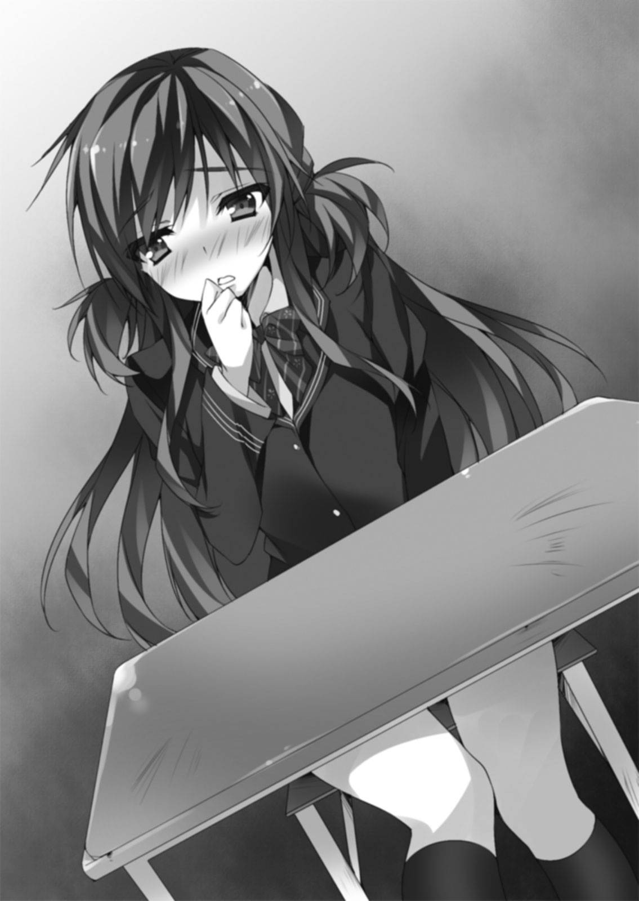

| おまえをオタクにしてやるから、俺をリア充にしてくれ！6 | |
| VI ofおまえをオタクにしてやるから、俺をリア充にしてくれ！ | |
| 村上 凛 | |
| (2013) | |

おまえをオタクにしてやるから、
俺をリア充にしてくれ！６
村上 凛

富士見ファンタジア文庫
本作品の全部または一部を無断で複製、転載、配信、送信したり、ホームページ上に転載することを禁止します。また、本作品の内容を無断で改変、改ざん等を行うことも禁止します。
本作品購入時にご承諾いただいた規約により、有償・無償にかかわらず本作品を第三者に譲渡することはできません。
本作品を示すサムネイルなどのイメージ画像は、再ダウンロード時に予告なく変更される場合があります。
本作品は縦書きでレイアウトされています。
また、ご覧になるリーディングシステムにより、表示の差が認められることがあります。
口絵・本文イラスト あなぽん
１
今俺の部屋のテレビ画面には、お笑いのコントのＤＶＤが流れている。
「......ふふっ......クスクス......」
俺の隣では、綺麗な黒髪の美少女が、カーペットの上に礼儀正しく正座してテレビ画面を見ていた。口元を手で押さえながら、上品に笑っている。
「これ......すっごく可笑しい......ねえ、そう思わない？ 柏田君」
黒髪の美少女......長谷川翠は、隣に座る俺の方に笑顔を向けて共感を求めてきた。
「ああ！ す、すっげー面白いね！」
俺は全力で肯定する。
正直、そのコントはシュールすぎてイマイチ面白さを理解できていない俺だが、そんなこと言えるはずもない。長谷川に好かれたくて、必死で面白がっているフリをする。
今日は長谷川が持ってきた、彼女の好きなお笑い芸人のＤＶＤを俺の部屋で見ていた。
長谷川を部屋に呼ぶのは、これが初めてだった。
今俺の家族は全員出掛けている。つまり、二人きり......。俺の心は正直、お笑いのＤＶＤどころではなかった。胸の高鳴りが止まらない。
やがて、ＤＶＤが終わる。俺はリモコンの停止ボタンを押した。
「ふうーっ、面白かった！」
「......!?」
長谷川は、突然立ち上がったかと思うと、俺のベッドにごろんと横になった。
長谷川、意外にも大胆な......。俺は自分の鼓動が速くなっていくのが分かった。
「............」
気付くと、長谷川が潤んだ瞳で俺を見つめていた。
えっ......!? こ、これって、つまり......。
「柏田君......」
「えっ......」
「......来て......」
「!!??」
長谷川がこちらに両手を差し出しながら色っぽい声で発したセリフに、俺の中の理性が吹っ飛んだ。
「は............長谷川ぁっ！」
俺は獣のように、勢いよく長谷川の上に覆い被さった。
今日で俺たちは、付き合って一か月だ。
長谷川は少しだけ不安げな表情を浮かべながらも、覆い被さっている俺の顔をじっと見つめている。ベッドの上で見つめ合う俺たち。長谷川の潤んだ瞳が、ピンク色の唇が、白い首筋が、その下には......少しばかり控えめな胸が......全て、俺の手の届くところにある。俺の興奮は最高潮に達していた。
「柏田君......」
「え？」
「............好きよ......」
「！」
長谷川は俺の目を真っ直ぐに見つめながら、微笑みを浮かべてそう言った。
ああ、今俺......死んでもいい......。心から、そう思った。
「おっ俺も......俺も、好きだっ!!」
俺が長谷川の唇に口づけるため、目を瞑ろうとすると......。
突然、俺の顔の横を何かがかすり、長谷川の枕元に落ちた。
それは、俺のベッドの脇の壁に固定されている棚から落ちた、一本のＤＶＤだった。
「あら、柏田君、この映画のＤＶＤ持ってるの!?」
突然長谷川はベッドから勢いよく身体を起こし、枕元に落ちたＤＶＤを手に取る。
「えっ!?」
長谷川が興味を示しているそれは、お笑い番組のＤＶＤだった。あれ？ 俺、こんなもん持ってたっけかな......？
「私これ見たかったの！ 見てもいい!?」
「えっ!? い、い、いい......けど......」
長谷川の興味は完全に俺からＤＶＤへと移ってしまった。
なんてことだ......！ 今すげーいい雰囲気だったっていうのに、このタイミングでお預け!? ショックを受けている俺にお構いなしで、長谷川がＤＶＤのパッケージを開ける。
「......えっ!?」
すると、突然長谷川が固まった。元々白い顔が、どんどん目に見えて青白くなっていく。
「は、長谷川......？ どうし......」
不思議に思って、長谷川が手にしているＤＶＤパッケージの中身を見る。
「......!!」
なんと、そこにはパッケージの外側とは全く別物のＤＶＤが入っていた。よりにもよって最悪なことに、ハーレムものエロアニメのＤＶＤが......。
「あ、あぁあ......」
何かフォローしようとしても、動揺のあまり言葉が出てこない。
「柏田君......これって......」
「ああいや、えっと、これはその......」
以前長谷川の口から聞いたセリフを思い出して、ますますパニックに陥る。
そう、長谷川は......オタクが嫌いなのだ。
俺は今まで必死に自分がオタクだということを隠していたっていうのに、こんなもろにオタクっぽいアニメのＤＶＤを見られてしまうなんて......。
どうしよう、どうしよう......。ありとあらゆる言い訳が頭に浮かんでは消える。
「......信じてたのに......」
「......え？」
俯いたまま暗い声で呟いた長谷川に、恐る恐る目をやる。先ほどまでの様子とのあまりの変わりように、俺は言葉を失った。長谷川は無表情になっており、その目は光を失って、焦点が定まっていない。
「は、長谷川......？」
その様子に恐怖すら覚えてしまった俺は、つい長谷川の名前を呼びかけた。
「言ったわよね？ 私、オタクが嫌いだって。柏田君......オタク......だったの？ どうして今まで隠していたの......？ 私に嘘ついていたの？ ずっと私を騙していたの？」
長谷川は感情のこもっていない平坦な口調で、早口に言い切る。
「ごっごめん......その、長谷川に嫌われたくなかったから......」
その尋常じゃない長谷川の様子に、嘘をついて誤魔化したり言い訳する気などまるで起こらず、俺は素直に謝った。
正直俺は今、大好きなはずの長谷川に、ただただ恐怖の感情だけを抱いていた。
「信じていたのに............。嘘つき......」
「............っ」
長谷川は光を失った目で無表情のまま、真っ直ぐに俺を見つめて言う。俺は恐怖に怯えるあまり、何も言えなくなってしまう。
「嘘つき嘘つき嘘つき嘘つき嘘つき嘘つき嘘つき嘘つき嘘つき嘘つき嘘つき嘘つき嘘つき」
「うわああああああああああああああああああああああっっ！」
悲鳴をあげて目が覚めるとそこは、教室の自分の机の上だった。
「はあ......はあ......夢......？」
教室内に数人いるクラスメイトたちが、俺を見てクスクスと笑っている。うう、死ぬほど恥ずかしい......。
どうやら俺は、教室で眠りこけていたらしい。時計を見ると、今は放課後のようだ。前の席に、長谷川の姿はなかった。もう帰宅したのだろう。
「なんつー恥ずかしい奴だよお前」
後ろの席の桐谷が俺を見て笑っている。
「つーかお前、五限目の途中から帰りのホームルームまでぶっ通しで寝てたぞ。すげえ神経だなおい」
「えっ、マジで!?」
確かに、五限目の途中からの記憶が全くない......。
それにしても、夢で良かった......。本当に恐ろしい夢だった......。今思い出してもゾッとしてしまう。心の底から、夢で良かった......。
俺は昨日の放課後、片思いの相手である長谷川翠がオタク嫌いであることが判明して、酷くショックを受けていた。
家に帰ってからもベッドの上で一人思い悩んでいたのだが、考えすぎて結局昨晩は一睡もできなかった。そのために今日は授業中ひたすら睡魔に襲われて、最終的に五限目の授業で眠ってしまったようだ。
昨日長谷川は、オタク文化を嫌っているし、オタク自身のことも苦手だとはっきりと口にした。
俺がオタクを隠したまま長谷川に近付いて......万が一、本当に万が一この先付き合えることになったとしても、先ほどの夢のように......とまでは行かなくとも、どうして隠していたのかと責められたり、嫌われたりしてしまうのだろうか。
ということは、長谷川に好きになってもらうためには、俺はオタク趣味そのものをやめるべきなのだろうか？ そんなこと、果たして俺にできるのだろうか？ オタクではない自分なんて、はっきり言って想像もできない。
一人暗い気分でひたすら思い悩みながら、帰路についた。考えても考えても結論など出なかった。
＊
翌日、登校してきた俺が教室へ向かって廊下を歩いていると、Ｂ組の教室の扉から鈴木が現れた。何やら、手にスケッチブックを持っている。
「カッシー来たー！」
どうやら俺が登校してくるのを待っていたようだ。
「おう、鈴木」
「カッシー、一昨日の夏コミの限定本の件なんだけ......むぐっ」
夏コミ、というオタク用語が出たことに焦り、俺は大慌てで鈴木の口を塞いだ。
俺は一昨日長谷川に『オタク苦手』宣言をされてから、今まで以上に真剣にオタクを隠さなくては、という思いに駆られていた。もしかしたら長谷川が通るかも分からないこんな廊下で、夏コミがどうのなんてオタク全開な話をするわけにはいかない。
「ちょっと......移動するぞ」
俺は鈴木の腕を掴んで引っ張り、そのまま階段まで移動して上の階へと上がった。
「？？？」
不思議そうにしつつも黙って俺に引っ張られている鈴木と共に階段をひたすら上り、屋上まで辿り着いた。
そのまま屋上へ出て、扉を閉める。
さすがにここまで来れば大丈夫だろう。今後、鈴木や恋ヶ崎とオタク関連の話をする際は廊下や教室は絶対に避けて、無理矢理にでも屋上まで連れてこよう。
「わりいな突然。ちょっと俺......クラスメイトにオタクってこと絶対バレないようにしたくてさ......」
「あ、そうなんだー？」
鈴木は深く詮索してくる気配はないようなので助かった。
「で、夏コミ限定本がどうしたんだ？」
鈴木が話そうとしていたのは、恋ヶ崎が鈴木のために夏コミで購入した、ムラサキさんのサークルの同人誌の件だろう。
せっかく恋ヶ崎が鈴木に渡せたと思ったら、あいつ自分の名前を書くのを忘れやがって、誰からのプレゼントなのか鈴木は今全く分からない状態なのだ。
早く恋ヶ崎にそのことを伝えてやらなくては。
「そうそう！ 一昨日家に帰ってよく見たら、同人誌と手作りお菓子の他にこんなもんまで入っててさ！」
鈴木はずっと手に持っていたスケッチブックを俺に見せつけてきた。
「スケッチブック......？」
思い出した。なんか見覚えがあると思ったら、それは夏コミで恋ヶ崎がムラサキさんにイラストを描いてもらったスケッチブックだった。確か、女性客限定で描いてもらえるとかいう話だった気がする。
鈴木はスケッチブックを一枚めくり、ムラサキさんが描いたイラストを開いた。
「これって、ブルーベリーっていう俺の好きなサークルさんが、夏コミで女性客限定で受け付けてたスケブなんだよ！ ってことは、この同人誌をくれた人が、本を買うときに一緒にスケブも頼んだってことじゃん。つまり、この同人誌をくれた人は女性......ってことだよね!?」
鈴木は興奮した様子で、自分の推測を俺に語った。
「え、あ、ああ......そうだな、そうなるな......」
「あの手紙の字とか絵とかの感じから、女子なんじゃないかなあとは思ってたけどさー......。あーもう、ますます謎は深まるばかりだよ！ マジで一体誰なんだろー!?」
鈴木は興奮状態のまま、スケッチブックを眺めて不思議そうにしている。ついには謎は深まるばかり、なんて探偵気取りなセリフまで飛び出してしまった。
「なんかお前、楽しそうだな......？」
「えーだって、軽く探偵気分でテンション上がるじゃん！ 俺最近推理ものにハマっててさー！」
鈴木はうきうきしながらそんなことを言う。完全に楽しんでいるようだ。
ああもう......めんどくせええええええ！
こうなったら、俺の口から言ってしまった方が早いのではないか。その同人誌とお菓子とスケッチブックを鈴木にプレゼントしたのは、恋ヶ崎だという事実を。
実は一人だけ、鈴木がその同人誌を欲しがっているということを話した相手がいるんだが......という感じで切り出せば、結構自然に話せるんじゃないか、と考える。
「あの......その同人誌のことだけ......」
しかし話そうとした瞬間、タイミング悪く予鈴が鳴ってしまった。
「あ、戻んなきゃ」
屋上から教室までは結構距離があるので、急ぎ足で俺たちは教室へと戻った。
「恋ヶ崎、ちょっといいか？」
朝のホームルームと一限目が終わった後の休み時間、俺は恋ヶ崎に声をかけた。
「何？」
「ちょっと......」
ここでは話せないから......という意味を込めて廊下を指さす。
恋ヶ崎はだるそうに席から立ち上がる。
「......ってあんた、一体どこまで行くのよ？」
教室を出た後、黙々と階段を上がる俺の後ろ姿に向かって恋ヶ崎が尋ねてきた。
「屋上」
「は？ 屋上～!? なんでそんなところまで行くの!?」
息を切らして文句を言いながらもついてくる恋ヶ崎に内心悪いと思いつつ、階段を上りきった。
「はあ......疲れた......。あんた歩くの速いしっ。なんでわざわざ屋上まで連れてきたのよっ!?」
プンスカしている恋ヶ崎の様子を見て、鈴木に渡した同人誌の話を恋ヶ崎にしようと思っていたのだが、その前に長谷川がオタク嫌いという件を説明した方がいいな......と思い直した。
「悪いな......。実は一昨日、長谷川がオタク嫌いってことが判明したんだよ......だからこれからは、教室内は勿論、廊下とか長谷川に聞かれる可能性がある場所でオタ話をしないようにしたいと思って......」
「えっ......？ 長谷川さんが、オタク嫌い......？」
恋ヶ崎は俺の発言に、眉をひそめて驚いている。
俺は恋ヶ崎に、一昨日図書室で起きた出来事を説明した。
長谷川がアニメ雑誌を見つめていたから興味があるのかと思って軽く尋ねたら、アニメ雑誌に嫌悪感を丸出しにしていたこと。オタクが嫌いなのかと聞いたら、オタク文化は嫌いでオタクの人も苦手、と答えられたこと......。
「へぇー......意外。そこまで明確に嫌ってる人って、逆に珍しくない？」
「え......？ そ、そうか......？」
俺は今まで、オタクは嫌われて蔑まれる存在だと思っていたのだが。
「うん。オタクとまではいかなくても、みんな結構漫画とかは読んでるしさ、ゲームやってる子も多いし。だからそんなはっきりと『オタク嫌い～』って言ってる子なんて珍しいっていうか......。現にあたしの周りにはいないし」
そ、そうなのか......。もしかして今って結構、リア充もオタクに対しての偏見が少なくなってきているのだろうか？
「長谷川さんなんて特に、偏見とか持ったりしなさそうな子なのに......。もしかしたら、なんか特別な理由とかあったりすんのかな......？」
「特別な理由、って......!?」
「いや、知らないけど......。例えば、小豆ちゃんみたいに昔オタクに嫌な思いさせられたとかさ」
「あぁ、なるほど......！」
そう言われてみれば納得する。確かに、長谷川がなんの理由もなしにオタクを嫌うような人には思えない。
「オタク嫌いになったきっかけ、さりげなく探ってみるかな......」
「えぇ？ さりげなく探る、って......あんたにそんなことできんの？ 探ってるうちにオタクってこと長谷川さんにバレちゃいそうじゃない？」
「えっ!?」
「なんでこの人そんなにしつこく聞いてくるのかしら？ もしかして柏田君自身がオタク......？ って感じで勘づかれそうじゃない？ 長谷川さんって勘良さそうだし、あんたそういうの下手そうだし」
うぐぅ......た、確かに......。余計なことはしない方がいいか......。
「あーもう、マジでこれからどうしたらいいのか分かんなくなっちまったよ、俺......」
長谷川がオタク嫌いと知ったからといって、俺が長谷川のことを好きな気持ちは変わらないのだ。
「別に、どうもしなくていいでしょ」
「......え？」
恋ヶ崎の発言に少し驚いて、俺は奴の顔を見る。
「だって今までだって必死こいてオタク隠してきたじゃん。だから今後も、今までどおり、オタクを隠していけばいいだけの話でしょ？」
恋ヶ崎は何の迷いもなくすっぱりと言い切った。
「ま、まあそうなんだけど......そこまでオタクを嫌ってるなら、俺も脱オタした方がいいかなあとか......最近考えたりもして......」
「脱オタ～!? オタやめるってこと？」
「ま、まあ......」
「無理でしょ、そんなの！ オタじゃないあんたなんて想像できないし」
「んなっ......！」
まあ自分でもそう思ったけど、はっきり人から言われると微妙な気分だ。
「ってか、好きな人が嫌だって言ったからやめるって......あんた、別にそこまでオタク趣味に思い入れとかなかったんだ？」
「ん、んなわけねえだろ！ むしろはっきり言って俺に趣味なんてオタク趣味くらいしかねえくらいだからな！ 俺だって、絶対やめたくねえよ！」
『絶対やめたくない』......そうだ、今自分の口ではっきりと言って、自覚した。
俺はオタクを『絶対やめたくない』と思ってるんだ。
「じゃ、無理にオタクやめる必要ないじゃん」
「......そ、そうだよな......今までどおり......いや、今まで以上に厳重にオタ隠せば......別に脱オタなんか......しなくていいよな！」
認めたくないが、恋ヶ崎に『オタクをやめる必要などない』『今までどおりでいい』と言ってもらえたことで、脱オタなんてやめようと思い直すことができた。
そうだよ......長谷川に好かれるためにオタクをやめるだなんて、それってなんかおかしいだろ。好きになってもらうために、今まで自分の大部分を形成していたものを捨ててしまうなんて、大げさかもしれないが......それはもう俺が俺ではなくなってしまうのではないだろうか、とすら思う。
恋ヶ崎の言葉のおかげで、オタクをやめないでいようという決心がついた。
今までうじうじ悩んでいた自分が馬鹿みたいにすら思える。
やっぱり恋ヶ崎って、俺にはない力を持っている......ような気がする。
「じゃあ、まあそういうわけだから、今後オタに関する話をするときは屋上とか人がいないところで、ってことで頼む！」
「はいはい。で、話ってそれで終わり？」
「あっ......ちげーよ！ 本題忘れてた！」
俺が恋ヶ崎を屋上まで連れてきたのは、鈴木に渡した同人誌の件を話したかったからなんだった。
「お前さ、一昨日鈴木に同人誌渡したはいいけど......差出人の名前書き忘れただろっ!?」
「..................えっ？」
恋ヶ崎は俺の言葉に、一瞬で青くなっていった。
「鈴木、誰がくれたんだろー？ って今騒いでるぜ。一瞬俺だと勘違いされたし」
「う、うそおっ......！」
頭を抱えてパニック状態に陥る。
「そういえば、確かに......書き忘れた、かもっ......！」
「阿呆......」
こいつ、いつもはしっかりしてるくせに、肝心なとこが抜けてたりするんだよなあ......。
「あーもう......マジ最悪ーっ！」
「もう、俺の口から伝えるけどいいよな？」
「えぇっ!? でもなんかそれって......恩着せがましくない？」
「............あ？」
恋ヶ崎の発言に少しイラッとして、聞き返す。
「理想としてはぁ～......何かのきっかけで不意にあたしが渡したってことがバレて、『あ、恋ヶ崎さん......君だったの？ ずっと探してたんだ！』......的な展開とかぁ～！」
「............」
恋ヶ崎は目を輝かせて嬉しそうに語り始めてしまった。
くそっ、突然スイーツ（笑）モードに突入しやがったな。
「あーそうかよ......じゃあもう勝手にしろや」
「何よ、勝手にしろって......あーもう、どうしよう......どうにかしてさりげな～くあたしが渡したってことがバレる方法ないかなー？」
そんな都合のいい方法があるわけねえだろ。せっかく人が鈴木に教えてやろうかと提案してやったっていうのに、もう知るか。
「あっそういえばお前、小説は進んでんのかよ？」
ふと思い出したので、軽い気持ちで尋ねた。
小説というのは、十月のイベントで出す恋ヶ崎の同人誌のことだ。ずっと気になっていたのだが、喧嘩したりなんだりで最近ずっと進行具合を聞けていなかったのだ。ムラサキさんにも頼まれたのだから、ちゃんと見てやらなくてはいけないというのに。
「え？ あぁ......」
恋ヶ崎は俺の言葉を聞いて、突然不機嫌そうな顔になった。
そうだ、そもそもこの間の喧嘩の発端は、俺が恋ヶ崎の同人小説に対して厳しく批判しすぎたことだった。
恋ヶ崎が漫画のヒーローの設定を勝手に大幅に変更して、誰得小説を書き上げてきたので、俺はつい頭に来て厳しい言葉を浴びせてしまい、その後喧嘩に発展してしまった。
こいつは今そのときのことを思い出して不機嫌になっているのだろうと思う。
「いや、その......あれは言い過ぎたと思ってるって」
俺は喧嘩の後恋ヶ崎に一度謝ったが、それは小説の厳しい批判の件も含んでいるつもりだった。だがはっきりと本人に伝えたわけではないので、念のため今一度伝えておく。
「......え？」
恋ヶ崎が驚いた顔で俺を見る。
「あのときちょっとイライラしてて、言葉がきつくなっちまったんだよ......」
ヒーローの設定を変えるのはやめた方がいい、という根本的な意見は変わっていないが、言い方がきつすぎたということは素直に反省している。あのときの俺はどうかしていた。
「柏田............」
恋ヶ崎は少し驚いたような表情で俺を見た後、ゆっくりと口を開いた。
「......ま、まあ......あたしも......ちょっと自分の趣味に走りすぎたとは、思ってるわよ......」
恋ヶ崎は不機嫌そうな顔のまま、だけど納得した様子でそう言った。思ったより素直で驚いた。俺の意見に納得してくれたということなのだろうか。
「あれから全然書いてなかったから......また一応、進めてみる」
「ああ......頑張れよ。あ、なんかネット上に二次創作の小説とか載ってたりすると思うから、それ参考にしてもいいと思う」
「ネット......？」
この間、恋ヶ崎が書いている小説の元ネタ『不器用ハニー』の二次創作のＷＥＢ小説を探してみたところ、結構な数ヒットしたのだ。二次創作の絵や漫画、小説を掲載した同人サイトのリンク集があった程だ。
「あぁ、まあ少しは参考になると思う。『不器用ハニー 同人 小説』とかで検索すれば引っかかると思うから」
「へぇーそんなのあるんだ。読んでみよー」
「そうだな。......あ、そうだ、俺もう一つお前に話したいことが......」
俺は桜井さんのことを恋ヶ崎に相談しようとしたのだが......またもや、話そうとした瞬間に予鈴が鳴ってしまった。
「あっ次移動教室じゃん！ 早く戻んないと！」
恋ヶ崎が慌てて階段を駆け下り、俺もその後についていった。
そう、俺が今抱えている心配事の一つ......。
それは、桜井小豆さんの態度のことだった。
池袋に映画を見に行った日、俺はどうしても恋ヶ崎のことが心配になって、桜井さんと遊んでいる最中だというのに恋ヶ崎の許へ行ってしまったのだ。
その日の夜、その件を謝ろうと桜井さんに電話したものの繋がらず、謝罪のメールを送っても返ってこず、やっと返信が来たと思ったらとても素っ気ないメールだった。
やっぱり、どう考えてもおかしい。
桜井さんは怒っているとしか思えない。
俺はそう考えて、今とても焦っていた。
＊
その日の放課後、俺は桜井さんのクラスであるＤ組の前に立っていた。
やはり、直接会って謝るのが一番だということに気付いたのだ。
まだＤ組はホームルーム中のようで、担任の話し声が教室から聞こえてくる。やがてホームルームが終わり、扉が開いて中からＤ組の生徒が次々と出てくる。
「ねーねー今日帰り池袋寄ってかない？」
「あーっいいねー、行きたーい！ ね、小豆ちゃんも行くでしょ？」
「えっ......!? ......うーん、ごめん......わたしはやめとこっかな......」
会話をしながら女子三人組が教室から出てきたと思ったら、その中に桜井さんの姿があった。
「えっ!? か、柏田君......？」
三日ぶりに見る桜井さんは、俺の姿を見て酷く驚いていた。
「どっ、ど、どうして......ここに......？」
「あ、桜井さん......ご、ごめん急に......この間のこと、謝りたくて......」
俺のセリフを聞いた桜井さんは、驚いた表情のまま俺を見つめている。ああ、やっぱり怒っているんだろうな......まともに彼女の顔が見られない......と思っていたが、次の瞬間。
「......そ......、そんなーっ、謝る必要なんてないですよっ!?」
俺が想定していたのと真逆の反応が返ってきて、俺は凍り付いた。
桜井さんは満面の笑みで明るくそう言ったのだ。
「え......いや、でも......」
「柏田君は何も悪いことなんてしてないんですから、謝らないで下さい！」
再度桜井さんの顔を見ると、変わらず笑顔を俺に向けていた。
その笑顔には怒りなど少しも感じられない。
「それじゃあ、わたしたちこれから池袋へ行くので......柏田君、また」
桜井さんは言いながら笑顔で俺に手を振った。
「えっ、あっ......うん」
俺は今日桜井さんと一緒に帰ろうと思っていたのだが......まあ友達と池袋へ行くという先約があったのなら仕方がない。俺が勝手に思っていただけなわけだし......。俺も慌てて笑顔を作って、手を振り返す。
良かった......桜井さんは怒ってなどいなかったんだ。あんな笑顔を向けてくれたし、今まで通りじゃあないか。あんなに心配していた自分が馬鹿みたいだ。
......だけど、なんだろう......この、心に残った違和感は......？
桜井さんは優しく接してくれたのだが、ほんの少しだけ......いつもと様子が違ったような気がしたのだ。
......俺の考えすぎだったらいいのだが......。
＊
その日家に帰って、二階のリビングのソファーに制服のまま寝転がって買ってきた漫画雑誌を読んでいると、階段を駆け上がってくる足音が聞こえてきた。
勢いよくリビングの扉があけられ、そこにいたのは......。
パンツ一丁の、我が妹だった。
......中学一年とはいえ、どう見ても小学生の体型そのもの。
「......ギャ────ッ！」
俺の姿を見るやいなや、あかりは悲鳴をあげながら近くにあったティッシュ箱を俺に向かって投げつけてきた。
「いてっ！」
見事俺の顔に命中する。
「な、な、直輝......学校から帰ってたわけっ!?」
どうやらあかりは風呂に入っていたらしく、慌ててリビングの扉を閉めた。
まあそんなに慌てんでも、お前のパンイチ姿なんか見たってなんとも思わねえよ......。
それから少しして、部屋着を身につけたあかりが扉から出てきた。
「なんで着るもの手に持ってるくせに、パンイチで風呂から上がって来るんだよ......」
「......はあっ！ そうだったっ！」
あかりは慌ててテレビの前に正座して、チャンネルを変えた。
何やら、アニメのオープニングテーマが流れている。
「あ──っ！ オープニングの最初からちゃんと見たかったのにっ！ 直輝のせいでもう始まっちゃってるしーっ！」
人のせいにすんなよ......。
どうやら我が妹は、アニメをオープニングの最初からリアタイで見るために、服を身につける時間も惜しんでパンイチで風呂から上がってきたようだ。
つーか、オープニングなんて毎週同じだろうに、それですら最初から見たいほど好きなアニメなのかよ......。
「おい、あんまり近くで見ると目ぇー悪くするぞ」
テレビの真ん前から動こうとしない妹に、一応兄らしく注意してみたが、無駄だった。
「集中して見たいんだからもう話しかけないで！」
一体何にそんな夢中になっているのか気になって、テレビ画面に目をやる。
何やら衛星放送でやっているアニメのようだが......ああ、確か『黒子のサッカー』というサッカーアニメだ。漫画は毎週買っている雑誌で読んだことがある。そういえばアニメ化してたんだな。
「直輝も見なよ！ 超～面白いからっ！」
妹がそんなに入れ込んでいるアニメとは一体どういうものなんだろう......と気になって、俺もあかりと一緒に鑑賞することにした。
「はぁああああ～っ！ 黄峰君っ！ 超かっこいいいいい──っ！」
黄色い髪のイケメンキャラが出てきた瞬間、あかりが狂ったように叫び出したのでセリフがよく聞き取れなくなってしまった。
「あかり、うるさい。聞こえない」
その後あかりの奇声に妨害されつつも、最後までアニメを見終えた。
まあ、普通に面白かったが......。正直、アニメの内容よりあかりの壊れっぷりが気になってしまい、集中して見られなかった。何せ、黄色い頭のイケメンが画面に映るたびギャーギャー騒いでいるのだ。大丈夫かこいつ？ 我が妹ながら心配になってくる。
「やばいよねっ！ これ完全に公式で黄×黒じゃんっ！ 萌え死ぬ～～っ！」
「......はぁ......？」
「黄峰君、超熱烈にアプローチしてたじゃーんっ！ 黒子のこと好き過ぎでしょーっ！」
どうやらあかりは、黄色い頭のイケメンが主人公に対して「また一緒にサッカーやりたい」と言っていた件を、腐った脳内フィルターで勝手に変換してＢＬ妄想しているらしい。俺みたいに普通に視聴している人間にとっては勿論ＢＬなんかには見えず、純粋に『あぁ、一緒にサッカープレイしたいんだろうなあ......』と思うだけなんだが、腐女子の目には違うように映ったようだ。
「あぁっ......この萌えを分かってくれないなんて......アホ直輝っ！」
「はあ？ お前がオカシイんだぞ......」
俺の方がおかしいみたいに言うなよ......。
「......小豆さんだったら......分かってくれるのになー......」
「！」
不意に、あかりの口から桜井さんの名前が出て、俺は心底驚いた。
そういえば......以前桜井さんがうちに来たとき、あかりと桜井さんで黒子のサッカーの話題で盛り上がっていたなあ......。
「ねー、小豆さんまたうち来ないの!?」
あかりが桜井さんのことをそんなに気に入っていただなんて、正直意外だ。まあ、同じ腐女子同士で話も合っていたようだったしな。
「そ、そうだな......また機会があれば、誘ってみるよ......」
今日の桜井さんの様子を思い出す。
怒ってるわけじゃないようだし......あかりが会いたがっていたと伝えれば、またうちに来てくれるだろうか......？
「ほんとーっ!? ......って、直輝、なんで遠い目になってんの？」
桜井さんのことを考えて、俺は無意識に遠い目になってしまっていたようだ。
今日俺に笑顔を向けてくれたんだ、何も心配することはない......はずなのだが。
胸がこんなにざわつくのは、一体どうしてなのだろうか......。
＊
「柏田、ちょっと来て！」
翌日、休み時間に恋ヶ崎が俺の席まで来て、俺を呼びつけた。
そのまま廊下を出て、階段を上がる。......ということは、屋上へ行くのか。オタク関連の話をするつもりなのだろうか。
「昨日あんたが言ってた『不器用ハニー』の同人小説、家に帰って早速パソコンで検索して読んでみたの！」
屋上に辿り着いて早々に、恋ヶ崎はそんな話を始めた。
「お、おう......」
今気付いたが、恋ヶ崎はとてもテンションが高まっているようだ。
「超面白かった～！ あれ素人の人が書いてんのよね？ みんな超上手くてびっくりしちゃったー！」
「そ、そうか......」
「なんかドリーム小説？ とかいうのもあって、自分の名前入力すると自分が主人公っていう設定で小説が読めるやつとかもあって～！ それも面白かったー！」
ドリーム小説......実際に読んだことはないが、どういうものかは知っている。
「そらー良かった。参考になったか？」
「うん！ ......なんか......」
恋ヶ崎は少し難しそうな顔になる。
「多少設定とか作ってる人もいたことはいたけど、不自然じゃないレベルで......あたしレベルに大幅に改変してる人は......全然、いなかった......」
「そうか......」
自分の書いた小説を思い出してか、恋ヶ崎は複雑そうな表情だった。
「今、小説書き直してるから。べ、別に、あんたに言われたからじゃなくて......自分で他の人の小説読んで、まずいかも......って思っただけだから！ だから......亮君がオタって設定は、まるごとなくしてる」
「おぉ」
恋ヶ崎の言葉を聞いて、俺は心底安心した。きっかけはなんであれ、設定大幅改変を自分でまずいと思って書き直してくれたのなら良かった。
今からでもちゃんとまた進めれば、来月のイベントまでに間に合うはずだ。
「で、あんた......昨日ここで話してるとき最後に何か言いかけてなかった？」
「え!?」
昨日......そうだ昨日、桜井さんの件を恋ヶ崎に相談しようとしたところで予鈴が鳴ってしまったんだ。こいつ、なにげに覚えてたのか。
「いや、その......桜井さんのことなんだけどさ......」
「小豆ちゃん？ あ、あんた、あの後ちゃんと謝ったんでしょーね!?」
「あ、ああ......謝ったよ」
「小豆ちゃん、なんて？」
「メールで最初に謝って、昨日直接会って謝って......そしたら、謝らなくていいですよって笑顔で言ってくれたから......怒ってないとは思う」
「そっか......」
恋ヶ崎は安心した様子で一息ついた。どうしてこいつが俺と桜井さんの間のことをこんなに心配しているのかはよく分からない。
「桜井さん......その後様子どう？」
「え？」
あまりに漠然とした質問を、恋ヶ崎に投げてしまった。
「どう、って......別に......この間一緒に帰ったけど、そのときは普通だったけど......」
「そ、そうか......」
やはり何か様子がおかしいと思ってしまったのは俺の勘違いだったのだろうか。
「なんで？」
「いや、普通なんだったらいいんだ......」
「......？」
恋ヶ崎は俺の言葉に、不思議そうに眉をひそめた。
──きっと俺の考えすぎなんだ。すぐに考えすぎてしまうのは俺の悪い癖だ。
俺は何度も自分にそう言い聞かせて、気持ちを落ち着けた。
これ以上恋ヶ崎にぐちぐちと相談したってうざがられるだけだろうと思い、この話はもうここで終わらせることにした。
「あ......そういえば恋ヶ崎お前、あれから細川にちょっかいかけられてないのか？」
不意にクラスメイトの細川のことを思い出し、恋ヶ崎に尋ねた。
細川は爽やかな出で立ちの割に女とやりまくっているという噂があり、先日恋ヶ崎がその標的になったのだ。
細川の許から恋ヶ崎を連れて逃げて以降、学校で細川に会う度少しびくびくしていたが、今のところ細川は俺に何も言ってこなかった。
「えっ......ああ......あの後、体調大丈夫だった？ とかは声かけてきてくれたけど......」
「マジで!?」
「あとはたまに、優しく声かけてくれることはある......くらいかな」
細川の奴、その様子じゃまだ恋ヶ崎のことを諦めてなさそうだな......。
「っていってもマジでそれだけだからね？ 変なことは一切されてないし......」
「だーもう、お前は甘いんだよ！ 俺が言ったこと忘れたんか？ あいつが危ないって話。お前に隙があるから、細川はまだお前のこと諦めてねえんじゃねえの!?」
恋ヶ崎の甘い態度に頭に来て、一気に捲し立ててしまった。
言ってから、なんでこんなに頭に来てるのか自分でわけがわからなくなってきた。やべっ、これ絶対恋ヶ崎に『なんであんたにそこまで言われなきゃなんないの!?』って逆ギレされるパターンだな......そう思って恐る恐る恋ヶ崎の顔を見ると、
「..................」
恋ヶ崎は、逆ギレなどしてこなかった。黙って不思議そうに俺を見つめているだけで、怒ってはいないようだ。なぜか少し、顔が赤くなっているような気もする。
「べっ......別に......あたし、隙なんて見せてないし......なんであんたがそんなに必死なんだか、意味わかんないっ......」
ボソボソと小さい声で力なくそれだけ反撃すると、ぷいっと横を向いてしまった。
「......？ とにかく、用心しろよ......」
「わ、分かってるわよ！」
それからそろそろ休み時間が終わる時間になったので、俺たちは教室へと戻った。
２
それから一週間が経過した。
「おお、大分良くなったな！」
昼休み、俺は屋上で恋ヶ崎が家で書き直してきた同人小説を読んでいた。
「まあね！ めっちゃ他の人が書いてる小説とか読みまくって研究したし！」
恋ヶ崎は得意げに、小さい胸を張った。
ヒーローである大場がオタク男子、という原作には一切ない誰得設定もきれいに消え去っているし、それ以外にもケータイ小説っぽい読みにくい文体や日本語になっていないところなども改善されてきた。
「あとは......そうだな、ここらへんとかちょっと短くしてもいいような気もするけど......」
原稿の一部を指さし、恋ヶ崎に提案してみる。
「えぇ!? そ、そう？」
恋ヶ崎は不満げにしつつも、意外にも素直に俺の言ったことを原稿に書き込んだ。
「あ、そうだ。イベント当日なんだけどね、なんかサークル通行証？ ってやつが、サークル参加者本人分含めて三枚もらえるんだって」
「ふーん？」
「あたし、小豆ちゃん、ムラサキさん、あんた......で四人でしょ。一人分足りないじゃん」
「ああ、そういえばそうだな」
「で、ムラサキさんがね、個人でサークル参加するって言ってくれてて。なんか、元々そのつもりで申し込んでくれてたんだって。だから当日あたしのスペースにいるのはあたしと小豆ちゃんとあんたの三人だから。あと、小豆ちゃんが提案してくれて、あたしと小豆ちゃんコスプレすることにしたから」
「へぇー......えっ!?」
サークル参加云々の件は理解できた。問題はその後だ。
「コスプレ!? ......って、何の？」
「......小豆ちゃんから聞いてないんだ......？」
恋ヶ崎は不思議そうに眉をひそめた。
「いや、全然聞いてないけど、なんで!?」
「や、小豆ちゃんのことだからあんたも誘ってんのかな～、ってあたしが勝手に想像してただけなんだけどさ......ほら、よく三人でコス合わせしたがってたし」
「え、ああ......」
そういえば以前、三人でコスしよう、って言ってくれたことがあったなあ......。あのときは嬉しかったもんだ。
だけど今回は、誘われてないどころか二人がコスをするということ自体、今恋ヶ崎の口から初めて聞いた。......別にコスプレしたかったなどというわけでは決してないのだが、桜井さんが俺に何も言ってくれなかったことが、少し......ショックだった。
恋ヶ崎の話によると、二人は恋ヶ崎が同人誌を出す少女漫画『不器用ハニー』のヒロインとヒロインのライバルキャラのコスプレをするらしい。恋ヶ崎がヒロインの優衣のコスプレで、桜井さんがライバルの女キャラのコスプレをするとのことだ。
「だからあんたももしコスしたいんだったら、それ以外のキャラで......」
「いや、したくねえから大丈夫です」
きっぱりと返答する。
桜井さんが怒ってないということは確認できたはずなのだが......やはり、以前の態度に比べて少し違和感を覚えてしまう。本当に、俺の気のせいなのだろうか。
「あ、そういえば、今日から文化祭の話し合いが始まるんだっけ」
「え？」
恋ヶ崎に言われて思い出した。文化祭の話し合い......今日からだったか。すっかり頭から抜けていた。学級委員である長谷川の力になろうと心に決めたのだから、しっかり頑張らなくては。
「ていってもあたしにとってのメインはあくまで鈴木君のバンドのボーカルだから、クラスの出し物ではあんま負担が少ない係がいいな～」
恋ヶ崎が目にハートマークを浮かべてうっとりと言う。
「あぁ......お前あれ、マジでやるんか......」
「え!? 当たり前じゃん！」
すっかり忘れていたが、そういえばそんな話が出たんだった。こいつが鈴木のバンドでボーカルなんて、果たして本当に大丈夫なのだろうか？ 今から俺の方が不安だ。鈴木と一緒にいるだけで緊張してテンパるくせに、男だらけのバンドでボーカルだなんて......。
そろそろ予鈴がなる頃になったので、俺たちは教室へと戻った。
その日の午後のホームルームで、文化祭に関する話し合いが始まった。
「それではまず、クラスの出し物を決めたいと思います。意見がある人は手を挙げて下さい」
長谷川が教卓の前に立ち淡々と述べた。
クラスの奴らが何も意見を述べなかったら、俺が何か出さないと......と思っていたが。
「はーい、お化け屋敷ー」
「縁日やりたいでーす」
「喫茶店！」
意外とクラスメイトたちは話し合いに乗り気で、あっという間に意見が出そろった。
そこから多数決が行われ、上から順に第一希望から第三希望までが決定する。多数決の結果、
『第一希望......お化け屋敷、第二希望......劇、第三希望......喫茶店』
と、決まった。
「それでは、本日の委員会に文化祭実行委員が参加して、この中から出し物を決定してきます」
長谷川が締めて、ホームルームは終了した。
＊
翌日も引き続き文化祭の話し合いが行われた。
「昨日の委員会での話し合いの結果、第一候補のお化け屋敷は希望クラスが多数だったため抽選に漏れてしまいましたが、第二希望の劇に決まりました」
長谷川の言葉に、クラスが少しだけざわつく。
劇、か......。できれば役者じゃなくて裏方がいいな......。
「文化祭実行委員が図書室からいくつか脚本を借りてきてくれましたので、教室の本棚に暫く置いておきます。各自それを見て、次の話し合いまでに何をやりたいか決めておいて下さい。明日の話し合いで何の演目を行うか決めます」
ホームルームが終わり放課後になると、クラスの数名が本棚へ脚本を見に行っていた。 やがて本棚の周りにクラスメイトたちがいなくなってから、俺も脚本を見に行く。
そこには、俺の知っている話の脚本もあれば、全く知らないタイトルもあった。そのうちの一冊を手に取り、中を開く。
「柏田君、面白そうな脚本あった？」
振り返って、驚いた。そこには長谷川が立っていたのだ。長谷川の方から声をかけてくれるなんて、それだけで俺はとても嬉しかった。
一瞬だけ、この間夢に出てきた恐ろしい長谷川が頭をよぎったが......慌てて脳内から消し去る。
「あ、まだ見始めたばっかりだからなんとも言えないんだけど......結構知らない話も多くて」
「そうよね。この脚本は文化祭実行委員の人たちが、これまでに優勝や優秀賞を獲ったクラスの脚本を先生に聞いて参考にして選んだらしいの。だから先生や審査員受けのいい、少し硬い感じの話が多いかもしれないわ」
「あ、なるほど、そうなんだ。......あ、これなら知ってる」
俺が手に取ったのは、童話『白雪姫』の絵本だった。脚本の他に、いくつか絵本も置かれていた。
「ああ、そのへんは、先生に受けるとかそういったことを度外視して、知名度が高いものをやった方が観客の受けがいいんじゃないか......という意見があって借りてきたみたい。童話に演目が決まった場合、絵本から脚本に起こすらしいわ。私個人的にも、みんなに知られている物語の方がいいんじゃないかと思っているのだけれど......」
「そうだね、小難しい話よりこういう方がやりやすくていいかもね」
それから俺たちは、二人でいくつか脚本を読みあさった。放課後の時間を長谷川と二人きりで過ごせるなんて......文化祭ってのもいいもんだなあ。
「あ、あのさ......この後特に用がないんだったら......い、一緒に帰らない？」
一通り脚本を見終えたので、思い切って俺は長谷川を誘ってみた。
「えぇ、勿論構わないわ」
長谷川は薄く微笑んで承諾してくれたので、俺は嬉しくなった。
帰り支度を終えて、二人で教室を出る。
廊下を並んで歩きながら、何か話そうと隣を歩く長谷川の方に軽く顔を向けると......長谷川のサラサラの黒髪から、ほのかにいい香りが漂ってくる。
うっ......まずい、この間の夢を咄嗟に思い出してしまう。それも今脳裏に浮かんでいるのは、後半の恐ろしい展開ではなく......前半の甘い展開の方だ。この長谷川が、俺の部屋のベッドに無防備に寝転がって......好きよ、なんて言ってくれて......あと一歩ってところまでいったんだよなあ......。
「柏田君？」
「えっ!?」
俺が長谷川の横顔を見つめたまま惚けていたので、不思議に思った長谷川が俺の方を見た。目が合ってしまいドキッとする。
「あっ、ごっごめん！ なんでもない！」
俺は慌てて顔を正面に戻し、長谷川の方を見ないようにした。これ以上見ているとまずい。もう、あんな夢忘れよう......。必死で脳内からかき消す努力をした。
気まずい沈黙が流れてしまう。相変わらず俺の鼓動は高鳴ったままだった。
「ぶっ......文化祭に向けて、学級委員の仕事大変？」
やっとの思いで、長谷川に話を振った。それは、俺が前から聞こうと思っていたことだった。
「いえ、文化祭実行委員の人たちがほとんどやってくれるから、私はほとんど何もしていないのよ。私の仕事といえば、ホームルームの議長を務めるくらい」
「そっか......」
その返答を聞いて、俺は少し安心する。
「な、何か俺にできることがあったら何でもするから、どんどん言ってね！」
少しでも長谷川の役に立ちたいと思い、そう口にした。
「そう？ ありがとう」
長谷川は少しだけ微笑んで、礼を言う。その美しい横顔に思わず見とれてしまう。
「ああそうだ......この間莉緒とメールしていたのだけれど、柏田君によろしく、と言っていたわ」
「えっ!?」
莉緒......とは、長谷川の中学時代の友人、園田さんのことだ。先日、彼女の高校の文化祭へ行って初対面した。
「あの子、柏田君のこと気に入ったみたいよ」
「えっ......えぇっ!?」
俺は長谷川のセリフに驚きを隠せない。
「あの子、マイペースというか......人の好き嫌いが激しいの。だから、態度を見ればすぐに、あの子が相手をどう思っているかが分かるのだけれど......柏田君と一緒のときは、とても好意的な態度だったわ。あれは、気に入っている証拠だと思うわ」
「えっ......そうなの!? 全然そんな風に思わなかった......」
確かに園田さんは、文化祭の時『今度三人で遊ぼう～』と言ってくれたが......完全に社交辞令だと思っていた。
園田さんと仲の良い長谷川が言うのだから、確かなのかもしれない。俺は嬉しくなった。
「いやそれにしても、園田さんと長谷川って本当に仲がいいんだね」
園田さんの高校の文化祭での長谷川と園田さんの様子を思い出し、しみじみと言う。
他人に対してあんなに遠慮なく毒を吐く長谷川の姿が、俺にとっては衝撃的だった。
「ああいう感じの長谷川、初めて見たからなんか新鮮だったっていうか......」
「そう？ 私としては特に意識しているつもりはないのだけれど......どうも、莉緒と話すときはいつも、ああいう態度になってしまうのよね......」
長谷川は、無意識だったのか......。
「じゃあ柏田君、また明日」
話しているうちに、あっという間に駅に辿り着いてしまった。長谷川と二人きりで過ごせる夢のようなひとときが終わってしまったことを、非常に名残惜しく思う。
「あ、ああうん、また明日！ ......文化祭、頑張ろうね！」
長谷川は俺の言葉に少しだけ笑って、俺たちは別れた。長谷川が改札を通り、自分の電車の乗り場へ向かう。姿が見えなくなるまで、俺はその後ろ姿を見つめていた。
＊
翌日の話し合いで、劇の演目が決定した。
いくつか上がった候補の中から多数決を取り、一番票が多かった（ちなみに俺も投票した）、『白雪姫』に決定した。
「それでは次に、配役を決定したいと思います」
長谷川が綺麗な字で黒板に役を書き出す。白雪姫、王子、王妃、狩人、七人の小人......途端にクラス中がざわつき始める。
俺としては、長谷川が白雪姫をやったらさぞかし似合うだろうなあ、などと思ってしまうが......本人の希望もあるしなあ。
「おい柏田、お前何か役やんのか？ 白雪姫役に推薦してやろうか？」
後ろの席の桐谷がおぞましいことを言ってきた。
「馬鹿言ってんじゃねえ......俺は劇出ねえよ。大道具とかでいいわ......」
登場人物の数的に、クラス全員が出演するわけではないらしい。シナリオ、演出、助演出、舞台監督、小道具、大道具、衣装、照明、音響......などといった裏方の役割分担があり、劇に出演する人、裏方に徹する人、どちらも兼任する人、に分担されるようだ。俺は劇には出ず、完全に裏方に回りたいと思っている。
「では、それぞれの役に立候補や推薦があれば挙手して下さい」
役を全て書き終えた長谷川が、クラスメイトたちに向かって声をかける。
「はぁ～い」
話し合いが始まってすぐに、ギャルグループに属している派手な女子（......確か藤澤という名字だった気がする）が、手を挙げた。
「王子様の役には細川君がいいと思いまーす」
細川......か。一番前の席に座る奴の後ろ姿を見る。恋ヶ崎とのこともあったし奴にはいい印象を持っていないが......まあ、外見だけなら王子って感じがしないこともない。
「えー、俺ー？ 演技とかやったことないんだけどなー」
細川は挙手した女子の方へ振り向いて爽やかに笑いかける。口ではそう言いながらも、まんざらではなさそうだ。
「細川君王子役だったら絶対女子呼べるよー！ 他のクラスにもファン多いもーん」
「王子の衣装とか超似合いそう～！」
途端に、クラスの女子どもが黄色い声を上げて騒ぎ始める。くっ、細川ってこんなに人気あったのか......。いや、モテることは元から知ってたけどさ。あいつ、そんなにかっこいいかね？ 俺個人的には、アレだったら鈴木の方がかっこいいと思うが。
「では、他に立候補や推薦が出ず、細川君が了承した場合、王子役は細川君で決定になります」
これだけ女子に推されている細川を前に他に立候補者や推薦など出るはずもなく、細川も了承したので、王子役は細川に決定してしまった。
......あー前言撤回！ 絶対白雪姫役に長谷川なんて却下だ！ 確か、白雪姫と王子がイチャコラするシーンがあったような気がするし、長谷川をそんな目に遭わせるわけにはいかない。そこらへんのギャルグループのビッチがやればいい。
「それでは王子役は細川君で決定になりますが、他の役に立候補や推薦はありませんか？」
「はい」
「!?」
続いて、なんと細川が挙手をした。クラスメイトらは驚いて、一気に細川に視線が集まる。自分は王子役に決まっているのだから、他の誰かを推薦するのだろうか？
「白雪姫役は、恋ヶ崎さんがいいと思います」
な......!?
「へっ......!?」
前の方の席に座る恋ヶ崎を見ると、奴は驚いてポカンとしている。クラスメイトたち（特に女子）もざわつき始める。
「恋ヶ崎さんだったら華があるし、役にもぴったりだと思います」
どこまでも爽やかに、細川は言い切った。恋ヶ崎の方に向かって笑顔を向けている。
「確かに桃のファンは他クラスとか上の学年にもいるっぽいし、客入りそうだな～」
あろうことか恋ヶ崎の友人の笹川が、そんなことを言い出した。
「他に立候補や推薦が出ず、恋ヶ崎さんが了承した場合、恋ヶ崎さんで決定になります。他に立候補や推薦はありませんか？」
長谷川の問いに、誰一人として挙手する者はいない。
恋ヶ崎はといえば、後ろ姿とはいえテンパってオロオロしているのが、遠い席である俺の位置からでも目に見えて分かった。
おいおいおい......何考えてんだよ細川の奴！ 自分が恋ヶ崎とベタベタしたいだけだろ!? もしくは、主役に推薦して恋ヶ崎に好かれようとでもしているのか？
つーかそもそも恋ヶ崎に白雪姫役なんて......無理に決まってんだろ！ 最近大分マシになってきたとはいえ、男が苦手なあいつが、舞台の上で男とラブシーンを演じるなんて......絶対に無理だ。しかもよりによって、相手役が危険人物である細川だなんて......。
「おい柏田、お前と仲の良い恋ヶ崎が白雪姫役に決まりそうだぜ～？ お前王子役じゃなくていいのか～？」
後ろから桐谷が面白がってからかってくる。
俺が王子役......!?
確かに俺が王子役をやれば、男でも俺に対してだけは苦手意識を持っていない恋ヶ崎にとっては、細川が王子役をやるよりはやりやすいかもしれない......。だが今、この我ながら人望のない俺が王子役なんかに立候補したって、クラスメイトたちに猛烈な批判を受けて終わりだ。完全にただの痛い勘違い野郎になってしまう。
「恋ヶ崎さん、よろしいですか？」
長谷川が、恋ヶ崎に向かって尋ねる。
そうだ、これで恋ヶ崎が受けなければいいんだ。あいつだって細川が王子役なら、やりたくないと思っているに決まっている。鈴木のバンドのボーカルに力を入れたいからクラスの出し物では負担が少ない方がいい、とか言ってたし。
「え、で、でもあたし......演技とか自信ないし......」
恋ヶ崎が苦笑いを浮かべてやんわりと拒否する。
「俺だって全然自信ないから大丈夫だよ」
細川が、再度恋ヶ崎に向かって爽やかに笑いかけた。
「桃～、せっかく細川君が推薦してくれたんだよー？ やんなよー！」
先ほど細川を王子役に推薦した女子......藤澤が、恋ヶ崎に向かって強い口調でそんなことを言う。くっ......このギャル、本当は自分が白雪姫やりたかったのに、細川が恋ヶ崎を推薦したから悔しいんじゃねえのか......!?
「そうだよ桃ー、桃ならできるってー！」
他の女子も恋ヶ崎の背中を押し始めてしまった。
「恋ヶ崎さん......どうしますか......？」
「あ......う......えっと......」
恋ヶ崎はあきらかに困った様子で言葉を詰まらせている。
「......！」
......一瞬だけ、恋ヶ崎が振り返って......俺の方を見たような気がした。だが本当に一瞬だったし、俺の方を見たわけではなく単に振り返ってクラスメイトの様子を見ただけなのかもしれない。そして、次の瞬間。

「............や、......やります......」
「!?」
な......なんだと......!?
恋ヶ崎が承諾の言葉を口にした途端、クラスメイトたちからパラパラと拍手が起こった。拍手しているのは、恋ヶ崎の友人のギャルたち数名のようだが。
「では、白雪姫役は恋ヶ崎さんで決定とします」
それから、長谷川の進行によってつつがなく他の配役や係が決まっていった。
俺は劇には出ず、元々希望していた大道具になることが決まった。
なんで恋ヶ崎の奴、白雪姫役なんて引き受けたんだよ......!?
相手役が細川だってのに、何考えてんだ......!?
だけどあいつ自身は、まだ細川のことを悪い奴だと信じ切れてないようだったし......なんだかんだ言って恋ヶ崎って面食いでイケメン好きだし、もしかして......悪い気はしてないのだろうか？
それに考えてみれば白雪姫役なんて、スイーツ脳のあいつにとっては大歓迎なのかもしれない。可愛いドレスだって着れるし、みんなからちやほやされるだろうし、もしかしたら元から白雪姫役をやりたいと思っていたのかも......。
俺一人で勝手に慌てたりして、馬鹿みたいじゃねえか。
その日の放課後、なんとなく俺は教室に残っていた。
ふと前を見ると、恋ヶ崎もまだ席に座っている。いつも一緒に帰っている女子グループに手を振って見送っていた。今日は一緒に帰らないのだろうか。
教室に俺たち以外生徒がいなくなり、俺が帰り支度を終え、教室の前の扉から廊下に出るために移動する。その間恋ヶ崎の席の前を通るので、ふと立ち止まって声をかけてみた。
「よう。良かったなー、白雪姫役決まって」
席に座ったままの恋ヶ崎を見下ろすと、奴は下を向いて俺の方を見ようともしなかった。
「......おい、なんで無視......」
「............あんたそれ......本気で言ってんの？」
静かに答えたと思ったら......恋ヶ崎は、俺を睨み付けてきた。
「......!?」
よく見ると、その目にはうっすらと涙が浮かんでいる。
「お前......泣いて......？」
「良かったなって、本気で言ってるわけ!? ......いいわけないでしょっ!?」
恋ヶ崎は、半泣き状態でブチ切れていた。......さっき女子たちに手を振っていたときは穏やかだったように見えたのに、もはや別人だ。
「おい、と、とりあえず落ち着けよ......」
「あんた、白雪姫の話知ってんの!?」
「え!? まあ、なんとなくは......」
「白雪姫はねえっ、王子様のキスで目覚めんのよっ!? つまりっ......あたし、細川君とキス......しなきゃいけない......」
「......えぇっ!?」
そういえば、昨日の放課後絵本を見たときそんなシーンあった気がしないでもない。
「いやでも、そんな、本当にするわけねーだろ!? フリだけだろ!?」
「フリでもいやだもん！ それに、もしかしたら......完成度を上げるためとか言って、本当にやれって言われるかもしれないしっ......」
恋ヶ崎は、半泣きを通り越してもう泣いていた。
「こ、恋ヶ崎......」
......どうして俺は、こいつが......今俺の目の前で、細川とのラブシーンなんて嫌だと泣いているこいつが、白雪姫役をやりたがっているだなんて、一瞬でも思ってしまったんだろう。
よく考えれば分かることだった。この、男が苦手で純粋すぎるこの女が、好きでもない男とのラブシーンなんか嫌がるってことくらい。
今まで俺は一体、こいつの何を見てきたんだ？
「......と、とりあえず......落ち着けって......」
恋ヶ崎の肩をつかんで落ち着かせようとする。
「ほ、ほら......」
鞄からハンカチを取り出して恋ヶ崎に渡してやる。今日はハンカチを持ってきていて良かった......。
「..................」
恋ヶ崎は黙って俺からハンカチを受け取ると、むすっとした表情で俺を見つめながら......というか睨みながら、俺のハンカチで涙を拭った。一通り騒いで少しは落ち着いたようだ。
「じゃあお前、断れば良かったじゃねえか。なんで簡単に引き受けたりしたんだよ？」
「だ、だって......ゆりが......」
「ゆり？」
「藤澤ゆり！」
ああ、今日細川を王子役に推薦した女子だ。
「ゆりが......ゆりは細川君のこと好きっぽいのに、細川君があたしを白雪姫に推薦したから......辞退なんて、できる雰囲気じゃなかったし......あの後も、ゆりに頑張んなよって何回も言われたし......」
「じゃ、じゃあ......藤澤を白雪姫役に推薦すれば......」
「そんなの、ゆりが怒るに決まってんじゃん！ 『細川君がせっかく桃を推薦したのに』......って。ゆりを推薦なんてしたら逆に嫌がらせってとられちゃうよ......」
......うう、女ってめんどくせえー！
「と、とにかく、泣くほど嫌なら明日辞退しろよ。みんなの前で言わなくても、文化祭実行委員と長谷川に言えば大丈夫だろ」
「............辞退はしない」
恋ヶ崎ははっきりと言い切った。俺はその発言に耳を疑う。
「......は？ な、なんで......」
「だ、だって......あたしさえ我慢すれば丸く収まるし......それに、辞退する理由だって考えつかないし......。あたしまだ男子が苦手だってこと、あんたと小豆ちゃん以外には言ってないし......」
なんて面倒くさい奴なんだろうか。
泣くほど嫌なくせに、辞退はしない？
自分さえ我慢すれば丸く収まる？
......それならハナから、泣きながらやりたくないなんて騒ぐなっつーんだよ。
なんで、よりによって俺だけに......そんなこと言うんだよ。
「あ──もうっ......知るか！」
「知るか......って何よ。別にあたし、あんたにどうにかしろなんて頼んでないし！」
確かにその通りだ。恋ヶ崎は別に俺に助けなど求めていない。勝手に一人で泣きわめいただけだ。
「............帰るぞ」
「えっ!? ちょ、ちょっと待ってよ！ あたしまだ帰り支度すんでないんだから！」
それから恋ヶ崎と駅で別れるまでの間ずっと、ひたすら奴の愚痴を聞かされ続けた。なんであたしがやらなきゃいけないの、鈴木君のバンドのボーカルの方に集中したいのに、そもそも推薦なんかした細川君が悪い......うんぬんかんぬん。そんなに愚痴るなら辞退すればいいのに、と俺は心底恋ヶ崎に苛立った。
どうしてこの女はいつもこうなんだ？ 他の奴にはいい顔して、へらへら笑って。それでいて......なんで俺だけに愚痴ってくるんだよ？
実に面倒くさい奴だ。うざってえ。腹立たしい。
恋ヶ崎にとって、俺よりも仲がいい奴なんて山ほどいるくせに。
それなのに、俺に......俺だけに......本音をぶつけてくるだなんて。
翌日の放課後、再び文化祭の話し合いが行われた。
「それでは昨日全て配役や係が決まったので、今日は係ごとに話し合ってもらいます」
長谷川が教卓の後ろに立ち、話し始める。
ああ......どうせ、余計なことすんじゃねーとか怒られるんだろうな......。
だけど俺は......どうしても、このまま放っておくなんてできない。
あいつのためなんかじゃない。俺自身が......このままじゃ、気に食わない。胸くそ悪い。
ただ、それだけなんだ......。
俺はある決意をし、軽く深呼吸をしてから手を挙げた。
「ちょっ......ちょっと待って下さい！」
「か、柏田君......？」
挙手して発言した俺に、長谷川と......クラスメイトたちの視線が集まった。こんなに大勢に注目されるのはこの高校に入ってから初めてで、心臓の鼓動が早くなる。
「き、昨日の......話し合いで決まった配役について......少し言いたいことが......」
「配役......？ 何でしょうか？」
長谷川は不思議そうに俺に質問した。
えー配役？ 今更ー？ なんて、クラスメイトたちの声が聞こえてくる。
「えっと......その、恋ヶ崎さんを......白雪姫役から外した方がいいと思います！」
声の震えを極力抑えて、なるべく大きな声で、俺は言い切った。
俺のセリフに、クラス中が一気にざわつく。
「えー？ 何言ってんのー？」
「桃で適任じゃーん」
クラスメイトたちの俺を批判する声が聞こえてくる。
恋ヶ崎は、驚いた表情で俺を見ていた。
「え、ええと......理由はなんでしょうか？」
長谷川が戸惑いながら俺に尋ねる。
「本人は言い出しにくかったみたいなんですけど......恋ヶ崎さんは、文化祭で軽音部の助っ人をやることになっていて、そっちの練習とか準備とか大変みたいで......劇で主役をやる余裕がないみたいで......」
詰まりながらも、なんとか言い切ることができた。クラス中の視線が俺に集まっていると思うと、顔から火が出そうだ。
「恋ヶ崎さん......そうなんですか？」
長谷川が恋ヶ崎に質問する。
「......あ......は、はい......そうです」
恋ヶ崎は気まずそうに肯定した。
「それでは......恋ヶ崎さんは白雪姫役を辞退、ということで大丈夫ですか？」
「......あ、えっと............」
恋ヶ崎は少し黙った後、
「はい......お願いします」
と、はっきりと自分で口にした。
相変わらずクラス中がざわついている。正直、あまり雰囲気は良くない。
突然、恋ヶ崎が席から立ち上がった。
「あ、あのっ......」
前から二番目の席である恋ヶ崎は、振り返ってクラス全員の方へ身体を向ける。
「ごっ......ごめんなさい......」
謝罪の言葉と共に、頭を下げた。
きっとその謝罪は、細川に向けてでもあり、藤澤に向けてでもあるのだろう。
謝罪を終えると、恋ヶ崎は静かに着席した。
教室内は一瞬だけ静かになる。
「それでは......他に、白雪姫役に立候補や推薦はありますか？」
長谷川の言葉に、クラス内が再びざわつき始める。
「って言っても昨日配役決めちゃったから、まだ役がない人の中から決めないといけなくない？」
女子の一人が発言する。
「はい、そうですね。まだ役がない人の中でお願いします」
長谷川が肯定した。確かにそうだ......。俺、結構めんどくさいこと言い出してしまったんだな......。
「立候補や推薦は、ありませんか......？」
クラス内はざわつくばかりで、誰も立候補や推薦をしない。長谷川も困っている様子だ。
人気者の細川が王子役なんだから、白雪姫役をやりたいと思っている女子は多いはずだ。藤澤だってその一人だろう。だけど、誰一人立候補しない。これは俺の勝手な予想だが......おそらく、立候補なんかして出しゃばりだとか思われるのが嫌なんだろうと思う。昨日の恋ヶ崎の話を聞く限り、女ってそういう生き物のような気がする。
「そんなこと言ったってねー、昨日配役全部決まっちゃったし、今更じゃない？」
藤澤が、不満げにそんな言葉を漏らした。
......まずい。このまま白雪姫役が決まらないと、恋ヶ崎が責められる立場になってしまう......。それに、長谷川だって配役が決まらなくて困っている。俺の発言のせいで......。
気付くと俺は......再び手を挙げていた。
「......！ はい、柏田君......」
長谷川に指名される。
だが俺は、何か意見を出さないと、という一心で手を挙げただけで、何も考えてなどいなかった。誰かを推薦しないと......。まず藤澤の名前が浮かんだが、確か藤澤はもう既に七人の小人のうちの一人の役に決まっていたので却下だ。
長谷川......は演出で役をもらってなかったけど、長谷川と細川のキスシーンなんて俺が絶対嫌だし......ああ、何か言わないと......。
くっ......ちくしょう......！
「............し、白雪姫役に......立候補します」
何言ってんだ俺はあああああああああああああ!?
クラス中が俺の発言にどよめく。
「はぁー？ 柏田が白雪姫ー？」
「意味分かんないし」
「どーゆーことー？」
主に女子からの、辛辣な言葉が次々と飛び交った。
いや......全くその通りだ......。本当に俺だって自分で意味が分からないよ......。俺が白雪姫なんてみんな嫌だろ!? なら、お前ら女子が立候補してくれよ！
恋ヶ崎は身体ごと俺の方へ向けて俺を見ている。目を見開いたまま硬直していた。
細川も、ポカンと口を開けて俺を見ている。
「おい柏田......ついに気が触れたか......？」
後ろから桐谷の声が聞こえた。
「何言ってんだあいつ......」
「つーかあれ、誰だっけ......？」
よく耳をすますと、男子もなかなかヘヴィなことを言っている。もう俺のライフはとっくにゼロだ。クラス中が俺を軽蔑のまなざしで見ている気がする......。そりゃあそうだ。クラスの背景の一部と化しているようないかにもモブっぽい俺が、主役......しかもお姫様役に、自分で立候補しちゃったんだぜ？ どんだけ痛い勘違い野郎だよ。ああもう、マジで死にたい。この場から消え去りたい。
「............ぷっ......」
「......!?」
みんなが俺を蔑んだ視線で見る中、不穏な空気で教室内が淀む中、誰か一人が......突然、吹き出した。
なんとそれは......黒板の前に立つ、学級委員の長谷川だった。
長谷川は口元を手で押さえている。
クラスの連中も長谷川が吹き出したことに気付いたらしく、俺に集まっていた視線が一気に長谷川の方へと逸れた。
「ゴホン、ええと......ごめんなさい......では、柏田君が白雪姫に立候補ということで......」
長谷川は何事もなかったかのように無表情に戻って、進行を続けようとする。
「今、長谷川吹き出したよな......？」
「マジで？ あの長谷川が？ 気のせいじゃないのか？」
確かに、いつも無表情で無愛想なあの長谷川が吹き出すなんて、クラスの奴らは信じられないだろう。俺は既に長谷川が爆笑している姿を一度見たことがあるので、少しだけ優越感を覚えた。
だけど、どうして今長谷川が吹き出したのかは俺にも分からなかった。
「ほ、他に......立候補や推薦がなければ......し、白雪姫役は、柏田君で決定に......」
「!?」
長谷川は、どうやら再び笑いの波がやってきてしまったようで、言いながらも笑いを堪え切れていない。
そんな長谷川の姿にクラス中がざわついている。
......正直、注目が俺から長谷川に逸れてくれて、とても助かった......。
「長谷川が笑ってる......」
「いつも無表情なのに......」
「一体何がそんなに面白いんだ......？」
だが、そんな気持ちは一瞬で吹っ飛んだ。長谷川、大丈夫か......？ 一体何に対して笑っているのか分からないが、あんな様子で進行を続けられるのだろうか？
やがて笑い終えたらしき長谷川は、落ち着いて一呼吸置いてから、いつもの無表情に戻ってゆっくりと口を開いた。
「......取り乱してしまってごめんなさい。......柏田君が白雪姫を演じるところを想像したら笑いが堪えられなくなってしまいました」
正直だな!?
っていうか、笑ってた理由ってそれかよ!?
「私個人の意見ですが......男子生徒が白雪姫役をやるというのはとてもいいと思います。脚本に何もお笑いの要素を入れなくても、それだけで笑いがとれますし」
......そうか。そういえば、長谷川は生粋のお笑い好きだったんだ。だけどそれって、あくまでお笑い目線からの意見であって、クラスの奴らは納得しないんじゃ......。
「あ、確かに、ウケは狙えるかもー」
「普通に白雪姫やっても面白くないしねー」
「女子がやるよりいいんじゃね？」
......なんと、驚くべきことに、今の長谷川の発言によって、俺の白雪姫役立候補に好意的な意見が飛び交い始めてしまったではないか。
「他に立候補や推薦がなく、反対意見もなければ、柏田君が白雪姫役で決定になります。よろしいですか？」
少しの間、クラスメイトたちがざわめいていたが、やがて、
「はーい」
「いいでーす」
なっ、なっ、なんだとおおおお!?
自分で立候補しておいてなんだが......まさか本当に決定してしまうとは思わなかった。
それも、さっきまで反対意見ばかりだったというのに、今はクラスのほとんどの奴らが賛同している。
......これって、長谷川のおかげ......だよな。
長谷川が綺麗な字で、黒板に『白雪姫役 柏田』と書いた。
あぁ......自業自得だが、とんでもないことになってしまった......。
俺が白雪姫役って......つまり女装するってことだよなあ？ 自分で想像しても気持ちわりい......。
......やべっ......そんなことより、もっととんでもないことを思い出した......。
キスシーンがある、とか恋ヶ崎が言ってたんだった......。いや、まあ、フリだけだと思うけど......それでも、俺が細川と......おえええええええええ。考えただけで気色悪い。くっそ、早速後悔してきたわ......。
その後はそれぞれ係ごとに分かれての話し合いを行い、ホームルームは終了した。
「いやーお前が白雪姫役に立候補なんかしたときは、ついに頭がおかしくなったかと思ったぜ！ しかも、マジで決まっちまうとはなー！」
放課後。桐谷が俺の顔を見てひたすら爆笑していた。
「俺だって、本気でやりたかったわけじゃねえよ......ああ、今から気が重い......」
俺は自分の机に顔を突っ伏した。
王子役の細川は、今俺をぶっ殺したい気持ちでいっぱいだろう。気持ちは分かる。
「分かってるって。お前、恋ヶ崎さんのフォローしたかったんだろ？」
桐谷はなぜか、俺は全て分かってる的な口ぶりで腕を組んで頷いている。
「いや......別に、フォローっていうか、まあ......」
「......あ」
突然桐谷の視線が俺から外され、俺の後ろの何かへと移された。気になって、俺は後ろを振り返る。
「......！」
なんと、そこには長谷川が立っていた。
「柏田君......さっきは、ありがとう」
「......えぇっ!?」
俺は長谷川の言葉に心底驚いた。
だって、お礼を言いたいのはこちらの方だ。長谷川の言葉があったから、クラス中の俺への批判が、賛同の意見へと変わったのだ。
「私、恋ヶ崎さんが本当は白雪姫役に困惑していただなんて......全く気付かなかったわ。学級委員なのに、クラスメイトの気持ちも分からないだなんて......」
「えぇっ!? いやそんなの、分かんなくて当然だよ！ 恋ヶ崎が、本当は出来る状態じゃないのに引き受けたのが悪いんだし......」
「いえ......それに、柏田君が白雪姫役に立候補してくれて、とても助かったわ。あのままだったら、きっと立候補も推薦も出ないままで、どうなっていたことか......。本当は白雪姫役をやりたいわけではないのに、立候補してくれたのでしょう？」
「......あはは、いやそんな、大げさな......。俺なんかが白雪姫役になっちゃって、ほんとみんなには申し訳ないけど......」
「そんなことないわ。私個人的には、クラスで一番適任だと思っているわ！」
「えぇっ!?」
長谷川は言いながら、真剣な目で俺を見つめていた。彼女の言葉は本気なのだろう。
......多分、お笑い的には、って意味だと思うけど......。
「......それだけ、どうしても言いたかったの。話の途中、邪魔してしまってごめんなさい。それじゃあ」
長谷川は言い終えると、俺たちに軽く頭を下げる。
「あ、わざわざありがとう！ また明日！」
俺は慌てて手を振った。長谷川は戸惑いながらも手を振り返してくれ、そのまま教室から出て行った。
「......いやーびっくりした！ 長谷川ってあんなに喋るんだな！ ホームルームの進行以外であんなに喋ってる姿初めて見たわ！」
長谷川が去った後、桐谷は長谷川の様子に驚きを露わにしていた。
......そうか。普通のクラスメイトからしたら、長谷川がたくさん喋ってるというだけで驚くもんなんだな。
長谷川があんな風に感謝してくれるだなんて、思ってもみなかった。好きな相手に感謝されるってのは、素直に嬉しいもんだ。あながち、俺の行動も......間違っていなかったのだろうか。
俺は帰るために、桐谷は部活へ行くべく、鞄を背負って共に教室を出る。
「......！」
教室を出て、驚いた。
出てすぐのところに、恋ヶ崎が腕を組んで扉に寄りかかっていたのだ。
ちょっと面貸せよ......とでも言い出しそうな柄の悪さで、俺を睨み付けている。
「あ......じゃあ柏田、また明日な！」
桐谷はなぜか変に気を遣って、そそくさと去っていった。
下駄箱で靴に履き替え、校舎を出るまで、俺たちは互いに無言だった。
なんだよこいつ、俺に話があって俺を待ち伏せしていたんじゃないのか？ なんで何も喋らねえんだよ。
校舎を出て少しの間沈黙のまま歩いていると、やっと奴が口を開く。
「......あたし別に、あんたにどうにかしろなんて頼んでないわよ」
恋ヶ崎は俺の前をすたすたと歩き、俺の方を見もせずにそんなことを言う。
「......あぁ？」
奴の憎たらしい言い方に一瞬頭に来たが......頭に上りかけた血はすぐに戻った。
そうだ、こいつが俺の顔も見ずにこういう憎まれ口を叩くときは、決まって......。
「信じらんない......あんたが白雪姫役とか......絶対似合うわけないじゃん。完全にお笑いのコントじゃん......」
「......うっせーな」
相変わらず恋ヶ崎は俺の顔を見ないまま、憎まれ口を続けた。
「大体、白雪姫って主役なんだからね？ セリフめっちゃ多いよ？ 覚えられるわけ？」
俺は恋ヶ崎のセリフに何も答えず、黙って歩き続ける。
恋ヶ崎も暫くの間黙って俺の前を歩いていたが、やっと振り返って俺の顔を見た。
「............」
その顔は、予想どおり耳まで赤くなっていた。
やがて、ゆっくりと口を開く。
「ありがと......。......あんたのおかげで、助かった」
「............あぁ、別に......」
恋ヶ崎の礼の言葉に、素っ気なく返事をする。
俺たちはその後も、互いに無言だった。
何か話さないと......なんて気持ちは、なぜか少しも生まれてこなかった。
頬を撫でる秋風が心地よく、駅までの道のりをひたすら並んで歩いた。
あぁ、明日から、セリフを覚えるの大変だろうな。考えただけで憂鬱になる。細川とのキスシーンなんかも演じなきゃいけないし、最悪だ。本当に気分は最悪だ。
だけど今俺は、自分の行動に少しも後悔なんかしていなかった。
３
十月に突入した。
「えっ、カッシー白雪姫役やんの!?」
月が変わって最初の日曜日、俺は鈴木の家に遊びに来ていた。
鈴木の家に遊びに来るのはこれが初めてだ。初めて入った鈴木の部屋は俺の部屋以上にオタク部屋で、棚に並ぶ漫画やフィギュアの数はすごく、また、そこら中にエロゲーやら同人誌なんかも堂々と散らばっていた。家族に見られたくなくてエロ関連のものは全て隠してある俺の部屋とは大違いだ。こいつの図太さを少しくらい見習いたいもんだ。
最近鈴木はＷｉｉの新作ゲームソフト『ドラグーンクエストＸ』を買ったらしく、ソフトを持っていない俺は今日、ドラグーンクエストＸをやるために鈴木の家まで来ていた。
ドラグーンクエストＸでは一ユーザーにつき三人までキャラクターを作れるとのことで、現在鈴木とお姉さんである実月さんで二人分のキャラが埋まっていたが、ちょうど一人分空いていたので、鈴木は俺のキャラを作っていいと言ってくれた。
一台のＴＶだと二人で一緒にプレイするということはできないようなので、俺が自分のキャラを作ってプレイし、鈴木は横でその様子を見ているという状態になっていた。
鈴木の部屋でドラグーンクエストＸをプレイしながら、文化祭の話をしたところだった。白雪姫の役に推薦も立候補も出なかったので、笑いをとるために俺に決まってしまった......という感じで鈴木に説明した。
「すげー！ 俺見に行くよ！」
「いや、来なくていい！ 今から黒歴史になること分かってるから......。......そういえば、文化祭に向けての軽音部の練習はもう始まってんのか？」
「うん、割と前からもう始めてるよ」
「えっ......!? じゃあ、もう恋ヶ崎も軽音部行ってんのか？」
あいつ、そんなこと一言も言っていなかったが......。
「あーいや、まだボーカル除いた状態でやってるだけだけどね。そろそろ恋ヶ崎さんにも練習来てもらおうかなーとは思ってるけど」
あぁ、そういうことか......。
「しかしそれにしても、まさかお前が恋ヶ崎の歌にあんなに感動するなんてな......あんときはびびったよ」
先日のカラオケでの様子を思い出す。
カラオケで恋ヶ崎がボーカロイド響音ルルの歌を歌った直後、鈴木が恋ヶ崎の歌に感動して、文化祭の軽音部のステージでのボーカルを頼んだのだ。
「え？ だってふつーにめちゃめちゃうまいじゃん。ちゃんとした機材で歌録音してニコ動に歌ってみた動画アップしたら、絶対ランキング入りするレベルだよ！」
鈴木は言いながら、目を輝かせている。
今までびっくりするほど三次元の女に興味がない様子だったので、鈴木が恋ヶ崎に声をかけたときは非常に驚いた。以前は、恋ヶ崎がビッチという噂を聞いていたせいで、苦手意識すら抱いている印象だったのに......。
俺は実際のところ、鈴木が今恋ヶ崎をどう思っているのか気になっていた。あのカラオケで、一気に好印象を持ったりしたのだろうか。
「いやー......お前が三次元の女に興味を持つなんてなあ......」
今日は鈴木の気持ちを軽くさぐってやろうとも思っていた。それは勿論、協定関係を結んでいる恋ヶ崎のためだ。だけど正直、俺が個人的に気になるということも、少しはあるのだが......。
「え？ 三次元に興味？」
「恋ヶ崎に興味持ってただろ？」
「あぁー、まあ、ボーカルとしてね」
鈴木は悪びれた様子もなく、けろっと言った。......もしかして、照れて誤魔化してるのか？ とも思い、ゲーム画面から一瞬目を逸らして鈴木の横顔をチラ見したが、飄々としていて照れている様子もないし、本心を隠しているような様子も見受けられない。
つまり、本当に鈴木は、単にボーカルとして恋ヶ崎に興味を持っただけなのか......。ショックを受けるだろうから、本人には言わないでおこう......。
やっぱりこいつ、三次元の女にはことごとく興味ないんだな。
......そのとき、内心少し安心してしまった自分の気持ちに、俺は気づきたくなかった。
俺は二人の仲を取り持つという協定を結んでいるのだから、がっかりしなくてはいけない立場だというのに......。
そういえば先日カラオケに行った際、鈴木のお姉さんである実月さんが少し気になることを言っていたのをふと思い出した。
『爽ちゃん、まだあのこと引きずってんのかなあ......』
俺が、鈴木が学校で女子に全然興味を示さない、ということを実月さんに話したところ、実月さんがポロッとそう口にしたのだ。
......つまり、鈴木が三次元に興味がないのは、過去に何かあって、それを引きずっているせいかもしれない......ということだ。
「あのさーお前......なんでそんなに三次元の女子に興味ねえんだ？」
「......え？」
さりげなく質問してみたつもりだが、鈴木は俺の質問に少し戸惑っているようだ。
「えー......なんで、って......三次元なんかより二次元の方が素晴らしいってことを、身をもって痛感してるからだよ！ そうでしょ？ 二次元って超素晴らしいじゃん！」
「え、まあ、そうだけどさ......お前ほどモテるのに、三次元の女に全く興味がないなんて......俺はぶっちゃけ、不思議でしょうがないんだよ」
「............」
鈴木は少し答えにくそうに黙った後、口を開く。
「............三次元なんてねー、期待するだけ無駄なんだよ」
「えっ......？」
突然声のトーンが低くなった鈴木に驚いて、奴の顔を見る。鈴木の目は死んだ魚のように、光を失っていた。いつもの明るい鈴木とのあまりの違いに、俺は戸惑いを隠せない。
「なっ、お前......な、なんかあった......」
なんかあったのか？ と質問しようとしたとき......鈴木の部屋の扉がノックされた。
鈴木が返事をする前に、ガチャッと扉が開く音がした。扉の方へ顔を向けるとそこには、お姉さんの実月さんが笑顔で立っていた。
「カッシー君、こんにちは～！」
「あっこっ、こんにちは！」
俺は慌てて、ＴＶ画面へ向いていた自分の身体を実月さんの方へ向け、挨拶する。
......カッシー君？ いつの間にそんな呼び方を......？ 鈴木の影響だろうか。
「勝手に入ってくんなよ......」
鈴木が不機嫌そうに文句を漏らす。
「だって、カッシー君にどうしても言いたいことがあって！」
「え？」
実月さんが俺に、言いたいこと......？
「じゃ～んっ！」
「............!?」
突然、実月さんはゲームソフトのパッケージを自身の顔の前に差し出した。
そのゲームとは......先日俺と鈴木が、実月さんのおつかいで無理矢理買いに行かされた、『俺の彼氏は３本使い』というタイトルの斬新すぎる趣向の十八禁ＢＬゲームだった。
「爽ちゃんがこれ買うのに、カッシー君付き合ってくれたんでしょ～!? ほんとありがとねーっ！ 多分うちの弟一人じゃ買えなかったと思うから、超感謝だよー！」
「え......い、いえ......」
あのときは本当に大変な思いをした。何が悲しくて男二人でＢＬ同人誌やら男キャラの尻マウスパッドやらＢＬゲームやらを店頭購入せねばならんのだ。
「爽ちゃん一人で買い物させて恥ずかしい思いさせるのが目的だったけど、カッシー君と男子二人で買いに行ったなんてそれはそれでもっと腐的にはおいしいし......自主的に二人で行ってくれるなんて二人ともグッジョブすぎ......うへへへへへ......」
「えっ!? み、実月さん......!?」
実月さんが突然口元をにやけさせながら早口でブツブツとつぶやき始めた。早口過ぎてところどころ聞き取れなかったが、何やら非常に恐ろしいことを言ったような気がした。
「あっごめんね、何でもないよ!? こっちの話！ え、何、ドラクエやってんの!? それよりさー私の部屋でこのゲームやんない!? ネタ的に超面白いから是非カッシー君にもやって欲しくて～」
「えっ......!?」
......あらすじの時点で頭がおかしいそのＢＬゲームを、プレイするだと......!?
「やるわけないっしょ!? カッシーに変なもんやらせようとしないでよ！ そのおぞましいもん持ってさっさと自分の部屋に戻れっつーの！」
鈴木は柄にもなく舌打ちしながら姉を追い返す。
「ぶ～爽ちゃんのケチー。そんなにカッシー君と二人っきりになりたいですかー！」
実月さんが妙なことを言い出したので、俺はつい吹き出しそうになってしまった。今の鈴木のセリフをそんな風にとらえるだなんて、どんだけ腐ィルターかかってるんだよ......。
「まー爽ちゃん今日カッシー君が来るの楽しみにしてたもんねー......。仕方ない、今日のところは邪魔なお姉ちゃんは退散してあげますよ～っと」
実月さんはふくれっ面のまますごすごと退散していった。
「実月さん......あのゲームやったのか......」
彼女の寂しげな後ろ姿を見送ってから部屋の扉を閉めて、俺は呟いた。
正直、あんな頭がおかしい発想のＢＬゲームをやって萌えたりする人の気持ちが全く理解できない。あ、でも『ネタ的に超面白い』とか言ってたから、実月さん自身も面白がってやっているだけで萌えているわけではないのだろうか？
ある意味気になると言えば気になるが、やりたいとは全く思わないな......。
「ふっ......姉貴どころか、俺もやらされたけどね......」
「......えっ!?」
鈴木の爆弾発言に、思わず奴の横顔を見る。
購入させられただけでなく、プレイまでさせるだなんて......どんだけ鬼畜なんだ実月さんよ......。鈴木に同情せざるを得ない。
「ど、どうだった......？」
少し興味本位で内容が気になったので、恐る恐る尋ねてみる。
「え......？ あんなもん、無の境地に入っちゃえば楽勝だよ......」
「!? ......そ、そっか......」
鈴木がまた死んだ魚の目になって自嘲気味に笑い出したので、俺は途端に心配になり、ゲームの内容についてそれ以上深く突っ込むのをやめておいた。
「し、しかし一体、どういう流れであんなもんやらされる展開になるんだよ......？」
「え？ なんか深夜に突然、下着姿で俺の部屋に入って来て、ゲーム一緒にやろう！ やってくんなきゃ出ていかなーい！ とか言って俺のベッドの上に居座ってきてさ......」
「!?」
鈴木のセリフを聞いた瞬間、俺は手に持っていたＷｉｉのコントローラをゴトッと音を立てて床に落とした。
......深夜にあんな可愛い姉が下着姿で部屋に入って来て、『一緒にゲームやってくんなきゃ出ていかない！』だと......？
「......それなんてエロゲ......」
気付くと俺は、無意識にうわごとのようにそのセリフを呟いていた。古いセリフだと分かってはいたが、どうしても言わずにはいられなかったのだ。
......いくら鬼畜で腐ってようが、死ぬほど羨ましいシチュエーションなんですけど!?
ここまで鈴木を不憫に思って同情していた俺の気持ちを返して欲しい。
「どこがっ......迷惑以外のなんでもないよ!? あんな姉貴、カッシーに押しつけたいくらいだし！」
もらえるものなら欲しい......。
「いくら鬼畜で腐女子だって、あんなに可愛いお姉さんがそんなことしてくれるなんて......お前はなんて幸せ者なんだ......？」
「可愛い？ どこが？ もうかなりババアだし」
......それはお前がロリペド趣味だからだろ。
「ってゆーかいつも下着姿で家うろついてるから見慣れてるし、前までは俺が風呂入ってたら『急いでるから先に洗わせて！』とか言って乱入してきたりもしたし......。最近はさすがにそれはないけど............ってカッシー？」
俺は気が付くと鈴木の部屋の床をごろごろとのたうち回っていた。
あ、姉貴と一緒に......風呂......だと......!?
こいつは......姉萌え属性のこの俺に喧嘩売ってるのか!?
俺が死ぬほど憧れていた、絶対に三次元じゃあり得ないと思い込んでいた『姉と風呂』というシチュエーションを、実際に体験している奴がこんな身近にいただなんて......っ！
「ぬおおおあああ羨ましすぎんだろうがあああ!! お前一度禿げろあああ!!」
「ちょっ、カッシー......お、落ち着いて......。あぁ......カッシーが壊れた......」
床の上をのたうち回り続ける俺を、鈴木が心配そうな表情で見つめてオロオロしていた。
くっ......うちの妹もパンイチで風呂から上がって来ることはあれど、あんなガキんちょの半裸なんか見たって何も嬉しくねえし......。
＊
その日の夜、鈴木の家から帰った俺は、一人部屋で台本と格闘していた。
「狩人さん、こんな森の奥までやってきてどうするの？ いややめて、何をするのー......」
小声とは言え、可愛らしいセリフを言う自分の野太い声が部屋に響いて、我ながら気持ち悪い。
まずはセリフを覚えないとどうしようもない。明日からクラスでの練習が始まるというのに、俺は未だにセリフを覚えきれていないのだ。
「くそっ......なんでこんなに多いんだよ！」
って、主役だからなんだけどな......。
今まで小学校や中学校の学芸会や文化祭で劇に出ることがあっても、セリフが一つあるかないかの脇役しかやったことのない俺は、セリフを覚える段階でとても苦戦していた。
突然、ものすごい勢いで俺の部屋の扉が開けられる。
「......！ あかり!? お前またノックもせずに......」
そこには、見慣れた妹の姿があった。
「ブツブツうるさいんだよ馬鹿直輝──っ！ しかも気色悪い女言葉で......」
げっ、セリフまではっきり聞こえていたのか......小声で呟いてたつもりだったのに......。
前から思っていたけど、俺の部屋の壁って隣のあかりの部屋に声が漏れるほど薄いのだろうか？ まさかあかりの奴が、壁に耳をつけて聞き耳立てているわけはないだろうし......。
「オカマにでも転身するつもり!?」
「んなわけあるか！ 文化祭の劇のセリフ、覚えてたんだよ......」
俺は証拠として、あかりに台本を見せつける。
「ぶ、文化祭の劇......？」
あかりは俺から台本を受け取ると、開いて中身を読み始める。
「......って、直輝......白雪姫役......!? 主役なわけ......!?」
俺が台本の白雪姫のセリフに蛍光ペンで印をつけていたので、台本を見たあかりはすぐに事態を把握したようだ。
「まあ、ちょっと深いわけがあってだな......」
「きっもおおおおおおお！ 直輝が白雪姫とか、似合うわけないじゃん！ ドレスとか着るわけ!? 想像しただけで......おええええええ！」
あかりは大げさに気色悪がった。
「うるっせぇーな！ 俺だってやりたくてやるわけじゃねえよ！ ったく......セリフは多くて覚えられねえし......明日からクラス練習始まるっつーのに......」
「ふーん......そんなんで大丈夫なわけ？ 白雪姫、めっちゃセリフ多いじゃん」
あかりはパラパラと台本を捲る。
「いや、大丈夫じゃねえから今覚えようとしてたんだろ......」
「......はい！ じゃー最初からセリフ言ってみなよっ！」
あかりは台本を手にしたまま、俺の部屋のベッドの上にごろんと寝転がった。
「......は？」
あかりの言葉に一瞬思考が停止する。セリフを言えだあ？ 一体なんでこいつの前でそんなことしなきゃなんねーんだよ。
「何ー？ 最初のセリフも覚えてないってわけー？」
「んな......！ 覚えてるっつの！ え、ええと......『狩人さん......こんな森の奥までやってきてどうするの......？』」
仕方なく、かろうじて覚えていた最初のセリフを口にした。
「えーっと......『姫よ......お許し下さい』」
「......!?」
突然、あかりがベッドに寝転がったまま次の狩人のセリフを口にしたので、俺は驚いた。
「えーっと、狩人、白雪姫を刺そうとするが、直前で思いとどまる。『やはり私には、こんなに愛らしいあなたを刺し殺すことなどできない。姫よ、どうかこのままお逃げ下さい。二度と戻ってはならない』」
あかりは続けて台本を読んだ。
「えっ......」
「ほら、次のセリフ！」
俺が戸惑ってポカンとしていると、あかりにセリフを急かされた。
「あっああ......」
もしかしてあかりの奴、俺のセリフ覚えに付き合ってくれているのか？
一体どういう風の吹き回しだよ、こいつ......。
「い、いけません......小人さんに怪しい人からものをもらっちゃだめだと言われて......」
「はい間違えたーっ！ 『怪しい人』じゃなくて『知らない人』！ 『もらっちゃだめだ』じゃなくて『もらってはいけない』！ はいやり直しーっ！」
「くっ......いちいち細かすぎんだろ......！」
それから夜遅くまで、なんとあかりは俺がセリフを全て覚えきるまで、悪態をつきながらも練習に付き合ってくれた。
あかりのスパルタな指導のおかげで、完璧にセリフを覚えることができた。
「よっしゃー！ これで完璧だ！ 覚えられたーっ！」
初めて間違えずに最後までセリフを言えた瞬間、俺は喜びのあまりカーペットの上にごろんと寝転がった。
「ま、あかりの手にかかればこれくらい楽勝だっつの。直輝一人じゃ今頃まだ全然覚えられてなかったんじゃん？」
あかりは得意げにふんぞり返った。
「ああ！ その通りだよ！ マジでサンキューな、あかり！」
「......!?」
素直に礼を口にした俺に、あかりは酷く驚いた表情を浮かべる。柄にもなく照れているようで、顔を真っ赤にしていた。
今回ばかりは、この生意気な妹に感謝せざるを得ない。きっと一人で台本を読んでいただけでは途中で飽きて、覚えきる前にやめてしまったことだろう。台本を覚えられたのは、他でもなくあかりのおかげだ。
「べ、べ、べべべ別にっ......。............そ、その代わり、今度......ど、どっか、遊びに連れてってよね！ 楽しいところ！」
「あ？ 別にいいけど......そんなことでいいのか？」
いつも金ない金ないと言ってるこいつのことだから、お礼に小遣いでもせびられるかと思ったので、内心ほっとした。そんなことでいいのならお安いご用だ。
「楽しいところって......乙女ロードとかか？ 同人誌は買ってやんねーぞ？」
「えっ!? うーん......乙女ロードでもいいけど......えっと、ゆ、遊園地とか......あと、映画とか......！」
「遊園地～？ そんなもん、兄妹二人で行って何が楽しいんだよ？ 友達とかと行った方が楽しいんじゃねーのかあ？」
「うっ......うるさいなあ！ あかりが決めていいんでしょ!? 直輝が口出さないでよ！ とにかく、行きたい場所考えとくから、絶対約束守ってよね！」
「あー、はいはい」
ったく、変な奴......。
「ところで、文化祭っていつなの？ 平日？」
「え？ いや、今月末の土日だけど......」
「土日か......ふーん......じゃ、ま、まあ......劇、見に行ってあげてもいいけど......」
「はあ!?」
俺はあかりの発言に心底驚いた。こいつが劇を見に来ると言いだすなんて、思ってもみなかった。
「ちょ、ちょうど今月末の土日は暇なの！ 暇つぶし！ あ、あかりが見に行ってあげるからには、ちゃんと完璧に演じてよねっ!?」
「んな......!? いや、別に来なくていいし......！」
「こっ、ここまで協力してあげたからには、上手くいくか気になるじゃん!? な、直輝のドレス姿、どんだけ無様かも気になるしっ!?」
あかりはなぜだか顔を赤くさせて、俺の目を見ずにそんなことを言い出す。
「なっ......おま、マジかよ......」
あかりが俺の劇を見に来るだなんて......。一体どういう風の吹き回しなんだか知らんが、迷惑なことこの上ない。ただでさえ恥ずかしいのに、身内に見られるだなんて......恥ずかしすぎて死ねる。全く、何を考えてるんだよ、こいつは......。
「あれ......そ、そういえば......直輝が白雪姫役なんだったら......も、もしかして......王子役が女子だったりするわけ!?」
「え？」
あかりが台本をパラパラと捲りながら、突然焦った様子でそんな質問をしてきた。なぜか眉をひそめている。
「配役、男女逆転でやるパターンなの!? キ、キスシーンとかあるけど......こ、これってキスするフリ......!?」
あかりは台本を睨み付けている。何で突然キレ気味になっているんだろうか。
「いや......王子役は普通に男だけど......？」
「............っ!?」
俺がそのセリフを口にした瞬間、あかりはなぜか衝撃を受けて台本を床に落とした。
「お、おおおおお、男......!?」
あかりはものすごい勢いでベッドから俺の方に身を乗り出して尋ねてくる。その剣幕に俺は若干引いてしまった。
「!? え？ あ、ああ......」
「んなっ......お、お、おおお男同士で......ちゅーすんの!?」
「はっはああ!? しねーよ！ フリだよフリ！」
......多分。
「......ほんとに......ちゃえばいいのに......」
「え？」
あかりが何か小さな声でボソッと言ったが、聞き取れなかった。
「ふーん、ま、そ、そういうことなら、益々直輝の無様な白雪姫を見に行かなきゃね！」
「あ!? なんでだよ!? だから来なくていいっつーの！」
一体何が、『そういうことなら』なのだろうか。気付くと、あかりはなぜか真っ赤な顔になってニヤけていた。さっきから何なんだよコイツ。思春期の妹ってのは、本当にわけが分からん。
「ほら、じゃあもうしまうから台本返せ」
俺はあかりから台本を取り上げ、学校鞄にしまう。ついでに明日の学校の準備もしてしまおうと思い、必要な教科書やノートもしまった。時計を見ると、もう夜の十一時を回っていた。まさかセリフ覚えにこんな遅くまでかかってしまうとは思っていなかった......早く風呂に入って寝ないとな。まあ、もっと遅くまでゲームをやっていることもよくあるので問題ないのだが。
そうだ、それよりもあかりだ。いつも十一時までには寝ているようだし、ガキであるこいつはもうこの時間眠くなっているに違いない。
「おい、あか......」
俺が自分のベッドの方に振り向いて、俺のベッドの上にいるあかりに声をかけようとしたところ......。
「!?」
なんと、あかりは俺のベッドの上で目を瞑って、すやすやと寝息をたてていた。
やけにおとなしいなと思ってたらこれかよ......。
今明日の学校の準備をしていたほんの数分の間に、眠ってしまったというのか......どんだけ眠りにつくの早ぇんだよ。
「おい、あかり......」
俺のベッドで寝られるのは困るし、起こさなければ......。
「............」
だが......あかりの寝顔を見ていたら、起こす気がまるで失せてしまった。人のベッドの上で、あまりにも気持ち良さそうにスヤスヤと眠りこけているのだ。
無邪気に眠るその寝顔は赤ん坊のようで、とてもじゃないが中学生には見えない。
「しょうがねえな......」
俺は眠っているあかりをお姫様抱っこで抱きかかえて、足で扉を開けて自分の部屋を出た。そのまま隣のあかりの部屋まで運んでやる。意識のない人間を抱きかかえるのはとても大変で、何度も俺の腕からあかりの身体がずり落ちそうになった。
「あれ？ 直輝？」
あかりの部屋に向かって廊下を歩いていると、階段を上がってきたオカンに遭遇した。
「あらやだ、何、あかり寝ちゃったの？」
「ああ、俺の部屋で......」
「あらそう。今日午前中から友達と区民プールで遊んできて、随分疲れてたみたいだからねえ......」
「えっ、そうなのか？」
そんなに疲れてたっていうのに、俺のセリフ覚えに遅くまで付き合ってくれたのか......。
......ガキのくせに、無理しやがって......。
それから俺はあかりをあかりの部屋のベッドの上に寝かせ、掛け布団を掛けてやってから、風呂に入った。
＊
翌日から劇のクラス練習が始まった。
教室を半分に分け、劇に出るキャストは劇の練習、裏方は裏方で準備をしている。
「えーっと......『これは、なんと美しいお嬢さんだ』......」
王子役の細川が、床に寝転がって死んだふりをしている俺に向かって、ものすごく嫌そうにそのセリフを口にした。ちなみに奴は俺に比べたらものすごく少ないセリフ量だというのにまだセリフを覚えていないらしく、台本を手にしたままだ。
「『王子様、このお方はもう、息をしていないのです』」
小人役の男子生徒も、台本を読んでいる。
というか、俺以外まだ誰一人としてセリフを完璧に覚えている奴はいなかった。昨日無理してくそ真面目に覚えてきた俺が阿呆みたいじゃねーか。一人やる気満々で恥ずかしい。
「......あのさ、ここのキスシーンなんだけど......どうにか他のシーンに変えられない？」
突然勝手に練習を中断させて、細川が演出である長谷川に向かって問いかけた。
「ほら、話によっては、棺を運んでいる最中に運んでる家来が転んで、白雪姫が毒リンゴのかけらを吐き出して生き返る......ってパターンもあるみたいだし......。いやさ......男同士のキスシーンなんて、お客さんだって見てて気持ちのいいものじゃないじゃん？」
今だけは俺も、細川の意見に同感だった。
「ええ。だから、してるフリ、で構わないわ」
長谷川は少しも表情を変えず、冷静に言い切る。
「そのシーンについては脚本を作るときにも話し合ったのだけれど、お客さんが見ていて一番分かりやすい演出はキスシーンだということに決まったのよ。変えるなら、もう一度脚本を作り直して委員会の会議に通さなくてはいけないわ」
「えっ、そ、そうなんだ......。いや......でも、フリにしても、気持ち悪いと思わない？」
細川は長谷川のセリフに戸惑いつつ、作り笑いを浮かべて長谷川に抗議を続ける。
「そんなことないわ。むしろ、劇中で一番客席の笑いを期待できるシーンだと思うわ」
必死に抗議する細川に対して、長谷川は少しも動揺することなくキッパリと言い切った。
男子相手に全く怯まないなんて......長谷川って、度胸あるんだなあ。改めて惚れ直した。
細川は言い返すことも出来なくなって、がっくりと肩を落としている。
「長谷川ちゃん容赦ねーっ！」
小人役の笹川が、手を叩いて爆笑した。
「では、続きをやりましょう」
「うっ......」
どこまでも冷静に進行する長谷川に細川は言葉を詰まらせたが、やがて諦めたのか、大人しく練習の続きに戻った。
「......『う、美しき白雪姫よ、せめてもの慰みに、私の口付けを与えようぞ......』」
ついに来てしまった......キスシーン......。
細川は心から嫌そうにセリフを口にすると、床に膝を突いて、ゆっくりと......顔を近づけてきた。
うわーっちょっ、ま、マジかよ......!? 無理無理無理無理無理っ！
「柏田君、白雪姫は死んでいるのだから目を瞑って」
「はっはいぃっ！」
長谷川に注意されてしまい、俺は仕方なくぎゅっと目を瞑った。
「キャーッ！」
練習の様子を見ているクラスメイトの女子の黄色い悲鳴が聞こえてきて、どうしても気になってしまったので、薄目を開ける。うげぇっ......ちょうど、細川の顔が俺の顔の目の前にあった......。やがて細川が身体を起こす。
慌てて俺も起き上がり、
「『う、うーん......私は一体今まで、何をしていたのかしら～』......」
と、白雪姫のセリフを口にした。
ふと細川を見ると、心底うんざりした顔で、練習中なのにも拘わらず大きなため息をついた。......くっ、さっきからコイツ、自分ばっかりが辛いような態度ばっかりとってやがるけどなあ......俺だって、俺だってお前とのキスシーンなんて嫌だっつーの！
「細川君辛そう......」
「かわいそ～」
劇の様子を見ている女子が、ヒソヒソと話しているのが聞こえてくる。......俺なんかとのキスシーンやらされて、可哀想ってか？ ちくしょう、嫌な思いをしてるのは俺だって同じなのに......。
はあ......毎回練習の度にこんな思いしなきゃなんねえのかよ......。
気付くと、大道具を作っている一人が、こちらの練習の様子をじっと見ていた。
......恋ヶ崎だ。
元々大道具だった俺が白雪姫役になったので、最初白雪姫に決まっていた恋ヶ崎がトレードする形で大道具に回ったのだ。
奴は俺と目が合うと、途端に顔を逸らして自分の作業へと戻る。単に練習の様子が気になって見ていたのか、はたまた自分の身代わりになって白雪姫をやるハメになった俺を多少気にかけているのか......どちらなのかは分からない。
「柏田君、セリフ完璧だったわね」
練習を終え、みんなで教室の後ろに下げた机を元に戻していると、長谷川に声をかけられた。
「えっ!? いや、昨日一日で必死に覚えただけなんだけどさ......」
「そうなの？ 素晴らしいわ」
長谷川に褒めてもらえただけでも、昨日必死に覚えた甲斐がある。改めてあかりに感謝したい。
「でも俺、全然演技の経験ないし棒読みになっちゃって......」
「とりあえず、舞台の上では大きな声ではっきりと発音して、セリフが聞き取れるように演技をすれば問題ないと思うわ。勿論、演技も上手ければ言うことなしだけれど......」
「そっか、大きな声ではっきりと、が基本だね」
確かに、セリフが観客に聞こえなければ元も子もないもんな。
「俺、少しでもいい劇になるよう頑張るよ！」
俺が長谷川によく思われたい一心でそう言うと、長谷川は笑みを浮かべてくれた。
劇の練習はとても辛いが......長谷川にこんな風に褒めてもらえるのなら、頑張れそうだと思った。
その日の放課後。俺が帰宅すべく教室から出ると、廊下で恋ヶ崎と桜井さんが話しているのが目に入った。
桜井さん......彼女の姿を見るのは、二週間前に少し話して以来だ。まだ二週間しか経過していないのが嘘のように、酷く久しぶりに感じてしまう。
俺は勇気を出して二人の許へと近付いた。
「あ、柏田。今ね、ちょうど今度の......えっと、イベントの話してたのよ」
俺に気付いた恋ヶ崎が説明した。イベントというのは、恋ヶ崎がサークル参加する同人イベント、サンシャインクリエイト祭のことだろう。恋ヶ崎なりに、公の場ではオタク用語を口にしないように気を遣っているようだ。
「あ、そうなんか？ えっと、二人は当日コ......衣装、着るんだよね？」
コスプレするんだよね？ と聞こうとして、慌てて言い直した。衣装着る、という言い方だったら、万が一長谷川に聞かれてもオタク的な会話だとは気づかれないだろう。
「あ、はい、桃ちゃんと二人で着ますよ～」
俺の質問に、桜井さんが笑顔で答えてくれた。......良かった......。俺は内心、とても安心する。やはり、様子がおかしいなんて思ったのは、俺の気のせいなのだろうか。
「......あ、ごめんなさいわたし、そろそろ行かないと」
そこで突然......桜井さんが、俺たちに手を振って自分の教室へと戻っていった。
「あ、うん、またね～！」
恋ヶ崎が桜井さんに手を振る。俺が来た途端に、去ってしまうだなんて......。やはり、避けられている？ いや、単なる偶然か？
「やっぱり俺、嫌われたんだろうか......？」
桜井さんの姿が見えなくなったのを確認してから、俺は恐る恐る恋ヶ崎に質問してみる。ああ、ついにこいつに話してしまった......。
ぐちぐち文句を言われるのは嫌なので、恋ヶ崎に相談するのはやめておこうと思っていたのだが......もう話さずにはいられなくなってしまったのだ。
「え、嫌われた......って、小豆ちゃんに？」
「ああ......」
「なんで？ 今普通に話してくれてたじゃん」
恋ヶ崎が面倒くさそうに俺を見る。こいつ、また俺の被害妄想だと思ってやがるな......。
「まあ、そうなんだけどさ......俺が来た途端にどっか行っちゃったし......」
「えー？ ......うーん、偶然でしょ。考えすぎじゃない？」
恋ヶ崎の返答を聞いて、少なくとも桜井さんは恋ヶ崎に俺の悪口を言ったりはしていないのだとは分かったが......。
やはり、俺の考えすぎなのだろうか？
「あ、あたしもそろそろ行こっかな」
恋ヶ崎が腕時計に目をやる。
「あ？ 行こっかな......って、どこに？」
俺の質問に、恋ヶ崎は突然にやけ始める。よくぞ聞いてくれました、とでも言わんばかりの顔だ。
「実は今日、鈴木君に......文化祭の練習するから放課後音楽室に来て欲しい、って言われててー！」
「へー」
ということは、ついに今日から文化祭へ向けて、恋ヶ崎の歌を含めた練習が始まるのか。
「放課後を鈴木君と一緒に過ごせるなんて......！」
「でも、他の軽音部のメンバーもいるんだろ？ お前、男だらけの中に女一人で大丈夫なのかよ......？」
恋ヶ崎は俺のセリフにびくっと震える。
「え......!? 鈴木君だけだと思ってたんだけど......他の部員もいんのかな......？」
「いや、いんじゃねえの？ 歌と合わせる練習なんだろうから、バンド全員揃ってるって考えるのが普通だと思うが......」
俺のセリフに、奴はあからさまにショックを受けた顔をしている。
「......でっでも！ 鈴木君と過ごせることには変わりないし！ 鈴木君があたしのこと必要としてくれてるってだけで超嬉しいし！」
「お前、文化祭でやる歌ちゃんと練習してんのか？ えっと、なんだっけ......」
「『I am your princess』ね！ ここんとこ毎日、喉が嗄れる勢いで練習頑張ってるわよ！」
いや、喉嗄らしたらダメだろ......。
「じゃ、鈴木君を待たせるわけにはいかないから、もう行くわ！」
恋ヶ崎はやる気満々で鈴木の待つ音楽室へと向かっていった。あいつ、本当に大丈夫なんだろうか？ ......って、俺が心配してもしょうがねえんだけど。
それにしても、やっぱり桜井さんの態度がどうにも気になってしまう。恋ヶ崎の言う通り、俺の考えすぎなんだろうか？
怒っているような様子はないものの、避けられている気がするし、態度も今までよりもよそよそしく感じるのだ。
一度本人にも「何も悪くない、謝らないで」と言われているので、再度謝るわけにはいかないし......。
もう俺は、どうしたらいいのか分からなくなっていた。
「ただいまー」
家に帰ってリビングの扉を開けると、あかりとオカンがソファーに座ってテレビを見ていた。
「あら、おかえり」
「............っ!?」
俺の姿を見たあかりは、突然ソファーから立ち上がったかと思うと、手に持っていたうさぎのぬいぐるみをぎゅっと強く抱きしめて、ものすごい勢いで階段を駆け上がった。自分の部屋の扉を閉める大きな音が聞こえる。
「......？ なんなんだあいつ......」
「昨日直輝がお姫様抱っこで部屋まで運んでくれたのよ、って言ったから、恥ずかしいんじゃない？」
オカンがニヤニヤと笑って言う。
恥ずかしい......？ 俺の部屋で寝てしまったことが？ それとも俺に運ばれたことが？ どちらも大した出来事ではないと思うのだが......。相変わらずよく分からない奴だ。
＊
翌日の昼休み。
「も～っ、マジで最悪っ！」
俺は恋ヶ崎に屋上に呼び出され、二人で弁当を食っていた。
「ベースの川野とかって人がリーダーらしいんだけど？ なんかその人がずーっとしつこく話しかけてきて......結局、喋ってばっかで練習なんて二回しか通してないしっ！」
恋ヶ崎は憤慨した様子で、昨日の軽音部での練習の件を愚痴っていた。
うん、こんなことになるんじゃないかって、俺は思ってたよ......。
「鈴木君とはほとんど喋れないし......」
「え？ 鈴木来てたんだろ？」
「うん。鈴木君、素人のあたしでも分かるくらいあん中で一番、ダントツで演奏上手いのに、ずーっと真剣に練習してて......ほとんど喋んなかった。ギター弾いてるとこマジかっこよかった～！」
「愚痴なのかノロケなのかどっちだよ......」
さっきまで負のオーラ出してたくせに、もう今や完全に目がハートマークになっている。なんて単純な奴なんだよ、こいつは。
「え？ なんで急にそんなイラついてるわけ？」
今俺は、無意識にイラついているような態度になっていたのだろうか。
「別に、イラついてねーけど。つーかお前は、昨日の愚痴を言うためだけに俺を呼び出したのか？」
「え？ ああ、違うわよ。これ、昨日やっと完成したの！」
恋ヶ崎は鞄からクリアファイルを取り出し、それを俺に渡してきた。中に入っている書類を取り出すと、それは恋ヶ崎の同人小説だった。
「あんたが言ったとこ全部直したわよ！」
最後に俺が添削してから数日が経過していたが、どうやら俺が修正した方がいいと言った点を直してきたらしい。
その場で、修正されたシーンを読み直す。
「............ああ、よくなったな！」
最初に書き上げた小説とは比べものにならないほど、恋ヶ崎の小説は本当によくなったと思う。これなら、即売会で売っても恥ずかしくないレベルだろう。それどころか、この作品が好きな人は楽しめるくらいのレベルまで持ってこれた......とすら思う。
「はぁ～......長かった......やっと完成できた......」
恋ヶ崎は感慨深そうに自身で執筆した小説を見つめている。
「あとは、ムラサキさんにイラストをお願いして、イラストが描き上がったらムラサキさんが製本手伝ってくれるって言ってたから、製本して......そしたら、ほんとに完成！」
「間に合いそうか？」
「うん、ムラサキさんイラスト描くのめっちゃ速いらしくて、イベント一週間前までに原稿を完成させられれば、イラストも製本も間に合うって言ってくれてるから」
「そうか、良かったな。......まあ、今までお疲れ......」
......面と向かってねぎらいの言葉をかけるのは、照れるもんだ......。
「............ま、あんたにも......その......面倒かけたわ」
恋ヶ崎も俺と同じ気持ちのようで、そっぽを向いたまま恥ずかしそうにそう言った。一応、こいつなりに感謝はしてくれている......のか？
「あ......来なかった、かあ......」
不意に恋ヶ崎が腕時計を見て、ぼそっと呟いた。
「は？ 何が？」
「いや......昨日あんたがぐだぐだ言ってたじゃん？ 小豆ちゃんに嫌われてるとか。だからわざわざあたし気ぃ遣って、今日小豆ちゃんを呼んどいたの。サンクリの件で柏田と屋上で話すから、もし来れたら来て、って......。小豆ちゃん、クラスの子たちとお昼食べるから行けるか分かんないけど、行けたら行くね、って言ってたんだけど......」
ちなみにもうすぐ昼休みが終わる時間だ。つまり、結局桜井さんは来なかった......ということになる。
「ちょ、ちょ、ちょっと......何この世の終わりみたいな顔になってんのよ!?」
「............え？」
そんなつもりはなかったが、俺は無意識にショックが顔に出てしまったようだ。
「やっぱり俺......嫌われて......」
「あ～～～もう、いちいちうざいなぁ～！」
うざいと言われたって、落ち込むなと言う方が無理があるだろ......。
「っていうか、もうぶっちゃけるけど......昨日あたし小豆ちゃんにメールしたの。柏田となんかあった？ って」
「えぇえ!?」
こいつ......そういうことは早く言えよ！
「桜井さん、なんて!?」
「何にもないよー？ なんでー？（笑）って......普通に返信来た。だから、やっぱあんたの考えすぎだと思ったんだけど......」
しかし、今日現に、桜井さんは屋上に現れなかった。
つまり、それは桜井さんの意思表示なんじゃないか......？ 俺と一緒に弁当など食いたくない、という......。
「はあ......最初の頃に比べたら割と仲良くなれてたような気がしてたのに、また嫌われちまうとはな......」
「............いや、違う、多分小豆ちゃんは......」
恋ヶ崎が突然俯いて、何かを言いかける。眉を八の字にして、なんだか切なそうな顔にも見えた。
「え？ 何だ......？」
「..................」
恋ヶ崎は何かを言いかけたのに、そこで口をつぐんで悩み始めてしまった。
「桜井さんは......何なんだよ？ おい！」
恋ヶ崎の肩を掴んで揺さぶったが、奴は思い悩んだ様子のまま何も言わない。
そこでタイミング悪く予鈴が鳴ってしまった。
「も、戻らなきゃね......」
恋ヶ崎が荷物を持って立ち上がる。
「今、何言おうとしたんだよお前......」
「......何でもない」
恋ヶ崎は深くため息をついてそう答えると、さっさと先に戻ってしまった。
「おい、待てって！」
俺も慌てて荷物をまとめて教室へと戻った。
恋ヶ崎は一体、何を言おうとしたんだ？ 俺に何を隠しているんだ？
そして桜井さんは、どうして俺を避け続けているんだ？
考えることはたくさんあれど、考えても考えても解決などしなかった。
４
それから二週間と数日が経過した。
文化祭の準備は着々と進んでいた。劇も何とか、形になってきた。
あれから俺は一度も桜井さんと連絡を取っていないし、学校で会うこともなかった。
相変わらず俺の心はモヤモヤしたままだった。
＊
恋ヶ崎がサークル参加する同人イベント、サンシャインクリエイト祭の当日を迎えた。 俺たちは朝、池袋駅のいけふくろう像の前で待ち合わせをしていた。そこからイベント会場であるサンシャインシティへとみんなで向かうことになっていた。
俺が待ち合わせ場所に到着すると、既にムラサキさんと見知らぬ女性が立っていた。今日ムラサキさんのサークルの売り子の女性も来ると言っていたので、きっとその人だろう。
「おはようございます」
「あ、柏田さん、おはようございます♪」
俺に気付いたムラサキさんが挨拶を返してくれた。足下を見ると、彼女はカートをひいていた。
ムラサキさんと会うのは、約三週間前、ムラサキさんが今回のイベントで発行する同人原稿のアシスタントをして以来だった。あのときは途中で二人して寝てしまい、締め切りに間に合わなくなりそうになったりして大変だったものだ。
そういえばあのとき、ムラサキさんは「原稿を手伝ってくれたお礼になんでも言うことを聞く」なんて言ってくれたけど......あれって本気なのだろうか。未だに俺は、ムラサキさんに何をしてもらいたいかなど考えついていないのだが。
「おはようございます」
売り子の女性も、俺に挨拶をしてくれた。なんだか見覚えがあると思ったら、夏コミでもムラサキさんのサークルで売り子をしていた女性だ。
「こちら、私の友人でいつも売り子を務めてくれている、永瀬志乃さんです」
「永瀬です。今日は宜しくお願いします」
売り子の女性......永瀬さんは、礼儀正しく俺に挨拶してくれた。長い髪を三つ編みにしていて、真面目でしっかりしていそうな印象の女性だ。
「あ、柏田です。こちらこそ宜しくお願いします」
慌てて挨拶を返す。
「今回、ムラサキの原稿を手伝って下さったと聞きました」
「え？ あ、はい......」
「いつもは私が手伝っているんですが、今回他にしなければならないことがあって手伝えなかったので......大変ご迷惑おかけしました。助かりました」
「いえ、そんな......」
確かムラサキさんはいつも原稿を手伝ってくれている友人がいる、というようなことを言っていた気がするが、この永瀬さんのことだったのか。
自分のことじゃないのに、こんなに丁寧に礼を言ってくれるだなんて、律儀な人だなあ......。
「お待たせしました～っ！」
そこへ、恋ヶ崎と桜井さんが現れた。
「おはようございます、桃さん、小豆さん♪」
ムラサキさんが永瀬さんを恋ヶ崎と桜井さんに紹介し、それぞれ挨拶を交わす。
「それでは、行きましょうか」
ムラサキさんと永瀬さんが前を歩き、俺と恋ヶ崎と桜井さんが三人で後ろを歩く形になった。
「桃ちゃんと久しぶりに合わせできるの楽しみ～っ！」
桜井さんはご機嫌な様子で、恋ヶ崎に向かって笑いかける。
「あたしも！ 小豆ちゃん、今日合わせしてくれてありがとねーっ！ まさか不器用ハニーのコスできるなんて思ってなかったよー！」
二人できゃっきゃと楽しげに会話を始める。俺は桜井さんのことが気にかかってしまい、なんとなく二人の会話に入りそびれてしまった。まずい......焦ってなんとか会話に入ろうと試みる。
「えっと、衣装ってどうしたの？ 作ったの？」
桜井さんの方を見ながら、問いかけた。
「......はい、作りましたよ。桃ちゃんにうちに来てもらって、二人で。制服コスなので今回は前回より簡単でした」
桜井さんは相変わらず、笑顔で答えてくれたのだが......話しながらも、俺と目を合わせてくれていなかったので、俺の心は一層不安でいっぱいになった。
やがてイベント会場であるサンシャインシティへと辿り着いた。
一般参加者は列を作っているが、サークル参加である俺たちはサークル参加者の入り口から並ばずすんなりと入ることができるようだ。
「じゃ、うちら更衣室行くから、先に入っててくれる？」
コスプレするために更衣室へ向かう女性陣と、一旦分かれることになった。ムラサキさんと永瀬さんも更衣室へ向かうようだ。
「あぁ。その間に何か準備できることあったらしておくけど......」
「うーん、でも荷物全部カートに入れちゃってるから......そんなに準備に時間かかんないと思うし、大丈夫」
女性陣と分かれた後、一人サークルのスペースナンバーとカタログにある地図を見ながらスペースを探した。
すぐに発見することができ、スペースの中へと入る。長机の上には何やら紙がたくさん置かれていた。手に取ると、それは他の同人誌即売会の告知チラシのようだ。机に紙が貼られており、はがして見てみるとそこには参加登録の案内などが書かれていた。
畳まれた状態で机の上に三つ重なっているパイプ椅子を一つずつ持ち上げて開き、前に二つ、後ろに一つ設置した。
恋ヶ崎に何も準備をしなくていいと言われてしまったので、それ以上何もすることがなく、俺は一人スペースでぼーっと座っていた。周りのスペースはどこも慌ただしく準備を始めている。
「おはようございます、今日は宜しくお願いします」
「あ、こちらこそ今日は宜しくお願いします。自分は売り子で、今本人更衣室へ行ってるんですけど......」
隣のスペースのサークルの男性が挨拶をしてくれたので、俺も慌てて挨拶する。
しかし、サンクリって初めて来たけど、こうして改めて参加者を観察すると男性ばかりだなあ......。サークル参加者も男性の方が多いし、先ほど見た一般参加者の列も男性ばかりだった。
恋ヶ崎の同人誌は完全に女性向けだが......果たして今日のイベントで需要あるんだろうか......？ 今更不安になってきた。
サークル参加者を観察していると、一人の女性に目を奪われる。
その女性は、とても綺麗な金髪をなびかせて、早足で颯爽と歩いていた。最初はコスプレイヤーで金髪のウィッグでもかぶっているのかと思ったのだが、服は私服のようだし、髪もよく見ると地毛のようだ。距離があるのではっきりとは見えないが、日本人離れした顔立ちをしている。外国人のサークル参加者か......珍しいな。
それから暫く会場内を人間観察していると、恋ヶ崎と桜井さんがスペースへやってきた。
「お待たせー」
「......！」
恋ヶ崎の声がした方へ目を向けて、奴のコスプレ姿を見た瞬間、俺は言葉を失った。
恋ヶ崎は『不器用ハニー』のヒロインである高瀬優衣のコスプレをしていた。優衣が通っている高校の制服に、優衣っぽい黒髪ストレートのヅラをかぶっている......のだが。
その姿は、正真正銘の正統派美少女だった。
意外にも、恋ヶ崎は黒髪ストレートがとても似合っていた。
何も喋らなければ、可憐で清楚なお嬢様風に見える。いつもの茶髪に巻髪なんかより、ずっと可愛い。......あくまで、俺の好みの問題だとは思うが。
「な、何よ......どーせ黒髪似合わないとか思ってんでしょ......」
「えっ!?」
あまりにも見当違いなことを言われた。そういえば、いつだったか恋ヶ崎がメイド喫茶の面接を受けようとしていたとき、『あたし黒髪にするとめっちゃブス』とか言ってたような気がするが......何を言ってるんだこいつは？ 自分に何が似合っているかをまるで分かってないな......。だけど、なんか悔しいし恥ずかしいので褒めるのはやめておいた。
恋ヶ崎に続いて、桜井さんのコスプレ姿に目が行く。
桜井さんは、優衣の恋のライバルである『鎌田美尋』というキャラのコスプレをしていた。どこにでもいる普通の女の子っぽい優衣に対して、美尋はスタイル抜群で美人で成績も優秀、という設定のキャラクターだ。緩やかなカーブがかかった明るい茶髪のウィッグをかぶり、制服も少し着崩して着ている桜井さんは、少し派手めな女子高生、という印象で、いつもとがらっとイメージが変わりとても魅力的だった。シャツを第二ボタンまで開けていて、少しだけ覗く白い胸元にドキドキしてしまう。
こうして二人が並ぶと、かなり迫力がある。そのあまりのコスプレ美少女っぷりに改めて見とれてしまうほどだ。
「......あ、っていうか、準備しねえと......うちのサークルだけ出遅れてるぞ」
「あーそうだった！ まあでも、売る本一冊しかないし準備そんなに時間かかんないと思うから......」
気がつくと、隣のサークルさんがコスプレ姿の恋ヶ崎と桜井さんに釘付けになっていた。
「あっ恋ヶ崎、挨拶しろ！」
「えっ!? あ、こ、こんにちは、今日は宜しくお願いします」
恋ヶ崎と桜井さんが隣のサークルと挨拶を交わした。お隣さんは二人のコスプレ姿に「い、いやあ、美しいですね～！」とコメントし、動揺した様子だった。
「じゃーんっ！」
それから、恋ヶ崎がカートの中から自身の同人誌を取り出した。
「おぉ！」
「見せて見せて～！」
俺と桜井さんは恋ヶ崎の同人誌にたかる。
完成品を見るのは、これが初めてだった。
「二人には一冊ずつあげるね」
「えっ、いいの!?」
恋ヶ崎は、俺と桜井さんにそれぞれ一冊ずつ自分の同人誌を渡した。
「わぁー、すごーい！」
桜井さんが恋ヶ崎の同人誌を見ながら感動の声を上げる。
恋ヶ崎の同人誌は、とても出来が良かった。ムラサキさんが描いた表紙のイラストはとても華やかで美しいし、コピー本の割に表紙と裏表紙はとてもしっかりした紙が使われており、ぱっと見はコピー本に見えないほどだ。
中身をパラパラとめくってみる。恋ヶ崎が自分でコピー用紙に打ち出したときは文章は横書きだったが、形式が変わり縦書きで二段になって、見やすく整理されていた。ムラサキさんのイラストが中表紙以外に二枚入っていたが、どちらもシーンのイメージに合っていてとてもいいアクセントになっている。
「この本印刷するのも製本するのも、ムラサキさんが一緒にやってくれてねーっ！ 出来上がったときは超～～感動した！ もっとショボい感じを想像してたのに、すっごい綺麗に完成して......。それもこれもムラサキさんのおかげだよーっ！」
恋ヶ崎は自分の本をパラパラと捲りながら興奮気味に語った。
「ほんと、すっごい綺麗～！ 桃ちゃんの小説も面白かったし、これ絶対売れるよ！」
「そっかな!? 売れるといいなー！」
その後恋ヶ崎はカートからテーブルにかける布、値札、釣り銭、文具などの必要な備品を取り出し、三人で準備を始めた。今回のサークル参加に必要なものや準備の方法はムラサキさんに全て教わったらしい。
「それにしても、同人活動ってお金かかるのね......」
恋ヶ崎がため息をついた。
「え？」
「逆にお小遣い稼ぎくらいになるのかと思ってたけど、とんでもなかったわ。本作るのにもコピー代とかいろいろかかるし、サークル参加するのにもスペース代かかるし......他にも、必要な備品代とか......」
「そうだね～。本をオフ本にして印刷所に頼むともっとかかるらしいしねー」
桜井さんが苦笑いを浮かべる。
「まあこれで本がすげえ売れれば、印刷代とか黒字になることもあるみたいだけどな......」
ムラサキさんくらいの大手になれば、逆にかなり稼いでいるのではないかと予想する。
「そっか......そうよね！ よし、頑張ろう！」
恋ヶ崎は俺のセリフを聞いて自分で自分に気合いを入れたが、正直、今回のイベントで恋ヶ崎のサークルが黒字になるのは無理だろうなと思った。初心者弱小サークルというだけでも売れるのが難しいのに、ジャンルは同人ジャンル的にはマイナーな少女漫画で、その上女性向け同人誌なのに、今日来ている参加者は圧倒的に男性が多いのだ。
「お前今日、本何部刷ったんだ？」
「え？ えっと、二十冊。ムラサキさんが初めてでコピー本だったらそのくらいが妥当なんじゃないか、って」
二十冊、か......。制作コストがいくらかかったのか分からないからなんとも言えないが、恐らく、万が一完売しても赤字だろうな......。同人やってる友達に、百部刷ってほぼ売り切ったけどトントンだったって話とか聞いたことあるし......。
まあ、ハナからやる気をへし折るわけにもいかないので、本人に言うのはやめておこう。
恋ヶ崎が大きめのポスターを袋から取り出した。
「わぁ、すごーい！」
「でしょでしょ!? 絶対目立つよねっ！」
そのポスターは、ムラサキさんの描いてくれた同人誌の表紙と同じ絵柄のものだった。とても可愛いし見栄えするだろうと思った。
それをテーブルの通路側に、布の上からセロハンテープで貼り付けて固定する。
「お客さん、いっぱい来てくれるといいなぁ～」
期待に心を躍らせている恋ヶ崎に反して、俺は不安で胸がいっぱいだった。
本当に、お客さん来てくれるといいのだが......。
一通り設営が終わった。
「あ、桃ちゃん、これカタログ？ 見ていい？」
桜井さんが、テーブルの下に置かれている今回のイベントのカタログを手に取った。
「あ、うん」
桜井さんは暫くパラパラと眺めていたが、
「うーん、今回は特にスペース回らなくて大丈夫かな......」
と、小声で呟いた。
俺も先ほどカタログを見たが、やはり男性向けのサークルばかりだったので、腐女子である桜井さんが見るような女性向けサークルは少なかったのだと思われる。
前に並べた二つのパイプ椅子に恋ヶ崎と桜井さんが座り、後ろの椅子に俺が一人で座ることになった。恋ヶ崎は参加者本人なので前に座るのは当然だが、コスプレした女の子が見えるところに座っていた方がいいだろうという俺の判断で、桜井さんにも前に座って貰った。
「なんか......スペースの中って意外と狭い......」
前列に座る恋ヶ崎が、ボソッと文句を言う。
確かに、狭い。他のサークルは一人か二人なので割と広々しているようだが、うちのサークルは三人で二列になっているし、荷物も床に置いてるため、スペースに余裕がない。コスプレ姿の女子二人の背中がすぐ目の前にあって、少なからず動揺してしまっている俺がいる。後ろの列である俺はもう少し後ろに下がりたいところなのだが、すぐ後ろに反対側のサークルのポスターが立てられているためこれ以上下がれない。二人の席からは振り向かないと俺の姿が見えないため、動揺しているのがバレないというのが唯一の救いだ。
やがてイベントが開会した。
一般参加者が、会場内に駆け込んでくる。うわあ、これが開幕ダッシュってやつか......。コミケで前の方に並んだことなんてないし、同人イベントにサークル参加したのも勿論初めてなので、噂には聞いていたが実際に見たのは初めてだ。
「わあ、いよいよだね～！」
「うん、緊張するーっ！」
前で恋ヶ崎と桜井さんがそわそわし始める。
開会から数分が経過した。
俺の予想どおり、なかなかうちのスペースの前で立ち止まる人はいなかった。みんな素通りだ。
そもそもほとんどの一般参加者にとって、ジャンルの時点で興味の範囲外なのではないかと思われる。
「！」
しかしそんな中、一人の参加者の男性がうちのスペースの前で立ち止まり、本を手に取った。
恋ヶ崎の様子を見ると、緊張のあまり固まって何も言えなくなっている。
何か言った方がいいよな......と思って焦っていると、桜井さんが、
「どうぞご覧下さ～い」
と、笑顔で男性に声をかけてくれた。
男性はパラパラと本を見た後、軽く会釈して本を元あった位置へと戻し、そのまま去っていった。
「はぁ～っ超緊張したーっ！」
男性が去った後、恋ヶ崎は大きくため息をついた。
「だけど、買ってもらえなくても、自分の書いた本に興味持ってもらえるって嬉しいかも......！」
恋ヶ崎は嬉しそうに言う。
いや、違う......。
憶測だが......多分、今の男性は、恋ヶ崎の本に興味を持ったわけではない......と、俺は内心思った。
なぜなら、俺は男性の様子をじっと観察していたのだが、彼は本をパラパラと見るだけで、文章なんか読んじゃいなかった。恋ヶ崎の本は小説本なので、あんな早さで捲っただけではとてもじゃないが内容なんて確認できない。
今の男性客は......挿し絵だけ見ていたのだと思う。
そもそも本を手に取ったのも、ムラサキさんが描いてくれた表紙が目にとまってのことだったのだろう。今の男性が少女漫画である『不器用ハニー』に興味があるようにも見えなかったし......。
だけどそんなこと、恋ヶ崎に言えるはずがなかった。奴は、自分の本に興味を持ってもらえたと思い込んで喜んでいるのだ。
その後、イベントが開始してから一時間程度経過したが、うちのサークルの前で立ち止まる人はほとんどいなかった。
たまにいても、最初の男性のようにパラパラと中身を見てから、購入せずに戻してしまう。
「うーん......やっぱ、なかなか厳しいねー......」
恋ヶ崎は苦笑いを浮かべた。
「うん......男性のお客さんが多いから、不器用ハニーのファンの人自体少ないのかもね......でも、興味持ってくれる人はちらほらいるし、きっとそのうち売れるよ！」
桜井さんが恋ヶ崎を励ます。
「あっ別に、売れなくても全然平気なんだけどね!? 元々、売れないだろうなって思ってたしさ！ そもそも、同人誌作ったのだって自己満だし！」
恋ヶ崎は桜井さんに笑顔を浮かべて取り繕う。だけど奴は、イベント開始当初から比べたら目に見えてテンションが落ちてきていた。
うーん......せめて一冊だけでも売れれば......。
そんなとき、一人の参加者が立ち止まり、恋ヶ崎の本を手に取った。
「！」
俺はその参加者の姿を見て驚いた。先ほど開場前に見かけた、サークル参加者であると思われる金髪の外国人女性だった。
間近で見ると、とんでもない美人だった。
スラッとしていてスタイルも良く、目は綺麗な碧眼だった。金髪碧眼ってコスプレ以外では初めて見たので、軽く感動してしまう。どこの国の人だろうか。どうして本を手に取っているのだろう。『不器用ハニー』に興味があるのだろうか。それとも、ムラサキさんの表紙に惹かれただけだろうか。
「あの......」
突然、金髪美女は恋ヶ崎の同人誌を手にしたまま、前に座る恋ヶ崎に声をかけた。
「この表紙描いてるのって、ゆか......ブルーベリーってサークルのムラサキよね？」
「えっ......!?」
ブルーベリーというのはムラサキさんのサークル名だ。この人、ムラサキさんのこと知っているのか......。もしや、ムラサキさんのファンなのだろうか？ いや、呼び捨てにしているくらいだから知り合いか？
「は、はい、そうです......！」
「どうしてムラサキが表紙を描いているの？」
金髪美女は、責めるような口調で恋ヶ崎を問い詰めた。本人に悪気はないのかもしれないが、真剣すぎて少し怖い。
「あ、えっと......」
「杏奈先輩？」
声がした方を見ると、金髪美女の後ろにムラサキさんが立っていた。恋ヶ崎のスペースの様子を見に来てくれたのだろうか。
「紫！」
金髪美女が振り向いて、ムラサキさんの本名を呼んだ。
「驚きました。今日、杏奈先輩もいらっしゃってたんですね。一般参加ですか？」
「......っ！ サ、サークル参加よ！」
どうやら、二人は知り合い同士のようだ。ムラサキさんが『先輩』と呼んでいるので、学校か何かの先輩と後輩なのだろうか。
「こちら、私の高校時代の漫研の先輩で、二階堂杏奈さんです」
ムラサキさんが、俺たちに金髪美女を紹介した。
二階堂杏奈......？ どう見ても外国人なのだが、どうして日本人っぽい名前なんだ？
「あっ彼女は、ロシア人とのハーフなんですよ」
「そうだったんですか......」
完全に外国人だと思い込んでいたが、ハーフだったのか......だから日本語ペラペラなのか。
「ちなみに物心ついてからずっと日本で暮らしているから、ロシア語はほとんど喋れないんですよね？」
ムラサキさんが金髪美女......二階堂さんをからかうように言う。
「うっ......うるさいわねえ！」
ハーフって二か国語を話せるイメージがあったが、そういうわけでもないのか......。
そういえばムラサキさん、高校時代は演劇部に入部していたと聞いていたが、漫研の先輩、ということは漫研も兼部していたのだろうか。
「こちらは、最近私が仲良くして頂いているお友達で、桜井小豆さん、恋ヶ崎桃さん、後ろにいらっしゃるのが柏田直輝さんです」
「は、初めまして」
俺たちはそれぞれ二階堂さんに挨拶した。
「ところで紫、どうしてこんな無名サークルの本の表紙なんか描いてるのよ!? 私の本のゲスト原稿は断ったくせに！」
無名サークル......という二階堂さんの言葉に、恋ヶ崎が一瞬だけびくっと反応したのが分かった。それから恋ヶ崎は、少しだけ悲しげな表情を浮かべて俯いてしまった。
確かに無名サークルという表現は正しいかもしれないが、何も本人の目の前でそんなことを口にしなくたっていいのに......悪気はないのかもしれないが、デリカシーのない人だな......。
「............」
二階堂さんのそのセリフを聞いた瞬間......ムラサキさんが黒い表情を浮かべた。だがその後すぐに笑顔になったので、もしかしたら俺の見間違いだったのかもしれない。
「言ったでしょう？ 杏奈先輩の本のゲスト原稿の締め切りは、私の本の締め切りとかぶっていたので無理だったんですよ。桃さんの本はコピー本なので、自分の本の締め切り後に作業できたんです」
「あんた、いつも締め切りには余裕持って作業してるじゃない」
「今回はたまたまトラブルがあって、締め切りギリギリだったんですよ」
俺はムラサキさんの同人誌の原稿を手伝ったので知っている。ムラサキさんは今回、パソコンソフトのトラブルで今までデジタルで進めていた作業がおじゃんになってしまい、アナログで原稿を描き直すことになってしまったので、作業が遅れてしまった。そのせいで、完成が締め切りギリギリになってしまったのだ。
「それより先輩、こんなところでフラフラしていてご自分のサークルは大丈夫なんですか？」
ムラサキさんが二階堂さんにその質問を投げかけると、二階堂さんはよくぞ聞いてくれたと言わんばかりに髪をかき上げながら、
「ふふん、今日の新刊はもう売り切れたのよ。後は既刊だけだから売り子に任せてきたわ！」
と、得意げに言い切った。
ムラサキさんは満面の笑みを浮かべて、
「それはおめでとうございます！ 今回は随分少ない部数しか刷らなかったんですねえ♪」
......え？
俺は一瞬、自分の耳を疑った。
いつも笑顔で優しいムラサキさんが、その笑顔のままとんでもない嫌みを言ったのだ。
「な......なんですってーっ!?」
二階堂さんは分かりやすく怒りを沸騰させる。
「あんた、相変わらず性格悪いわねっ！ ......ふん、あんたこそ、こんなとこでフラフラしてていいわけ？ あんたのサークルはまだ新刊余ってるじゃない！」
二階堂さんはドヤ顔でムラサキさんに喧嘩を売った。......いや、先に喧嘩を売ったのはムラサキさんのような気もするので、売られた喧嘩を買ったともとれるが。
「うちのサークルの新刊が余っていること、どうして知っているんですか？」
「えっ!? そ、それは......さっき、たまたま通りかかったとき見たのよ！」
二階堂さんは焦った様子で言い訳する。もしかして、わざわざムラサキさんのサークルスペースを見に行ったのだが、それをムラサキさんには知られたくないのだろうか？
「うちは優秀な売り子がいるので大丈夫なんです。前回の夏コミで新刊が思っていたより早く売り切れてしまって、購入希望者の方々に迷惑をかけてしまいましたから、今回は反省を生かして多めに刷ったんですよ」
「えぇっ!? ふ、ふーん......」
「あ、ごめんなさい。そういえば先輩のサークルは夏コミ落ちてしまわれたんですよね？」
ムラサキさんが再び、満面の笑みを浮かべたまま二階堂さんを攻撃した。なんというか......聞いてるこっちがハラハラするんですけどっ。
というか、二階堂さんのサークルは、夏コミに落ちたのか......。
確か夏コミなどの大きな同人イベントはサークル参加の競争率が高く、参加申し込みしても三分の一は抽選に漏れてしまう......という情報を聞いたことがある。
「なっ......あんたね────っ!!」
二階堂さんはムラサキさんの言葉に、見ていてこっちが心配になってくるほど顔を真っ赤にさせてブチ切れた。
「自分は、絶対落ちる心配ないからって......人を小馬鹿にして......」
二階堂さんは怒りに震えながら、憎しみに満ちた目でムラサキさんを睨み付けている。
「絶対落ちる心配ない......？」
桜井さんが、不思議そうに発言した。この瞬間湯沸かし器のような人に話しかけるなんて、桜井さん勇気あるな......。
「......そうよ。夏コミは、大手サークルは落ちないことになってるのよ......」
二階堂さんは、心底悔しそうな表情で説明した。そうだったのか......。確かにムラサキさんのサークルは夏コミでも壁だったし、めっちゃ大手だもんなあ。......ということは、落ちた二階堂さんのサークルは、大手ではないということなのか......。
「ふ、ふんっ！ いい気になっていられるのもせいぜい今のうちよ！ 冬コミこそは絶対受かって、あんたのサークルより部数売ってやるんだから......覚えてなさいっ！」
二階堂さんはムラサキさんにびしっと人差し指を向けて宣言すると、綺麗な金髪を翻して、足早にスタスタと立ち去っていった。
「えぇ、楽しみにしてますね♪」
そんな二階堂さんの後ろ姿に向かって、ムラサキさんは笑顔で手を振っている。
......なんだか、嵐のような人だったな......。
「私の先輩が、大変失礼しました」
二階堂さんの姿が完全に消えた後、ムラサキさんが申し訳なさそうに恋ヶ崎に言う。
「いえ、そんな......」
「あの人は私と同じ東邦ジャンルで同人活動しているんですが......高校時代から何かにつけて私に突っかかってくるんですよね。なぜだか、私に対抗心を燃やしていらっしゃるようで......」
「な、なるほど......」
しかし普段あんなに優しくて穏やかなムラサキさんが、面と向かってあんなに毒を吐くだなんて......余程、二階堂さんのことを嫌って......
「もういつも反応が面白いので、ついからかってしまうんですよね♪」
「!?」
ムラサキさんが満面の笑みを浮かべて俺の予想とは違うことを口にしたので、ぶったまげた。
「あんなに分かりやすく私の言葉に激怒するものですから......いつもいけないと思いつつ、ついわざと怒らせるようなことばかり言ってしまって......」
うっとりしながら、彼女は続ける。
「は、はぁ......」
俺と同様に、恋ヶ崎と桜井さんも初めて見るムラサキさんの一面に戸惑いを隠せない様子で、ポカーンとしていた。
前にも少し思ったことがあるが、ムラサキさんってもしかして......隠れＳ？
完全に、二階堂さんを言い負かすことを楽しんでいるように見える......。
ムラサキさんは、テーブルの上に平積みされている恋ヶ崎の同人誌に目をやる。
「こちらの桃さんの小説、私も読ませて頂きましたが、初めて執筆されたとは思えない程素晴らしい出来ですよね！」
「......えっ!?」
恋ヶ崎はムラサキさんの褒め言葉に、目を見開いて驚いていた。
「そ、そんな......こと......」
「いえ、私本当に感動してしまいましたよ！」
ムラサキさんはお世辞を言っているような様子でもなかったので、恋ヶ崎は赤くなって戸惑っていた。
ムラサキさんの言葉になんだか俺まで嬉しくなった。そんな風に褒めてもらえると、喧嘩になってまで最後まで見てやった甲斐があった、と思える。
「特に、亮君が優衣をお姫様抱っこで連れ去るシーンなんて......乙女の夢ですよねぇ～♪ 読んでいてうっとりしちゃいました。実際にこんなことして下さる男性がいたら好きになっちゃいますよね♪ 現実には難しいかもしれませんが......」
「！」
ムラサキさんのセリフに、恋ヶ崎が俺の顔を一瞬だけ見た。
目が合って、すぐに互いに目を逸らす。
実際にお姫様抱っこで連れ去るなんてキザで寒いことをしてしまったのは、この俺です、はい......。おそらく恋ヶ崎も、そのことを思い出して俺の方を見たのだろう。再度奴の顔を見ると、赤くなって俯いていた。恥ずかしくて赤くなるべきなのは俺の方で、どうして恋ヶ崎まで照れているのかよく分からないが。
「あ、ありがとうございます......。でも、まだ全然売れてなくって......」
恋ヶ崎は苦笑いを浮かべてムラサキさんに言った。
「えっ......」
ムラサキさんは恋ヶ崎の言葉に驚いているようだ。
「そう......なんですか......」
口元に手を当てて心苦しい表情を浮かべている。
「もしかしたら......イベントの選択ミスだったかもしれませんね......。すみません、私が事前にもっと考慮していれば......」
「そんな！ ムラサキさんのせいなんかじゃないですよ！」
責任を感じている様子のムラサキさんの言葉を、恋ヶ崎が慌てて否定する。
そこで俺は気付いた。
そういえば、ムラサキさんもスペースへ行く前に更衣室へ向かっていたはずだが、彼女はコスプレをしていない。
「ムラサキさん、更衣室に行ってましたけど、今回コスプレしないんですか？」
「あ、はい。今回は売り子の志乃にコスプレしてもらって、着替えの手伝いのために一緒に更衣室へ行っただけなんです」
「そうなんですか......ブランドールのコスあんなに似合ってたから、今回のイベントでも着れば良かったのに」
先日見た彼女のコスプレ姿を思い出して、俺は何気なく口にした。彼女は先日自宅で、自分の活動ジャンル『東邦プロジェクト』の、今回の新刊でメインで扱っている『ブランドール』というキャラクターの可愛らしいコスプレ姿を俺に見せてくれたのだ。......勿論、俺に見せるのが目的ではなく、自分自身の原稿の資料にするために着ただけなのだが。
しかし、俺が何気なく口にした発言に、前に座る恋ヶ崎と桜井さんが勢いよく一斉にこちらを振り向いたので、俺はギョッとする。
「なっ......なんで柏田が、ムラサキさんのコスプレ姿を見たことがあるような口ぶりなわけ......!?」
恋ヶ崎は酷く表情を歪めていた。
そうだった......この二人には、ムラサキさんの原稿を手伝ったときの話をしていなかったんだ。
「あ、その......今回の新刊の原稿、締め切りに間に合いそうになくて、実は柏田さんに手伝って頂いたんです。その際、わけあって......やむを得ない事情があってコスプレを......」
ムラサキさんが説明してくれたのはありがたいが、今の話じゃやむを得ない事情って何だよ!? って余計不思議に思うだろうな......。
「原稿の、手伝い......？ それって、ムラサキさんのおうちで......？」
恋ヶ崎は変わらず表情を歪めたまま尋ねる。
「あ、えっと......はい」
ムラサキさんはなんだか言いにくそうにしていた。
恋ヶ崎が再び振り向いて俺の顔を睨み付けてくる。奴が何かを言おうと口を開いた、そのとき。
桜井さんが、すくっと椅子から立ち上がった。
「あ、小豆ちゃん......？」
「......あ、わたしちょっと見たいサークルがあるから、見てきてもいいかな？」
桜井さんは笑顔で恋ヶ崎に尋ねた。
「え......？ あ、うん......いいけど......」
「ごめんね、途中で席立っちゃって......。二人とも、スペースお願いします」
桜井さんは俺にも軽く頭を下げて、財布とイベントのカタログだけを手に持ち、スペースから出て行った。
「いってきまーす」
「い、いってらっしゃーい......」
桜井さんと恋ヶ崎が挨拶を交わす。
恋ヶ崎とムラサキさんは桜井さんを見送りつつも、少し心配そうな表情を浮かべていた。
俺はそのとき、なぜか分からないが桜井さんの言葉が少し心に引っかかった。
えっと、今桜井さんは、見たいサークルがあるから見に行くと言っていた。そこに違和感を覚えたんだ。
......そうだ、確かイベントが始まったばかりのとき、桜井さんはカタログを見ながら「今回は特にスペース回らなくていい」というような発言をしていたのだ。
それなのに今、桜井さんは見たいサークルがある、と言った。なんだか、矛盾していないか......？
「小豆ちゃん、何か少し様子がおかしかったような......大丈夫かな......」
恋ヶ崎は心配そうな表情を浮かべている。確かに、今桜井さんは笑顔だったが、なんだか少し様子が変だったような気もする。
気付くと、俺は立ち上がっていた。
「柏田......？」
「あ、ちょっと俺......桜井さんの様子見てくる」
恋ヶ崎の許可を得る前に、俺はスペースから出て歩き出していた。
早くしないと、桜井さんを見失ってしまう......！
その一心で、俺は早足で桜井さんが歩いて行った方向へと歩を進めた。
恋ヶ崎のスペースからあまり距離のない、イベント会場の隅に桜井さんの後ろ姿を見つけた。
彼女は他のサークルを見たいと言っていたのに、サークルなど見ずに隅の方に立ち止まっていた。
「桜井さん！」
俺は名前を呼びながら、後ろから桜井さんの肩を掴んだ。
どうしてだろうか、そうしないと、桜井さんに逃げられてしまうような......そんな気がしたのだ。
「かっ......柏田君......!?」
桜井さんはびくっと肩を震わせて、こちらに振り返った。
「......!?」
その顔を見て、俺は驚く。
彼女はなぜか、ほんの少しだけ目に涙を浮かべていたのだ。
「か、柏田君......どうして......？」
「いや、なんか様子がおかしかったから......つい気になっちゃって......」
桜井さんは、俺の目をじっと見つめた。
「な......わ、わたしは大丈夫ですよ!? 全然おかしくなんかないです！ わたしのことは気にせず、スペースに戻って下さい！」
次の瞬間、桜井さんはにっこりと笑顔を作ってそんなことを言い出した。俺の肩を掴んで俺の身体をくるっと回転させ、俺が恋ヶ崎のスペースへ戻るように軽く背中を押してくる。
「えっ......えぇっ!?」
そんな桜井さんの言動に戸惑いを隠せない。
「柏田君、ム、ムラサキさんのおうちで原稿のお手伝いしただなんて......ちゃんと桃ちゃんにフォローしなくちゃだめですよっ!? も、勿論、本当に原稿のお手伝いしただけとは思いますけど、他の女の子のおうちに行ったってだけで、少なからずショック受けてるはずだし......わたしも、気持ち分かるし......」
「......えっ!? こ、恋ヶ崎がショック......!? な、なんで!?」
俺は桜井さんのセリフに大きく動揺する。最後の方はすごく声が小さかったのでよく聞き取れなかったのだが、途中、俺がムラサキさんの家に行ったことに恋ヶ崎がショック受けてる、って言ったよな......？ 桜井さん、何かものすごい勘違いしてないか？
「あ、あのさ、何か誤解してるようだけど、俺と恋ヶ崎は別にそういう関係じゃ......」
「あ、ご、ごめんなさい。何でもないですこっちの話です！ と、とにかく、桃ちゃん今サークルスペースで一人になっちゃって心細いはずですし！ 早く戻ってあげて下さい！ 今日わたしたちは桃ちゃんのお手伝いで来たんですからっ！」
明るい声で、桜井さんは俺の背中を押し続ける。
「わ、わたしのことなんか、追っかけてきちゃダメです......。ほら、早く......」
「い、いや、ちょっと......。......やっぱり桜井さん、少し前からちょっと変だよ......」
俺はついに、ずっと思っていたことを本人の前で口にしてしまった。
桜井さんは俺の言葉に驚いた様子で、俺の背中を押していた手を下ろした。
「何か......あった？ それとも、やっぱり俺に対して怒ってる......？」
ここまで来たらもうストレートに聞いてしまおうと思い、俺はそう続けた。
「えっ!? ち、違います......！ 前にも言いましたけど、怒ってなんかないです！」
桜井さんは慌てて自分の顔の前で手を左右に振った。
「あの、もう本当に、わたしのことは......ほっておいて大丈夫ですから！ あ、あの、これからわたしＢＬ同人誌あさりに行くんで、誰にもついてきて欲しくないんです！」
桜井さんは俺にそう告げると、背を向けて歩き始めてしまった。
桜井さんははっきりと、俺についてきて欲しくないと言った。ここで追いかけたりしたら、俺は完全に空気が読めない奴だ。一層うざがられてしまうことと思う。
だけど......それでも俺は、桜井さんのことをこのまま放っておこうという気にはなれなかった。だって彼女は、嘘をついている。桜井さんが買いたいＢＬ同人誌は今日売ってないはずなのに、ないはずのものを買いに行くなどと言っているのだ。
「いや......そんなの、無理だよ......ほっとくなんて......」
俺は慌てて桜井さんを早歩きで追いかけながら、彼女の背中に向かって声をかける。
「............」
桜井さんは黙ったまま、俺の方を振り向くこともせずに歩き続ける。
「桜井さん、本当にＢＬ同人誌なんて見に行こうとしてるの？ 嘘......ついてない？」
「えっ......!? そ、そんなことないです！ っていうか、どうしてついてくるんですか......!?」
桜井さんは俺の方に少しだけ顔を向けつつも、速度を一層速めて歩き続ける。その表情は、心底困ったような顔になっていた。
......うっ、やばい、完全にうざがられてる......。
だけど、ここまできて引き下がるなんてできない。
「............っしゅん！」
前を歩く桜井さんが、突然立ち止まって小さなくしゃみをした。
今日は割と気温が低く、会場内も少し寒かった。半袖シャツにミニスカートのコスプレをしている桜井さんは身体を冷やしてしまったのだろう。
俺は今日、先日購入した黒のＶネックのＴシャツの上に茶色い七分袖のジャケットを着ていたので、少しも寒くなかった。ちなみにこのジャケットは俺のものではない。俺はこんなオシャレなＴシャツの上に着ておかしくないようなイケてる上着は持っていない。母親が自分が着るように買ってきたのだが、家で着てみたら「大きすぎる」と嘆いていた、女性ものＬサイズのジャケットがずっと家のハンガーにかかりっぱなしになっており、今日出掛けるとき試しに着てみたら案外しっくりきたので、そのまま着てきてしまった。女性ものなので左ボタンだが、今のところ誰にも気付かれていないので内心ほっとしていた。
俺はそのオカンジャケットを脱いだ。念のため匂いを嗅ぐ。......だ、大丈夫だ......臭くないはず......。
「桜井さん......」
「え......」
振り向いた桜井さんに、ジャケットを差し出した。
「寒いんでしょ？ よ、良かったら......」
......って、お前なんかが着てたジャケットなんて着たくねーよ、って突き返されたらどうしよう......。桜井さんは今、俺に対して怒っているのかもしれないし......。
桜井さんは立ち止まったまま、驚いた表情で俺を見つめていた。
「......あ、ありがとう......ございます......」
やがて複雑そうな表情で、俺の手からジャケットを受け取ってくれた。
しかし彼女はジャケットの袖を通さず、ジャケットを見つめたまま固まってしまった。
やがて、大きなため息をつく。
「......ど......して......んなに、優しいの......？」
「えっ!? 今、なんて......？」
桜井さんが俺の目を見ながら、俺に聞こえないくらいの小さな声で、何かを呟いた。
聞き取れなかったので、なんて言ったのか気になって聞き返したが、彼女は答えてくれなかった。
桜井さんは俺のジャケットを羽織ると、再び俺の顔をじっと見つめた。それはもう、照れるくらいに。
何か俺に、言いたいことがあるのだろうか？
「やっぱり......だめ、ですね......」
「......え!?」
桜井さんは、言いながら下を向いてため息をつく。
だめ？ 一体、何が？
「なんかもう......吹っ切れました」
「......？」
何かを諦めたかのように、薄く笑う。
吹っ切れた？
「......勝手に頑張るだけなら......許してもらえるかな......？」
「え......？ え？」
さっきから一体、何の話なんだ？ わけが分からない。
「あ、いえ......」
桜井さんは俯いていた顔をゆっくりと上げると、
「......さあ、早く桃ちゃんの許に戻りましょう！」
突然、満面の笑みを浮かべて明るく言った。
「え？ ちょ、ちょっと......」
「ほら！ 早く戻らないと桃ちゃん寂しがってますから！」
戸惑う俺の背中を押してくる。
そんな彼女の表情は先ほどまでと打って変わって、なんだかすっきりしているように見えた。
「......あれ？ やっぱり見たいＢＬ同人誌なんてなかったんだね......？」
「えっ!? えーっと......な、何の話でしたっけー？」
俺が突っ込むと、桜井さんは焦った様子で、分かりやすくとぼけ始める。
本当に一体、なんだったのだろうか......。まるでわけが分からない。
だけど、今桜井さんはとてもいい笑顔をしている。先ほどまでの何かを思い悩んでいた様子とはまるで違っていた。
彼女の中で一体何が起こったのか、全く分からないままなのだが......今桜井さんは屈託のない笑顔を俺に向けてくれている。今は、それだけで十分だと思うことにした。
恋ヶ崎のサークルスペースへ戻ると、恋ヶ崎の隣の桜井さんがいた椅子に、ムラサキさんが座っていた。
どうやら俺たちが戻るまで、俺たちの代わりにスペースにいてくれたようだ。
なぜか恋ヶ崎が、桜井さんの姿に釘付けになっている。あ......もしかしたら、俺の上着を桜井さんが着ていることに気づいて、不思議に思っているのかもしれない。
「すみません、突然席を外しちゃって......」
「俺もすみません......」
桜井さんと俺は口々に謝った。
「いえそんな、気にしないで下さい」
ムラサキさんは席を立ち、スペースの外へ出る。
「それでは、私はこれで失礼しますね。三人とも、頑張って下さいねっ！」
「はい、いろいろありがとうございました！」
俺たちはムラサキさんに頭を下げる。ムラサキさんは俺たちに手を振って去っていった。
それから俺と桜井さんは元々座っていた自分の席へと座った。
「あ、小豆ちゃん......大丈夫？」
「え？ 全然何でもないよ？ ごめんね、急に席外しちゃって」
心配そうに声をかけた恋ヶ崎に、桜井さんは笑顔を向けた。
「あれから、本売れたか......？」
一応聞いておこうと思い、恋ヶ崎に尋ねる。奴は黙って首を横に振った。
「そっか......」
恋ヶ崎になんと声をかければいいのか分からず、俺は黙ってしまった。桜井さんも恋ヶ崎の方を心配そうに見ているが、何も言えないでいる。
「ちょっと二人とも、そんな気ー遣わなくっていいって！ さっきも言ったけど、売れないこと覚悟してたしさ！」
「桃ちゃん......」
「宜しかったらご覧下さーい！」
そのとき、向かい側のスペースの売り子さんが積極的に声をかけて接客していることに気付いた。
俺たちはその様子に釘付けになる。
「桃ちゃん......うちもあれやろう！」
「えっ!?」
桜井さんはそう言うと早速、
「宜しければどうぞご覧下さーい！」
と、スペースの前を通る人に向かって明るく声をかけ始めた。
「あ、小豆ちゃん......」
声を出して接客を始めた桜井さんに、俺と恋ヶ崎は驚いて一瞬固まってしまった。こういうことをなんの躊躇いもなくできる桜井さんって、何気にすごいと思う......。
「......ご、ご覧下さーい！」
慌てて俺も桜井さんに続いて、ぎこちなくも声かけを始めてみる。女の子がこんなに頑張っているのに、見ているだけなんて情けないと思った。
「二人とも......」
恋ヶ崎は俺たちの様子に驚きながら、自分自身も声かけを始めた。
「宜しければご覧下さーい！」
三人で声かけを始めたせいなのか、先ほどよりうちのサークルの前で立ち止まる人が増えた。また、本を手にとってくれる人も増えた。
この調子で頑張れば、そのうち購入してくれる人も現れるかもしれない......！
俺たちはそう信じて、声を出し続けた。
声かけを始めて、どのくらいの時間が経過したのだろうか。
「宜しければ、ご覧下さーい......」
「ご、ご覧下さーい......」
スペースの前を人が通ったので、恋ヶ崎と桜井さんが声をかけた。もう既に、その声に覇気はなくなりかけていた。
そう......俺たちがいくら頑張って声をかけても、結局購入してくれる人は一人も現れないままだったのだ。
立ち止まって本を手に取ってくれる人は増えたのに、誰もが中身を見て元の場所に戻してしまう。こんなに悲しいことってあるだろうか。
そのたびに、恋ヶ崎のテンションがどんどん落ちていくのが目に見えて分かった。
恋ヶ崎も桜井さんも俺も、もはや通りかかる人に声をかける気力すらなくなってきていた。スペース内での会話も少なくなっていた。
「......あ、気付いたらもうこんな時間かあ」
恋ヶ崎が腕時計を見ながら呟いた。携帯の時計を見ると、もう一時を回っていた。どうりで腹が減ったと思った。
「二人とも、お昼食べてきていいよ。食べる場所あるのか分かんないけど......」
恋ヶ崎が俺たちに声をかける。
「えっ......でも......」
「一人でも全然大丈夫だって！ ほら、お客さん......来ないしさ......」
恋ヶ崎は苦笑いを浮かべて遠い目になった。
「......あっ、じゃ、じゃあわたしお昼買ってくるよ！」
そんな恋ヶ崎の様子に焦ったのか、桜井さんが立ち上がって提案する。......なんて気が利くいい娘なんだろうか......。
「えっ!? そんな......」
「大丈夫大丈夫！ 二人とも、何がいい!?」
「小豆ちゃん......」
本来なら男の俺が気を利かせるべきだったのかもしれない......。でも今更名乗り出てもうざいだけだろうしな......。
俺と恋ヶ崎がそれぞれ昼飯の希望を伝えると、桜井さんは財布だけを鞄から取り出した。
それから、突然屈んで......なんと、スペースの中から出るために、長机の下をくぐり始めた。
「......っ!?」
桜井さんはスカートを軽く押さえてはいたのだが......それでも、短いスカートの下に下着が見えないようにと穿いているブルマと、桜井さんの白くて柔らかそうな太ももが......俺の位置から見えてしまった。
「あっ小豆ちゃん！ ブ、ブルマ見えてるっ！」
恋ヶ崎が慌てて指摘する。
「えっ!? う、嘘っ!? やだ......！」
長机をくぐり終えた桜井さんは、恋ヶ崎のセリフに慌てて立ち上がってスカートを押さえた。顔は真っ赤になっている。
「いっいや、俺見てないからっ......！」
俺は慌ててぶんぶんと首を横に振って誤魔化した。
恋ヶ崎が疑いの眼差しで俺を見ているのに気付いたが、無視した。
「あ、そ、そうでしたか......なら良かったです......。す、すみません、配慮に欠けて......」
いや、なぜ桜井さんが謝る必要が!? むしろ、俺が謝るべきだと思うのだが......。
それから桜井さんは気を取り直して、俺たちの分の昼飯を買いに出てくれた。
「じゃあ......行ってきます♪」
俺が彼女の後ろ姿を見つめていると、突然桜井さんは後ろを振り向いてわざわざ俺に笑顔で挨拶してくれた。
「え!? あ、うん、いってらっしゃい......」
その様子は、つい先ほどまで話すときに目も合わせてくれなかった桜井さんと同一人物だとは、とても信じられない。あまりの変わりように戸惑ってしまう。
彼女は先ほど『吹っ切れた』と口にしたような気がするが......一体何が『吹っ切れた』のだろう？ 『吹っ切れた』から態度が変わったのか？
「小豆ちゃん、さっき大丈夫だった？」
恋ヶ崎と二人きりになった途端、奴が振り向いて声をかけてきた。
「え？ ああ......なんか最初は俺に対して怒ってるっぽい感じで俺から逃げてたんだけど、そのうち諦めて逃げるのやめてくれて......なんか、俺自身もよく分かんねえんだよ......」
「はぁ？ 何それ......」
恋ヶ崎は俺のセリフを聞いて考え込み始める。
「っていうか桜井さん、俺とお前のこと、未だに勘違いしてるっぽくて」
「はあぁ!? え!? どういうこと!?」
「俺にもよく分かんねえけど......この間桜井さんと遊んでる最中にお前の方に行っちまったってのが原因だとは思う......。何度か俺と恋ヶ崎はそういう関係じゃない、って言ってるんだけどさ......」
「............」
恋ヶ崎は動揺した表情のまま、黙って何かを考え込んでいる。
「なあ、お前からも説明してくれよ。俺とお前は単なる......友達同士だってさ」
「......！」
奴は俺の言葉に、一瞬硬直した。先ほどから口数が少ないので、一体こいつが今何を考えているのか全く読み取れない。
「............わ、分かったわよ......小豆ちゃんに言っとく。あたしとあんたは、何でもないって。単なる......友達同士だって！」
「え？ あ、ああ......。頼む」
突然強い口調でそう言った恋ヶ崎に、少し動揺する。なぜ少し不機嫌そうな様子になっているのだろうか？
「っていうか、今までだって別に、あたしの口から誤解を招くようなことは何も言ってないわよ!?」
「え？ ああ、別に、分かってるけど......」
相変わらず不機嫌そうに、恋ヶ崎は付け加えた。
「あーってか、もうこの際、全部言うわよ！ あたしが鈴木君好きなことも、あんたと協力し合ってることも......今まで言ってなかったけど、ちゃんと全部言う！」
「あ、ああ......そうだな......」
なんで少しヤケクソ気味なんだろうか、こいつは？ だが、恋ヶ崎の口から説明してくれれば、今度こそ桜井さんは俺と恋ヶ崎がなんでもないと信じてくれるだろう。
「............あっ！ ......そうだ、そういえば柏田、あんた......」
突然、恋ヶ崎が何かを思い出したかのように俺の方を睨み付ける。
「ムラサキさんの家に......原稿手伝いに行ったんだ......？」
奴は、無表情で俺を真っ直ぐ見つめていた。恐ろしいくらい冷静に尋ねてくる。
「え、ああ、まあ......」
てっきり、ムラサキさんに変なことしなかったでしょーね!? とか言われるのかと思ってびくびくしていたのだが......恋ヶ崎は、そんなことしてこなかった。
「......へぇー。あっそ」
俺の言葉を聞くと、奴は感じ悪く返事をしてから、ぷいっと正面に顔を戻す。
「それが、何なんだよ......？」
質問の意図が気になり、恐る恐る尋ねてみる。
「は？ 別に何もないけど？」
恋ヶ崎は俺の顔を見もせずに返答した。顔を正面に戻してしまったので今奴がどんな表情をしているのか分からないが、言い方がやけにとげとげしいのが気になってしまう。
「......なんだよ、もしかして『あたしもムラサキさんの家に行きたかったー！』とかって怒ってんのか？」
「はあ!? 別に怒ってないし！ 何もないって言ってんじゃん！」
俺の方に振り返ったかと思ったら、ものすごい形相で睨み付け、明らかに怒っている口調で怒鳴りつけてきた。
怖っ......。もう、何なんだよ......怒ってないとか口だけで、完全に怒ってんじゃねえか......。マジでこいつわけ分かんねえ。
......そういえばさっき桜井さんが、『俺がムラサキさんの家に行ったことに恋ヶ崎がショック受けてる』というようなことを言っていたが......いやまさか、それはない。絶対ない。
「えーと、桜井さん、遅いな......」
その後無言が続いてしまい気まずくなったので、なんとなく俺がそう口にした。
「うーん......もしかしてお昼買う場所なくて困ってるのかな......」
「あ、確かに来るとき見た限りだと、コンビニとかなかったような気がするな......」
ふと恋ヶ崎を見ると、完全に俯いていた。後ろからだと表情はよく見えないが、完全にテンションが落ちている様子だ。さっき桜井さんがスペースにいたときは一応明るいそぶりを見せていたくせに......。おいおい、そんなんじゃあせっかく客が来たとしても帰っちまうぞ......。なんで俺と二人っきりになった途端そんな機嫌悪そうになってんだよ？
やはりさっき俺がなんだかよく分からないが怒らせてしまったせいなのだろうか。だがそれ以前にも、本が売れていないことにストレスが溜まっているのかもしれない。
「......あー、さっきムラサキさんとかも言ってたけど、このイベント男性客ばっかだから、お前の小説は売れなくて当然っつーか......。それに加えて元々、小説本っていうのは漫画に比べて売れないらしいし......」
俺は一応、不器用ながらも恋ヶ崎にフォローを入れてみた。
「............あんたなんかに励まされなくても、売れないことくらい覚悟してたし......」
恋ヶ崎は俯いたまま、可愛くないことを言う。
「あーそうかよ......」
せっかくフォローしてやったっつうのに、こいつは......。
「......してた、けど......」
「え......？」
恋ヶ崎の方を見る。奴の横顔は、悲しげに薄く笑っていた。
「覚悟してたつもりでも......やっぱ......辛いもんは辛いかも......」
恋ヶ崎が今日初めて吐いた弱音に、俺は驚いた。こいつが弱音を吐くなんて、少し意外だった。
「あーあ......あんだけ一生懸命......書いたのにな......」
「......恋ヶ崎......」
そりゃあ、そうだよな......。
俺に散々ムカつくこと言われながらも、こいつは素直に俺の言う通りに直してきて、最終的にはきちんと出来がいいものを完成させたんだ。自分の好きで始めたこととはいえ、初めて小説を書くってだけでも大変だっただろうに、本当によく頑張ったと思う。
それなのにこの結果じゃ......落ち込んでも無理はない。
そこへ、男性客二人組が通りかかり、俺たちのスペースの前で立ち止まった。
「すみません、見てもいいですか？」
「あっはい！」
「ど、どうぞ！ ご覧下さい！」
俺と恋ヶ崎はかしこまって返事をした。
わざわざ許可をとってくるなんて、丁寧な人たちだなあ......。
男性客二人は見本誌を一冊手に取り、二人で中身を見始めた。
やはりまた、ムラサキさんの絵に惹かれているだけだろうか......？
ああ、今この人たちが本を購入してくれれば、恋ヶ崎を元気づけられるのに......。
俺は祈る思いで、男性客の様子をじっと見ていた。
「やっぱりこれってブルーベリーのムラサキの絵だよなあ」
男性客の言葉に、内心俺はガッカリしてしまう。やはり、ムラサキさんのファンの人か......。
「なんでこんな弱小サークルの表紙とか挿し絵なんて描いてんだ？」
もう一人の男性が、笑いながらさらっとその言葉を口にした。
さっきの二階堂さんと言い、何も本人の前でそんなこと言わなくても......。本当に無神経だな......。
「完全にムラサキの無駄遣いだろこれ」
「何のジャンルの本かも分かんねえしな。ピコにこんな大手の挿し絵使っても意味なくね？」
男性客二人は恋ヶ崎の本を見ながら、ヘラヘラと笑っていた。
『ピコ』......確か、弱小サークルのことをそう呼んだような気がする。
彼らの声は決して大きな声ではないが、目の前で話しているので俺にも恋ヶ崎にも会話が丸聞こえだ。
なんなんだよ......どうしてそんなこと、書いた本人の目の前で平気で言えるんだよ......？
恋ヶ崎の顔を見ると、ただ無表情で二人の様子を見つめていた。
ただ黙って、ひたすら耐えていた。
『あんだけ一生懸命書いたのにな......』
つい数分前、恋ヶ崎が口にしたセリフが頭の中に鳴り響く。
恋ヶ崎が、どんな思いでこの本を書いたと思ってるんだ......？
そんなセリフを聞いてどんな風に思うとか、どれだけ傷つくとか......そういうことが、どうして分からないんだ？
怒りで頭に血が上っていくのが分かった。
相手は客なんだ......ここは耐えるべきなのかもしれない。
だけど......恋ヶ崎がこんなに傷つけられているのに......ここで何も言わなかったら、俺は絶対に後悔する。後から自分で自分に腹が立つ。瞬時にそう思った。
手に汗を握りながら、俺は覚悟を決める。
「......すみませんが、そういうことは......書き手のいないところで言ってくれませんか......？」
今にも震えそうな声で、そのセリフを口にした。
「えっ......？」
男性客二人は驚いて、俺の顔を見る。
「そういうこと、言われたら......書き手がどう思うか、分かりませんかっ......!?」
俺はなるべく冷静に、だけど彼らの顔を見てはっきりと言う。
「ちょっ......か、柏田！」
恋ヶ崎が焦った様子で俺の顔を見た。
男性客二名はすぐさま同人誌を元あった場所へと戻すと、軽く頭を下げて大慌てでスペースから立ち去っていった。
「なっ......なんで......あんなこと言うの!? あたしに同情して、あたしのためにやったつもりなわけ!?」
男性二人が去った後、恋ヶ崎は憤慨した様子で俺を怒鳴りつけてきた。
「あんなことされたって全然、嬉しくないし......！ 余計なことしないでよっ！」
恋ヶ崎に、同情？
いや......今俺は、そういうつもりで言ったわけじゃない。
「はあ？ 自惚れてんじゃねーよ！ お前のために言ったわけじゃねーっつの！」
「......へ？」
恋ヶ崎は俺のセリフに、一瞬キョトンとした表情を浮かべる。
「単に俺が、ムカついて我慢出来なかったんだよ！ ただそんだけ！」
「..................」
恋ヶ崎は、その表情のまま絶句していた。
ただ黙って、俺の顔を眺めている。
「なんで......あんたって......」
やっと口を開いたと思ったら、俺から目を逸らして俯いてしまった。
「ほんっと、わけわかんない......細川君のときと言い、文化祭の話し合いのときと言い......なんでそんなに、いつも、必死なの......？ あんたには、関係ないことなのに......放っておけばいいのに......」
下を向いたまま、恋ヶ崎が続ける。顔を赤くしているので怒っているのかと思ったのだが、照れているようにも見える。
なんで、と言われたって、正直自分でも分からない。俺が聞きたいくらいだ。
こいつが困ってたり、悲しんでたりするのを見ると、いつも俺は黙っていられなくなる。なんとかしないと、という気持ちになる。
それは、協定関係を結んでいるからなのだろうか？
普段こいつに助けられているから、その恩を返さないと、という気持ちからなのだろうか？
「すみません、見てもいいですか？」
「！」
不意に、スペースに人が来た。俺も恋ヶ崎も驚いてお客さんの方を見る。
「はい、どうぞご覧下さいっ！」
恋ヶ崎が上擦った声で言う。
恋ヶ崎の同人誌を見ているお客さんの姿に、俺は少し驚いた。その人は、若い女性だったのだ。二階堂さん以来、本日二人目の女性客になる。
その女性は、恋ヶ崎の本を最初の方からじっくりと見ていた。それからパラパラと捲り、最後に本を閉じた。今までの客のように、そのまま本を元に戻すかと思ったが......。
「この本、一冊下さい」
女性は俺たちに笑顔を向けて、本を差し出してきたのだ。
「............はっ、はいっ！ あ、ありがとうございますっ！ 一五〇円になりますっ！」
恋ヶ崎は驚いて勢いよく立ち上がり、深く頭を下げる。女性から代金を受け取り、両手で本を差し出した。よく見ると、その手は震えていた。
「あっ、ありがとうございます！」
慌てて俺も礼を言う。
この女性も、ムラサキさんのファンか、知り合いか何かなのだろうか......？
「私、この漫画大好きなんです。この漫画の同人誌見つけたの初めてで、すごく嬉しくて......」
彼女のセリフに、俺はとても驚いた。恋ヶ崎も俺と同じ様子だった。
「ほっ、本当ですかっ!? 嬉しいです！ あああたしも、不器用ハニー大好きでっ！」
恋ヶ崎はテンパりながらもなんとか返答した。
ということは、この女性はムラサキさんのファンとかそういうわけではなく、純粋にこの漫画が好きで、恋ヶ崎の同人誌を購入してくれたのか......。
「優衣コスめっちゃ似合ってますね！」
「えっえぇえ!? ほんとですか!? あっ、ありがとうございます!!」
コスプレまで褒められて、恋ヶ崎はもはやパニック状態になっていた。
「これからも頑張って下さいね」
「は、はい！ 本当に、ありがとうございました......！」
「ありがとうございました！」
恋ヶ崎は深々と頭を下げ、俺も頭を下げて礼を言い、女性客を見送った。
正直今日はもう売れないだろうと諦めかけていたのに......。俺も嬉しかったが、恋ヶ崎は俺の何倍も喜びでいっぱいだろうと思う。
「お待たせ！」
女性が去ったあと、桜井さんが姿を現した。ちょうど戻ってきたようだ。
「ごめんね、遅くなっちゃって。お昼売ってる場所ないから外まで行っちゃった。......なんか今、女性のお客さん来てた......？」
「小豆ちゃん！ 今ね、初めて本売れたのーっ！」
「えっ!?」
「不器用ハニー好きなんだって！ すごい嬉しいことたくさん言ってくれて、超いい人でねーっ！」
恋ヶ崎は感極まった様子で桜井さんに説明する。
「そうだったの!? あ～っ、わたしも立ち会いたかったなー！」
桜井さんがスペースの中に戻り、恋ヶ崎と桜井さんが二人で手を握り合ってきゃっきゃと喜んでいる。
「桃ちゃん、ほんと良かったねーっ！」
「同人活動って、超楽しいかも～っ！」
恋ヶ崎は嬉しそうに、そんなセリフを口にした。
ついさっきまであんな暗い表情で俯いていたり、怒ってむすっとしたりしていたくせに......まったく、調子のいい奴だ。
良かった......。
本当に、良かったな......恋ヶ崎......。
「そういえば二人とも、見たいサークルとかあったら見てきていいからね？」
桜井さんが買ってきてくれたコンビニおにぎりを三人で食べていると、上機嫌の恋ヶ崎の口からそんな発言が出た。
先ほどカタログを見たところ、気になるサークルがいくつかあったのを思い出す。
「あぁ......じゃあ、ちょっと見に行って来ようかな」
昼飯を食べ終えてから、カタログと自分の鞄を持ち、俺は一人他のサークルを見て回るためにサークルスペースから外に出た。
「小豆ちゃんも行ってきていいよ？」
「えっでも、そしたら桃ちゃん一人になっちゃうし......」
「全然大丈夫だって！」
「ほんと？ ありがとう......！ じゃあ、お言葉に甘えて......」
桜井さんも、カタログと財布だけを持ってサークルスペースから出た。さっき見るスペースはないと言っていたから、購入目的というよりは軽く見て回ったりするだけなのだろうか。
俺がカタログでスペースナンバーを確認しながら、気になったサークルへと足を運ぼうとすると......。
「柏田君！ どこ見に行くんですか？ ......わ、わたしも一緒に行ってもいいですか？」
振り返ると、桜井さんが少し恥ずかしそうに俺のあとをついてきた。
「えっ!?」
彼女の言葉に戸惑いを隠せない。
一緒に......？ ということは、俺が同人誌を買うところをまた見られるのか......。
というか、なぜにまた一緒に？
「俺、また男性向け同人誌とか買うと思うけど......」
「勿論どうぞです！ 勉強したいですし......あっ、べ、勉強っていうのは、その、今男の子にはどういうジャンルが人気あるのかな～とか、そういう意味で！」
「そ、そう？ それなら......」
「ありがとうございます！」
彼女は俺に笑顔を向けて、「あ、わたしのことは気にしないで、思う存分買い物して下さいね！」なんて声をかけてくる。......今日の朝まで避けられていたような気がしていたのが、嘘みたいだ。
俺は今、すごく......嬉しかった。
桜井さんが向けてくれる笑顔に、こんなに感動したのは初めてかもしれない。今まで避けられていたからこそ、彼女がまたこうして以前のように優しく接してくれることが、すごく嬉しい。今まで当たり前だったそんなことが、俺にとってどんなにありがたいことなのか気づいた。
「えっと、じゃあまずはこのサークルに行きたいんだけど......いいかな？」
カタログを開いて目的のサークルのサークルカットを指さして伝えた。そこには、俺の好きなキャラクターのイラストが描かれている。
「あっ、まどマキのマミ子さん本ですか！ えっ、柏田君もまどマキ好きなんですか!?」
まどマキとは、『魔法少女まどっこ☆マキ』という人気アニメだ。放映が終了してしまった今でも根強い人気がある。
「あ、うん......桜井さんもまどマキ好きなんだっけ？」
そういえば、以前ムラサキさんの家に行ったとき桜井さんとムラサキさんでまどマキの話してたよなあ。
「はい、大好きです！ 一番好きなのは響子ちゃんですけど、マミ子さんも好きですよ！ 今度友達とコスしようって話になってて......あっ、わたしなんかがマミ子さんやったらお目汚しとは分かってるんですけど......」
「えっ!? 桜井さん、マミ子さんのコスすんの!?」
興奮のあまり少しばかり声がでかくなってしまった。
「え？ ......あ、はい......」
桜井さんは俺の声のでかさに少し驚いている。
桜井さんの、マミ子さんコス......イメージにぴったりだ。絶対似合うに決まってる！ マミ子さんとは作中唯一の先輩キャラにして、巨......スタイル抜群のキャラクターなのだ。桜井さんのマミ子さんコス、是非見たい......むしろ撮影したい......！
「似合いそうだね！ よ、良かったら、写真撮ったら見せてね！」
引かれないように、なるべく興奮を抑えつつ言う。
「あ、は、はい......！」
桜井さんは俺のセリフに、少し恥ずかしそうな笑みを浮かべた。
それから、二人でまどマキの話に花を咲かせた。
やっぱり、桜井さんと話しているのは楽しい。女の子でこんなに趣味や話が合う子って他にいないし......。
本当に、再び話せるようになって良かったと、改めて思う。
目的のスペースにたどり着くと、机の上に平積みされている同人誌の見本誌をパラ見して、気に入ったものは購入した。桜井さんとオタク話をしつつ四軒ほどサークルを周り、合計で三冊ほど同人誌を購入した。（もっと買いたかったが、金欠のためそのくらいにとどめておいた）
その間、桜井さんは俺が買う様子をじっと見つめていた。彼女が先ほど言っていた、『勉強』というのはこのことなんだろうか？ 男性に人気があるジャンルを知りたいとか言っていたが、俺が好きなジャンルやキャラを知ったところで何の参考にもならないと思うのだが......。
「買い物はこんなもんでいいや」
「あ、もう満足できましたか？」
「うん、付き合ってくれてありがとう」
「いえいえ！ じゃあ最後に......ムラサキさんのスペースに挨拶に行きましょうか」
「あ、そうだね」
ムラサキさんのサークル『ブルーベリー』のスペースの場所を、カタログに載っている配置図で確認する。
壁際であるムラサキさんのサークルスペースへ辿り着くと、ブランドールのコスプレをした売り子さんの永瀬さんが一人で座っており、ムラサキさんの姿はなかった。ちょうど出ているのだろうか。
午後を回っているからか、スペースの周りに客らしき人はいなかった。
「あ、ええと......柏田さんに、桜井さんでしたよね。すみません、今ムラサキは買い物と挨拶回りに出てしまっているんですけれど......」
俺たちの姿に気づいた永瀬さんが申し訳なさそうに言う。金髪のウィッグをかぶり青いワンピースを着たブランドールのコスプレ姿の彼女は、先ほどの真面目そうなイメージと雰囲気が変わっていて、可愛らしかった。
「あ、そうでしたか......」
「すぐ戻ると思いますので、宜しければスペースの中でお待ち下さい」
「えっ!? いえ、そんな......」
俺と桜井さんは遠慮しようとしたが、
「せっかく来て下さったんですから。ムラサキもお二人が来て下さって喜ぶと思いますので、どうぞ」
と言ってくれたので、お言葉に甘えてスペースの中にお邪魔した。パイプ椅子はムラサキさんの分と永瀬さんの分とで二つ設置されており、永瀬さんは立ち上がって席を譲ってくれようとしたが、さすがにそれは遠慮して、永瀬さんと桜井さんが椅子に座り俺は立っている、という形に落ち着いた。
「............」
スペース内に少しばかり沈黙が流れてしまう。気まずいので、何か話さなくては......と思っていると。
「永瀬さんは、ムラサキさんのお友達なんですか？ ずっと売り子さんをなさってるんですか？」
桜井さんが永瀬さんに声をかけてくれたので、助かった。前から思っていたけど、桜井さんってオタクなのにコミュ力高いよなあ......俺と違って。
「友達......と呼んでいい間柄なのかは分かりませんが......そうですね、彼女が同人活動を始めてから割とすぐに売り子をさせて頂いているので、もう三年程度は売り子をやっていることになりますね」
「そうなんですか、長いですね～」
「ネットで知り合ってからはもう少し長いんですけどね」
「ネットで知り合われたんですか？」
「ええ。元々彼女がpixivにイラストを投稿していたのを私が一方的に見ていて、ファンになったんです。それで、メッセージを送ったことがきっかけで」
「へぇ～！」
そういえば、同人活動を始める前にpixivにイラストを投稿してたってムラサキさんが言っていたのを思い出す。
なるほど、永瀬さんは元々ムラサキさんのファンだったのか......。
「彼女は、一ファンにすぎない私と親しくして下さり、売り子として雇ってくれて......とても感謝していますし、尊敬もしています。今でも一ファンであることに変わりありません。ですから、友達同士というよりは......一同人作家と一ファンの関係ですね」
「そうなんですか......素敵なお話ですね～っ！」
桜井さんの言うとおり、二人の関係はとても素敵なものだなと思った。嬉しそうにムラサキさんのことを語る永瀬さんを見ていると、ムラサキさんを心から尊敬しているんだろうなあと思えた。
そこに、ムラサキさんが紙袋を手にしてスペースへと戻ってきた。
「あ、柏田さんに小豆さん！ 来て下さったんですね♪」
桜井さんが立ち上がってムラサキさんに席を譲ろうとしたが、ムラサキさんがそれを、
「どうかそのまま座ってて下さい」と引き止めた。
「志乃のブランコス、可愛いでしょう？」
「あ、はい......」
俺と桜井さんはそれぞれ肯定する。
「紫、やめて下さい。あなたにどうしてもと頼まれたから着ただけですから......」
永瀬さんはムラサキさんの言葉に呆れた表情を浮かべている。
永瀬さんがコスプレをしているのは、ムラサキさんが永瀬さんに着てくれと頼んだからなのか......。確かに永瀬さんって、どちらかと言えば控えめな感じだし、コスプレとか自ら進んでするタイプには見えないもんな。
あれ？ そういえば今、永瀬さんムラサキさんのこと『紫』って本名の方で呼んだ......？ しかも呼び捨てだったな。今まで俺たち相手にはムラサキってペンネームの方で呼んでいたけど、本人にはそういう呼び方をしているのか。
「あ、そうだ。先ほど紫が席を外している際、杏奈さんがスペースにいらっしゃいました。新刊を一冊渡しましたが、良かったですか？」
永瀬さんが、事務的にムラサキさんに伝える。
「ええ、構わないわ」
「なんだか酷く機嫌が悪そうでしたが......もしかして、また紫が彼女の機嫌を損ねるようなことをしたんですか？」
永瀬さんは、ムラサキさんに疑いの眼差しを向けた。
「えっ!?」
永瀬さんの言葉に、ムラサキさんが気まずそうな顔をする。
ああ、先ほどムラサキさんがあんな風に言い負かしたのだから、そりゃあ機嫌悪くて当然だよなあ......。
「ま、まあ......その、いつもみたいに少しからかっただけよ......」
ムラサキさんは取り繕った笑みを浮かべて言った。
永瀬さんはムラサキさんの言葉に、大きなため息をつく。
「全く、いつもわざと怒らせて楽しんでいるんですから......。紫って本当に悪趣味ですね。いつかトラブルになっても知りませんよ」
永瀬さんは呆れた様子でため息をついた。彼女のその様子に俺は戸惑いを隠せない。永瀬さんは先ほどムラサキさんのことを『尊敬している』『今でも一ファン』と嬉しそうに話していたが......今の様子だけ見ると、失礼ながらとてもそんな風には見えない。
「うっ......今回は、仕方がなかったのよ......」
ムラサキさんは心苦しそうに言う。
「桃さんが、杏奈先輩の言葉に傷ついていたようだったので、つい頭に血が上ってしまって......」
ムラサキさんの言葉に、俺は驚いた。
二階堂さんが口にした「無名サークル」という言葉に恋ヶ崎が悲しげな表情を浮かべたことに、ムラサキさんも気付いていたのか......。
あのときムラサキさんが一瞬黒い表情を浮かべたような気がしたのは、俺の気のせいではなかったんだな......。
ムラサキさんは恋ヶ崎のことを思って、二階堂さんに対してあんな風に言ってくれたんだ......。
「あ、そうだ、こちら、今回の新刊なんですけれど......」
ムラサキさんは、平積みされている新刊を一冊手に取った。
「本当は、十八禁本なので差し上げてはいけないのですが......柏田さんには手伝って頂いて大変お世話になりましたから、差し上げないわけにはいかないので、差し上げます」
「えっ、あ、はい......ありがとうございます」
実はちょっと欲しいと思っていたので、素直に嬉しかった。鈴木にも貸してやろうかな。あ、でもあいつは通販で買ってるか......。
「ちょっと紫、何考えてるんですか!? 高校生に十八禁本を渡すなんて......」
その様子を見ていた永瀬さんが、焦った様子でムラサキさんを睨み付ける。
「あっ......でも、十八禁本と言っても、内容的には十五禁くらいですからっ！ ほら、志乃も中身見たでしょう？」
いつも余裕な感じのムラサキさんが、少したじろいでいる。
「それに、志乃だって高校生の時から私のpixivの十八禁の絵を見たりしていたじゃない」
「............！ うっ......」
ムラサキさんのセリフを聞いて、永瀬さんはもう反対するのを諦めたようだ。
「それから、柏田さんにだけ差し上げて他の方に差し上げないのも少しおかしな話なので......小豆さんと桃さんにも差し上げますね。こちら、桃さんに渡して頂けますか？」
「えっ!? いいんですか!? ありがとうございます！」
桜井さんが恋ヶ崎の分と二冊、ムラサキさんから本を受け取った。永瀬さんはジト目でムラサキさんを睨み続けている。永瀬さんて、本当に真面目な性格なんだなあ......。
「............あ、そ、そういえば、この本のアシスタントを......柏田君がやったんですか？」
桜井さんが、同人誌を少しパラパラめくった後、俺の方を見ながら尋ねてきた。なぜか、少し戸惑っているような様子だ。
「あ、うん......。そんなに役に立ってないけど......」
「いえ、とんでもありません！ 柏田さんがいなければ間違いなく終わりませんでしたよ」
ムラサキさんが慌てて否定してくる。
「そんな、大げさな......」
「私からも改めて感謝します。柏田さんのおかげで間に合ったと聞いて......本当にありがとうございました」
永瀬さんが、まっすぐに俺を見て感謝の言葉を述べてくれた。穏やかな笑みを浮かべている。
なにげに、永瀬さんの笑顔を見たのはこれが初めてかもしれない。素直に嬉しかった。 ムラサキさんからだけでなく永瀬さんからもこんなに感謝してもらえるだなんて......手伝った甲斐あったなあ。
「えぇ、本当にありがとうございました。バイト後でお疲れでしたでしょうに、泊まりがけで手伝って下さって......」
ムラサキさんがさらっとそのセリフを口にしたのだが、俺はそんな彼女の言葉に硬直した。
ちょっムラサキさん、それってあんまり他の人に言わない方がいいんじゃ......。いや、普通男女が同じ部屋に泊まったって聞いたら、いくら原稿をやっていただけとはいえ誤解を招くかもしれないし......。
「えっ......!? と、泊まり......!?」
ムラサキさんの言葉に、桜井さんが声を荒げた。予想通りとても驚いているようだ。
「それって......」
「泊まり!?」
桜井さんが何か言おうとしたのだが、別の声によって遮られた。それは、永瀬さんの声だった。
「紫、あなたまさか......高校生に手を出して......!?」
永瀬さんは今まで穏やかな笑みを浮かべていたというのに急に真っ青になって、ムラサキさんを見る。
「そ、そんなこと......するわけないでしょう!?」
ムラサキさんの必死な言葉に、永瀬さんはふーっと深いため息をつく。
「......知ってますか紫......？ 未成年との淫らな行為は、今の日本では青少年保護条例違反で下手すると逮捕に......」
「だっだから！ そんな行為してないって言ってるじゃない！ 原稿やってただけなの！」
蔑むような目でムラサキさんを見る永瀬さんに、ムラサキさんは必死になって弁解している。
「そうですよねぇ、柏田さん!?」
「も、勿論！」
ムラサキさんに振られて、俺は慌てて首を縦に振って肯定した。
「なんか......必死になってるところが逆に怪しい......」
「志乃、どうしてあなた私をそんなに信用してないのよ!?」
「......あ、あの......俺たちそろそろ......」
なんだか居づらくなってきたし、恋ヶ崎をいつまでも一人にしておくわけにもいかないので、その後も言い争いを続けている二人に俺は声をかける。
「あっ......はい！ 来て下さってありがとうございました」
俺たちはスペースから出て、二人に挨拶をしてから別れた。
「なんかすごかったねーあの二人......。永瀬さんって、ムラサキさんを尊敬してるって言ってた割に、かなり言いたい放題だよね～！ あはは......」
「............」
桜井さんは、俺が声をかけても黙って俯いたままだった。
「さ、桜井さん......？」
返事がないのを不思議に思って、彼女の顔を見ると......。
「......！」
珍しく、むすっとした機嫌の悪そうな表情をしていたので、俺は一瞬怖じ気づいてしまう。いつもニコニコしている桜井さんが、一体どうして......。
「柏田君......」
「えっ!?」
「......ムラサキさんのおうちに泊まったって、本当なんですか？」
むっとした表情のまま、彼女は俺の顔を見てそんなことを尋ねてきた。
「えぇっ!? あ、まあ、泊まったって言っても、ずっと原稿やってただけだし......そもそも、偶然ムラサキさんと新宿で会って、困ってそうだったから手伝うって話になっただけで......」
俺はなぜか責められているような気分になり、つい言い訳のようなものをしてしまった。
「そうだったんですか......。でも......泊まったのは本当なんですね......」
桜井さんは怒ったような表情のままそう言うと、俺を置いてスタスタと歩き始めてしまう。
「ちょっ......ま、待ってよ桜井さん！」
一体何を突然怒り出したんだ？ 俺は慌てて彼女を追いかける。すると、桜井さんが急に立ち止まったので彼女の背中にぶつかってしまった。一体どうしたのかと彼女を見ると、今度は突然俺の方に振り向いた。
桜井さんの顔は、なぜか真っ赤だった。
「じゃ、じゃあ......今度......わ、わたしのおうちにも......お手伝いしに来てくれませんかっ!?」
「............へ？」
桜井さんの予想外の言葉に、俺は思わず気の抜けたような声を出してしまう。
「こ、今度......コスプレ衣装作るとき......ひ、一人じゃ、イベントまでに間に合いそうにないときとかっ......」
彼女は赤くなったまま、俺と目も合わさずに言う。
「え......」
俺は驚いてポカンとしてしまう。
「......だめ......ですか？」
やがて、桜井さんの表情が、不安げなものへと変わる。
「い、いや！ お、俺なんかの手伝いで良ければ......いつでも手伝うよ！ 役に立たないかもしれないけど......」
家庭科の授業以外では裁縫経験ゼロの俺に、何かできることがあるのか謎だが......。
「ほんとですかっ!?」
桜井さんが、俺の言葉を聞いた途端に笑顔になった。
「じゃあ......これも、約束ですよっ！」
彼女は真剣な表情で俺を見つめる。俺は慌てて「勿論！」と何度も頷いた。『これも』というのは、以前桜井さんとホテルで撮影会をしたとき、俺のコスプレ姿を桜井さんに撮影させるという約束をしたので、そのことを指しているのだろうなと思った。
「じゃあ、戻ろうか......」
桜井さんが納得してくれたようなので、今度こそ恋ヶ崎のサークルスペースへ戻ることにした。
「あ......すみませんわたし、ちょっとお手洗い行きたいので先に戻ってもらえますか？」
「あ、うん。分かった」
トイレへ行く桜井さんと別れて、俺は恋ヶ崎の許へ戻るために歩き出す。
「......っ!?」
少し歩を進めると、なんと、バッタリ二階堂さんに遭遇した。ここはまだムラサキさんのスペースに近い場所なので、二階堂さんはムラサキさんのスペースへ向かう途中だったのだろうか？
「あら、あなたは......先ほどサークルスペースに座っていた......」
「あ、はい......どうも」
先ほどムラサキさんは一応俺の名前を二階堂さんに紹介してくれたのだが、どうやら二階堂さんは覚えていないようだ。ま、まあ、いいんだけどさ......。
向かい合って立ってみて気付いたが、この二階堂さん、相当背が高い。確実に俺よりでかいし......って、足下をよく見るとヒールを履いていた。でもヒールの分差し引いても、俺と同じくらいか少し小さいくらいだろうな......。
「では、俺はこれで......」
俺は正直なところ既に二階堂さんに苦手意識を持っていたので、そそくさと逃げようとした。
が、しかし......。
俺が歩き始めると、なんと二階堂さんが俺の後についてきたではないか。
「えっ......!?」
振り向いて今一度確認すると、やはり俺の後ろを歩いている。
「あの、ムラサキさんのスペースへ行こうとしていたとかじゃないんですか......？」
「紫のスペースへ？ 違うわよ。今は単に買いもの中。さっき一言文句を言ってやろうと思ってスペースへ行ったら紫がいなくて、次に行ったら......あなたたちと話し込んでいるようだったから、もう紫のスペースに行くのはやめたのよ。この私が何度も足を運んであげたっていうのに、あの娘ったら......」
二階堂さんは苛立った様子で言う。うっ、つまり、俺たちがいたせいでムラサキさんのスペースへ行けなかった、と言いたいのか......？ 失礼ながら、そんな風に気を遣うようなタイプには見えないのだが......。俺たちがいたって構わずにムラサキさんに声をかければ良かったのに......。
話しながらも、彼女はまだ俺の後についてくる。一体何の目的でついてくるんだ？ 汗が止まらない。
「あのっ......ど、どうしてついてくるんですか？」
勇気を出して、俺は尋ねた。
「え？ 別にあなたの後になんかついていってないわよ。自意識過剰なんじゃないの？」
「なっ......!?」
いやっ、確実について来てんだろーが！
一体何なんだよこの人、わけが分からない......。
再び振り返ると、彼女はキッと俺を睨んでくる。（もしかしたら見ているだけなのかもしれないが......）美人に睨まれると迫力があり、俺はますます怯えた。
情けなくも二階堂さんを撒くことができないまま、ついに恋ヶ崎のスペースへと戻ってきてしまった。
「あ、かしわ............!?」
恋ヶ崎は俺の後ろにいる二階堂さんの姿に気付き、驚いて絶句した。すぐに恐怖に怯えた表情を浮かべる。
先ほど二階堂さんにさりげなく酷いことを言われたので、恋ヶ崎も彼女に苦手意識を抱いているのかもしれない。
そんな恋ヶ崎の様子にもお構いなしに、二階堂さんはつかつかとサークルスペースの机に歩み寄り......なんと、恋ヶ崎の目の前に立った。
な、なんだ？ 一体恋ヶ崎に何をするつもりだ？
いざとなったら男の俺がどうにかしないと......などと瞬時に考えていると、
「さっきはごめんなさい」
「......!?」
なんと二階堂さんは、恋ヶ崎に向かって頭を下げ、謝罪の言葉を口にした。
「えっ!? ......え、ええと......」
そんな二階堂さんを前に、恋ヶ崎はうろたえている。
「あなたが......私が口にした言葉に傷ついていただなんて、気付かなかったわ......。私、鈍感なところがあるから......」
二階堂さんは申し訳なさそうに言った。
そうか......先ほど二階堂さんは、俺たちがムラサキさんのスペースで話し込んでいるところに遭遇したと言っていたから、俺たちの会話を聞いていたのか......。もしかしたら、ムラサキさんが言った「桃さんが杏奈先輩の言葉に傷ついていた」というセリフを、二階堂さんは聞いていたのかもしれない。それで、わざわざ謝るために、俺の後を付けて恋ヶ崎の許へ来たのか......？
「そ、そんな......全然気にしないで下さい！」
恋ヶ崎は慌てて首を横に振った。
二階堂さんは視線を恋ヶ崎から落として、恋ヶ崎の同人誌を手に取った。
「この本......一冊頂ける？」
「えっ!?」
二階堂さんは自身の鞄から財布を取り出して、そんなことを言い出した。恋ヶ崎も俺も、そんな彼女の言葉に驚きを隠せない。
「いえ、そ、そんな！ 本当に、そんなに気を遣って頂かなくて大丈夫ですよ！」
恋ヶ崎は慌てて手のひらを左右に振る。
「気を遣って買おうってわけじゃないわよ。......純粋に、興味がわいたの。紫が認めた同人誌が、どういうものなのか」
「えっ......」
ひたすら動揺している恋ヶ崎を無視して、二階堂さんは同人誌の代金を恋ヶ崎に差し出した。
「あ......ありがとうございます！」
恋ヶ崎は二階堂さんに本を渡し、深く頭を下げた。
「じゃ、邪魔して悪かったわね」
二階堂さんはきっぱりとそう言うと、身を翻して足早に立ち去っていった。
その様子を、俺も恋ヶ崎もポカンとしたまま見つめていた。
「び、びっくりしたあ......杏奈さんって、結構いい人......なのかな？」
「ああ、そうだな......」
確かに、ちょっと怒りっぽくて怖いけど......悪い人ではないのかもしれない。
それからすぐに桜井さんもスペースへ戻ってきた。
ふと携帯の時計に目をやると、もうすぐ二時半になるところだった。
コスプレスペースは三時で終わってしまうらしく、恋ヶ崎がもう満足したしコスプレ写真を撮りたいと言うので、机の上の同人誌や釣り銭などを一旦しまい、コスプレスペースへと向かうことにした。
屋外にあるコスプレスペースへとたどり着く。
桜井さんの一眼レフデジカメで、俺は二人のコスプレ姿を激写しまくった。
以前桜井さんのコスプレ姿をスタジオで撮影して以来、撮影の楽しさに目覚めてしまった俺は、二人の撮影につい夢中になってしまった。
「えーっと、じゃあ今度背中合わせで！ もっと近づいて！」
「......？ なんか柏田、必死すぎてキモいんだけど......」
あまりに撮影に熱が入ってしまったため、撮影の途中恋ヶ崎にキモがられた。
そんな俺たちのやりとりを見て、桜井さんは楽しそうに笑っていた。
「次、あのシーンの再現っぽい写真撮りたいな～！」
桜井さんもノリノリで、撮影のシチュエーションを提案した。彼女の心底楽しそうな様子を見て、俺も嬉しくなった。
やがて、イベント終了の時間を迎えた。
「桃ちゃん、初めてのサークル参加はどうだった!?」
サークルスペースを片付けながら、桜井さんが恋ヶ崎に尋ねる。
「そうだなー......準備もイベント当日もすっごく大変だったけど......」
恋ヶ崎は少し考えてから、口を開く。
「でも......それ以上にすっっっごく楽しかった！ 特に、自分が書いた本を買ってもらえた瞬間とかめっちゃ嬉しかったし......苦労してもお金赤字でも、何度もイベントに出てる人の気持ちが分かったかも！ ......現にあたしも今、また出たいとか思っちゃってるし......」
「そっかぁ、なら良かったー！」
「小豆ちゃんに、柏田も......今日は、ほんとにありがとねっ！」
素直に礼を言うだなんて、恋ヶ崎らしくもない......。
「別に......」
「またサークル参加するときはいつでも売り子するからねっ！」
こうして、俺たちを巻き込んだ、恋ヶ崎の初めてのサークル参加が終了した。
新刊発行部数二十冊、実売部数二冊......という惨敗っぷりだったが、本人が大満足しているようなので御の字だろう。
＊
女性陣は更衣室で着替えを終えてから、ムラサキさんと永瀬さんと合流し、五人でサンシャインシティの地下にあるお好み焼き屋で食事をすることになった。
店に入り、奥の席にムラサキさんと永瀬さんが並んで座り、向かいに恋ヶ崎、桜井さん、俺の順で並んで座った。
メニューを見ながら、お好み焼きを二つ注文する。
「私......えっと、この黒丸っていうのをお湯割りでお願いします♪」
お好み焼きを頼み終えた後、ムラサキさんが口にしたセリフに永瀬さんが驚いていた。
「ちょっ......紫、飲むつもりですか!? 高校生もいるっていうのに！」
「あ、あら......ごめんなさい、つい、いつもの癖で......」
飲むつもり......ということは、ムラサキさんは酒を頼んだのだろうか。黒丸、って言ったっけ？ それって一体どんな酒なんだろう。
「あ、わたしたちのことはどうぞ気にせずに、飲んで下さい！」
「宜しいんですか？」
桜井さんの言葉に、ムラサキさんは嬉しそうにしている。それから、俺たちもそれぞれソフトドリンクを頼んだ。
「まったく......」
そんな様子を、永瀬さんが呆れた様子で見ている。
そういえば先ほど二人はかなり揉めて（？）いたようだが、その後解決したのだろうか。
「永瀬さんはお酒じゃなくていいんですか？」
「あ、はい。私はまだ未成年なので」
ムラサキさんは成人しているけど永瀬さんは未成年......ということなのだろうか。ということは、永瀬さんの方が年下？ 確かムラサキさんは大学二年くらいだった気がするので、今ちょうど二十歳くらいなのだろうか。では、永瀬さんはいくつなのだろう。気になったが、女性に年齢を聞くのも気が引けるしなあ......。
やがて頼んでいた酒一人分とソフトドリンク四人分が来たので、乾杯した。
「お疲れ様でーす！」
「それにしても、お二人共とってもコスお似合いでしたね！」
「えっ!? あ、ありがとうございます......」
ムラサキさんの褒め言葉に、恋ヶ崎と桜井さんは照れつつも嬉しそうにしていた。
「柏田さんはコスなさらないんですか？」
「えっ!? はあ、まあ......」
「今回はコスしなかったですけど、柏田君もレイヤーなんですよ！」
ムラサキさんの質問に、なぜか桜井さんがドヤ顔で答えた。
「いや、レイヤーなんて言えるレベルじゃ......」
「あら、そうなんですか！ 柏田さんのコスも是非見てみたいですねぇ♪」
「次は柏田君も亮君コスで不器用ハニー合わせしましょうよ！ わたし衣装作るんでっ！」
「えぇえっ!?」
桜井さんのセリフに、俺と恋ヶ崎が一斉に驚いた。
「柏田の、亮君コス......!? あ、あり得ないし！ 亮君はもっとイケメンだし、絶対柏田なんかには似合わないって！」
「............」
少しイラッとしたものの、反論する気は起こらなかった。というかむしろ、恋ヶ崎の意見に完全に同意だ。不器用ハニーのヒーローである大場亮は、学年で一番モテるという設定のイケメンキャラなのだ。それこそ鈴木にでもやらせれば似合うのではないだろうか。
「そんなことないよ！ 絶対似合うと思う！ だって身長設定とか何気柏田君近いし、亮君っぽいメイクすればかなりイケると思うよ！」
と思っていたら、俺の代わりに桜井さんが全力で反論してきた。
「柏田君、わたしが全部準備したら亮君コスやってくれますか!?」
「えっ!?」
桜井さんが、俺に向かって目をキラキラさせて尋ねてくる。
......そんな顔を向けられたら、断ることなんてできるわけがない。
「お......俺なんかで良ければ......」
桜井さんの奥にいる恋ヶ崎が、納得いかないという感じにジト目で俺を見ていたが、無視することにした。
「やった！ ありがとうございます！ 楽しみにしてますねっ！」
桜井さんは満面の笑みになって、俺に礼を言ってくる。
ああ、本当に......今日の朝までとは人が違うみたいだ。
桜井さんの様子が今まで通りに戻ってくれて良かった......と、俺は何度でも思ってしまう。
「こちら、豚チーズ玉とミックス玉でございます」
やがて注文したお好み焼きの玉が来て、ムラサキさんたち側に一つ、俺たち側に一つ、それぞれ置かれた。
「じゃ、志乃お願～い」
「ハナから丸投げですか......」
あちら側の席では文句を言いつつも永瀬さんが手際よく玉を混ぜ始める。
こちら側の席で、玉の一番近くに座っているのは俺である。ここは俺がやるべき......なんだよな......。たまに家族でお好み焼きに行くことはあれど、いつもあかりがやりたがるからあかりに任せっきりだし、お好み焼きを焼いたことなどないのだが......永瀬さんのを見よう見まねでやればできる......かな。
俺が無言でボールを手に取り、玉を混ぜ始める。
「あ、柏田君にお任せしちゃっていいんですか？ ありがとうございます！」
「あんたちゃんとできんの～？」
「分からん......」
「分からんって......」
「じゃあお前やるか？」
「やったことないもん」
適当なところで混ぜるのをやめ、永瀬さんがやっているのを見ながら鉄板の上に生地を流し込む。
「あの......柏田君、結構......大きく作りましたね？」
「えっ!?」
「いや、全然いいんですけど！ ただ、ひっくり返すの大変そうだなあって......」
......！ 確かに......！ 桜井さんに言われて、途端に大量に汗をかき始める。この後ひっくり返さなければいけないことを完全に考えていなかった......。
あちら側では既に永瀬さんが手際よく生地をひっくり返していた。大きさも焼け具合もちょうどいい。
「じゃあ、こっちもそろそろ......」
「柏田君、頑張って下さい！」
..................。
「ああ──っ！」
桜井さんと恋ヶ崎が一斉に悲鳴を上げる。案の定、お好み焼きが大きすぎて破れてしまった......。
「ご、ごめん......」
「......き、きっと味はおいしいですよっ！」
「もーっ！ なんであんたってそうなの！ いいなー、あっちのは綺麗にできてて......」
恋ヶ崎は、向かい側の永瀬さんが焼いたお好み焼きを羨ましそうに見ていた。
「じゃあお前が焼けば良かっただろ！」
とりあえず、焦げる前に火を止めた。既に形が悪いのに、更に焦げてしまったら最悪だからな......。
三等分に切り分けて、恋ヶ崎と桜井さんの皿にのせる。
「ありがとうございます！」
「ちょっ......あんたってほんとてきとー！ 切り方まで汚いじゃん！」
「んなっ......いちいちうるせーんだよお前は！」
四等分ならまだしも、三等分って難しいんだよ！
「文句ばっか言うなら食うなっつーの！」
「食べるわよ。超お腹すいてるもん............」
文句を言いつつ、恋ヶ崎が俺の焼いたお好み焼きを一口食べる。
「......お......おいし────っ！」
「えっ......」
いくらなんでも大げさだろ......というくらい、恋ヶ崎は感動している。な、なんなんだよこいつ......さっきまであんなに文句ばっか言ってたくせに......。
「お好み焼きって超～久しぶりに食べたけど、めっちゃおいしい！」
そっか......よく忘れるけどコイツってお嬢なんだっけ。やっぱお好み焼きとか庶民的なものはあんまり食べないんだろうか。
それから、五人で今日のイベントのことや、ムラサキさんの同人活動のことなどを話した。ここにいるほとんどがオタクだからなのか、とても話しやすかった。恋ヶ崎も桜井さんもとても楽しそうにしていたので、なんだか俺は安心してしまう。そういえば、ムラサキさんが普段に比べて饒舌になっているような気がするが、気のせいだろうか。
「あ......すみません、俺ちょっとトイレ......」
「は～い」
「いってらっしゃーい」
桜井さんとムラサキさんに見送られつつ、席を立つ。店内のトイレを探し、空いていたので扉を開ける。中には洗面所があって、その奥に個室があった。用を足すために中の個室の扉を開けようとすると......。
「かっしわ～ださん♪」
「!?」
声に驚いて振り向くと、ムラサキさんの姿があった。
......えぇ!? なっ、なんで!? そういえば、このトイレは男女兼用だったような気はするが......。
「あ、もしかしてトイレですか!? 俺そんなに我慢出来ないほどでもないんで、先入ります!?」
個室の扉の前からさっと退いて、ムラサキさんに先を譲る。
「え？ 違いますよぉ～。柏田さんと二人きりでお話ししたくてついてきたんです♪」
「えっ......!?」
ふ、二人きりで......!?
「柏田さん、ちゃんと考えてくれました～!? 例の件っ！」
ムラサキさんが小悪魔的笑みを浮かべ、人差し指で俺の顎に触れてくる。
「例の......」
彼女の言う例の件......というのは、俺が彼女の同人原稿を手伝ったお礼に、彼女が何でも一つ俺の言うことを聞いてくれる......と約束した件だろう、と瞬時に悟った。
今日一度もその話をしてこなかったので、てっきりもう忘れてしまっているのかと思っていたのだが......ちゃんと覚えていたんだな。
「もぉ～、忘れちゃったんですかぁ？ アシスタントのお礼に、何でも言うこときく、っていう件ですよぉ！」
「あ、え、えっと......勿論覚えてますけど、まだ何にするか考えてなくて......」
何でも言うことを......と言われても、正直困ってしまうというのが本音だ。そりゃあ本当に何でもいいのだったらムラサキさんにして欲しいことはいくらでも出てくるのだが、当然常識の範囲内で考えなければいけないし、ムラサキさんに嫌われたくないし......。
「そうですかぁ～。ちゃんと考えておいて下さいね～？」
ムラサキさんは言いながら俺の目の前まで近付いてきて、首を傾げて俺の顔を覗き込んだ。
「!?」
なんか、すっごく距離が近いんですけど......。彼女は俺の顔を覗き込んだまま、少し不満げに眉を八の字にしていた。
「......は、はい！」
その表情にドキッとしてしまう。距離が近いのもあって、心臓がバクバクいって鳴り止まない。今気付いたけど恐らく、この人結構酔っ払ってんな？ 顔こそ赤くなっていないが、なんか話し方とか少しおかしいし。最初からずっと同じ黒丸とかいう酒ばっかり五杯くらい飲んでた気がするけど、あの酒ってどのくらい強いんだろう。
「ふふっ。柏田さん、顔赤いですよ～？」
「!?」
次の瞬間、ムラサキさんが俺の頬に手を当ててきたので、俺の鼓動はより一層速くなる。
「ちょ、ちょっと......どんだけ酔っ払ってんすかっ!?」
後ずさりしようとしたが、俺の後ろはもう壁でこれ以上逃げられない。
これだけ距離が近いと、俺より背の低い彼女のワンピースの胸元から胸の谷間が見えてしまい、嫌でも目が行ってしまう。や、やばい......これは、非常にまずい。
「柏田さんは、何にもないんですかぁ？ 私にして欲しいこと。......ほんとーに、何でもいいんですよぉ～？」
「な、なんでも......？」
彼女の発言に、ゴクリと唾を飲む。
「えぇ。柏田さんが何を望んだとしても、私は柏田さんを嫌ったりしませんよ？ ふふっ、たとえ、どんなことでも......」
ムラサキさんは口元に自身の指を当てて、意味深に笑う。
──って、そんな風な言い方されたら......エロいことでもいいのかって妄想せざるを得ないじゃねえか！ わざとやってんのかこの人は!?
「私が逆の立場だったら、柏田さんにして欲しいこと沢山あるのになあ～......」
「え......えぇっ？ 俺にして欲しいことなんて、あるんですか......？」
「沢山ありますよぉ～」
「た、例えば......？」
ムラサキさんが、俺にして欲しいこと......全く想像がつかない。
「そうですねぇ......まずは......ムラサキさん、じゃなくて、本名で呼んで欲しいですっ！」
彼女の言葉に、俺は驚いた。本名で呼ぶ？ たかがそんなことでいいのか？
「本名......えっと、ゆ、紫さん......？」
ぎこちなく、彼女の本名を口にしてみる。ムラサキさんは俺の言葉に一瞬だけ驚いたような表情を浮かべたが、次の瞬間。
「ふふっ、私の本名覚えていて下さったんですね......嬉しいっ」
「!?」
耳元でそんなことを囁いてきたので、心臓が止まるかと思った。彼女の吐息が耳にかかって、一層興奮してしまう。
......っていうか今気付いたけど......俺の腕あたりに少し胸当たってるんだが......気付いてないのか？ マジでどんだけ酔っ払ってんだよこの人っ！
まさか、ムラサキさんが酔うとこんなにエロくなるだなんて......。
こんな調子で、一体何人の男を骨抜きにしてきたのだろう。恐らく今は彼氏いないだろうけど（いたら俺を家になんて泊めないだろうし）、今まで何人の男と付き合ってきたのだろうか。確実に男慣れしてる感じだしなあ......。気になるけど、聞きたくないような気もする......。
「と、とにかく！ あんまりモテない男をからかうようなことしないで下さいよっ！」
色々と限界を迎えていた俺は、慌ててトイレの個室へと逃げ込んで鍵をかけた。......ふぅ、助かった......。
「モテない？ 柏田さんって、モテないんですか？」
扉の向こうからムラサキさんが尋ねてくる。というか、彼女は俺に用を足す隙を与えてくれないつもりなのだろうか。
「モ、モテないですよ！ 見るからにモテなさそうでしょ！」
「え～？ 本当にモテないんですか～？ モテているのに気付いていないだけなんじゃないんですか～？」
モテてるのに気付いてない？ そんな幸せなことあってたまるか！
「そんなわけないじゃないですかっ！」
「そうなんですかぁ～......。ふふっ、だったら少し安心しました♪」
「......安心？」
ムラサキさんの言葉が気になって聞き返したのだが、彼女からは何も返事が返ってこない。今まで酔っ払って散々ベラベラ喋ってたくせに、どうして突然静かになる？ 不思議に思ったが、それよりも俺の尿意がそろそろ限界だったので、もうこの際ムラサキさんに音を聞かれることも構わず用を足した。流してから慌てて扉を開ける。
「ムラサキさん、今のってどういう意味......」
扉を開けて、俺は驚いた。
彼女の姿は、もうそこになかったのだ。
............確かに、用を足したくてトイレに来たわけではないようだったが......。それにしたって急に何も言わずにいなくなるだなんて、なんてフリーダムな人なんだ......。せめて『じゃあ私戻りますね～』とか言ってくれよ......まあ相当酔ってたみたいだから仕方ないか......。
しかし、色々とびっくりした......。寿命が何年か縮まった気がする。酔っ払ってるとは言え美女にあんな風に絡まれるなんて......初めての経験で、未だにドキドキが止まらない。
まあ、どうせいつも通りからかわれただけなんだろうけど。モテない童貞をからかって一体何が楽しいんだよ、あの人は......。
そのとき、突然扉が開く。ムラサキさんが戻ってきたのか......？ と一瞬思ったが、そこにいたのは......
「な、永瀬さん......!?」
「あ......どうも。すみません、先ほどまでムラサキがちょっかいかけに来ていたと思いますが、焼酎五杯も飲んで相当酔っ払ってるので......ご迷惑をおかけしたことと思います」
「え、あ、いえ......」
焼酎......？ ムラサキさんが飲み続けてる黒丸って、焼酎だったのか......。焼酎って、どういう酒なんだっけか。結構アルコール度数強いようなイメージだが。
永瀬さんはそれだけ言うと、トイレの個室へと足を延ばす。
「あ、あの！」
俺は永瀬さんの後ろ姿に向かって声をかけた。
「？」
「さ、さっきの話ですけど......俺が、ムラサキさんの家に泊まったっていう......」
「え？ ああ」
「ム、ムラサキさんが言ってた通り、本当に何もしてないんで......！」
俺は必死で言い切った。先ほどの様子だと、永瀬さんはムラサキさんを疑い続けているようだったので、きちんと誤解を解いておかねばと思っていたのだ。
俺の言葉を聞いた永瀬さんはなぜか固まっていたのだが、やがて......ぷっ、と吹き出した。
「え......？」
「わざわざ、ありがとうございます。でも、大丈夫ですよ。さっきは、面白がって紫をからかっていただけですから」
「え......」
永瀬さんの言葉に、俺は自分の顔が赤くなっていくのを感じた。永瀬さんは、単に冗談でああ言っていただけだったのか......。くっ、俺とんでもない勘違い野郎じゃねえか、小っ恥ずかしい......。
「大体、あの人がエセビッチだってことくらい分かってますから」
「......え!?」
永瀬さんの口から出た、聞き捨てならない単語に驚く。
エ、エセビッチ......？
「柏田さんにちょっかいかけてるようですけど......紫はあれで全然男慣れしてない隠れ喪女ですし......って、私も別に人のこと言える立場じゃないですけど......」
喪女......確かモテない女性を指すネットスラングだったと思うが......。
ムラサキさんが、喪女？
「そんな紫が、柏田さんに手を出すなんてことできるわけないですからね」
永瀬さんはふっと勝ち誇ったように笑ってそう言うと、トイレの個室へと消えていった。
てっきりムラサキさんは男性経験豊富なんだろうと勝手に思い込んでいたのだが......全然男慣れしてない？
ということは、ムラサキさんは本当は男性経験のない純粋な女性で、いつもからかってくる小悪魔な彼女は、作られた姿なのだろうか？
「あ、柏田君！ 大丈夫ですか？ お腹でも痛いんですか？」
俺がみんなのいる席に戻ると、桜井さんが心配そうな顔で俺に声をかけてきてくれた。そうか、心配かけるほど長い時間席を外していたんだな俺......。
「あ、大丈夫！ ごめんごめん！」
「ほんとですか？ 無理しないで下さいね？」
桜井さんは本気で心配してくれている様子で、ありがたく思うと同時になんだか申し訳なくなった。
ふとムラサキさんの方を見ると、何事もなかったかのように恋ヶ崎と会話しながらモダン焼きを食べていた。俺が見ているのに気付いたのか、不意にこちらを見たので目が合い、彼女はにっこりと笑った。
「モダン焼き、柏田さんの分も残してありますよ♪」
「は、はあ......」
「あれ......？ ムラサキさん、携帯鳴ってますよ」
机の上に置かれたムラサキさんのアイフォンのバイブが鳴っているのを、恋ヶ崎が指摘する。
「あらほんと......あ、電話だわ......柏田さん、出て下さい♪」
「えぇええ!?」
ムラサキさんは通話ボタンを押してから俺に自分のアイフォンを押しつけてくる。くっ......この酔っ払いがぁ！ 俺がムラサキさんの電話に出てどうすんだよ！
「も、もし......」
相手が誰かも分からないまま、とりあえず出ようとすると......、
「紫っ!? あんた、何十回も電話してんのになんで出ないのよ!?」
「えっ......」
途端に、女性のヒステリックな声が電話越しに聞こえてくる。この声......もしかして、二階堂さん？
「今日っ......その、もしアレだったら......い、一緒にアフター行ってあげてもいいって思ってたのに......」
アイフォンから聞こえる二階堂さんのセリフに俺は驚いた。アフター？ アフターって、イベント後に食事に行くことだよな......。二階堂さん、ムラサキさんとアフターに行きたかったのか？
「ム、ムラサキさん！ 二階堂さんですっ！」
俺は小声でムラサキさんに伝えると、慌てて電話をムラサキさんに突き返す。
「あら、杏奈先輩？ 杏奈先輩もアフター一緒にいかがですか？」
「えっ......!? あんたたち、勝手にアフター行ってたの......!?」
二階堂さんの声が大きいためか、携帯から声が漏れていて、俺たちにも彼女の声が聞こえてくる。
「はい、サンシャインシティの地下のお好み焼き屋さんにみんなでいますので良かったら......」
「............へーえ、そう、勝手に......人をのけ者にして......ふんっ！ あっそう！ わ、私が......行くわけないでしょ!?」
二階堂さんの声が一層大きくなる。
「あっ......切られちゃった」
どうやら二階堂さんが一方的に電話を切ってしまったようだ。ムラサキさんはキョトンとしている。
「杏奈先輩、何を怒ってらしたのでしょう......？」
人をのけ者にして......とか言ってたし、アフター一緒に行きたかったみたいだし、仲間はずれにされたことを怒ってたんだろうな......。二階堂さんって、本当はムラサキさんと仲良くしたかったりするのだろうか？
もういい時間になっていたので、店を出ることになった。
会計の際、なんとムラサキさんが全員分支払ってくれた。俺たちは金を払うと言ったが、強く断られてしまった。俺たち三人は何度もムラサキさんに礼を言った。
みんなでサンシャインシティから池袋駅まで向かう間、不意に桜井さんが話しかけてくる。
「柏田君、そういえば桃ちゃんに聞いたんですけど、文化祭で白雪姫役やるらしいですねっ！」
「え!? ああ......まあ......」
「主役なんてすごいですねっ！ わたし絶対見に行きます！」
「えっ!? い、いいよ来なくて......」
「えっ......？」
俺のセリフに、桜井さんが一瞬寂しそうな顔をする。
「いやっその、無様な姿を晒すことになるだろうからさ、あんまりかっこわるいところ見られたくないっていうか......」
慌ててフォローを入れた。というか、俺の正直な気持ちでもあるが。
「そんなっ......無様だなんて、そんなことないです！ 柏田君が一生懸命演じるんですから、絶対かっこわるくなんてならないと思います！」
「えっ!? いや、そんな......フォローありがとう......」
こんなに一生懸命フォローをし返してくれるなんて、桜井さんって本当にいい子だなあ......。
「フォローとかじゃないです！ わたし、本気でそう思ってますし！ か、柏田君だったら、どんな姿でも......」
「え......？」
「い、いえ......なんでもないですっ！」
桜井さんは俯いて、首を左右に振った。
「それに、桃ちゃんから聞いたんですけど、王子様役も男子みたいですね!?」
「え？ ああ、うん......」
桜井さんはなぜか一層テンションが高まっている。
「男子二人で白雪姫と王子様だなんて......素敵すぎです......っ！」
「......えっ!?」
興奮している様子の桜井さんを前に、どう反応していいか分からず固まってしまう。......まさか、腐女子の血が騒いでいる......のか......!?
「あっいえ、すみません、こっちの話です！」
桜井さんは慌てた様子で、再度首を横に振った。
「それで、あの、文化祭の日......も、もし良かったら......一緒に............あ、いえっ......！ す、すみません、やっぱり何でもないです！」
桜井さんは焦った様子で笑みを浮かべた。一体今、何を言おうとしたのだろうか。
やがて池袋駅に辿り着き、俺たちは解散した。
俺と同じ方面の電車に乗るのはその中で恋ヶ崎だけだったので、帰りの電車で二人きりになる。
「あんた、小豆ちゃんに全然避けられてないじゃん」
「え？」
電車の中で、恋ヶ崎が桜井さんの話題を口にしてきた。
「ああ、いや、確実に今まで避けられてたんだけど......さっき......桜井さんが席を外したのを俺が追いかけていって話したとき、なんか『吹っ切れた』とか言ってて......その後から、突然態度が変わって......今まで通りに接してくれるようになったんだよ......。なんでだか全然分かんねえんだけど......」
「え？ ......そうなの？」
恋ヶ崎は俺の言葉に眉をひそめた。
「吹っ切れた、か......」
恋ヶ崎は難しい表情で考え始め、何も喋らなくなってしまった。
暫く考え込んだ後、口を開く。
「あのさ............あんた、長谷川さんのこと好きなのよね？」
「......は!?」
突然脈絡もなく長谷川の名前を出されて、俺は驚いた。
「な、何だよ突然......今全然そんな話してなかったじゃねえか......」
「長谷川さんのこと好きなのよね？ 長谷川さんと付き合いたいのよね？」
恋ヶ崎は俺のセリフをスルーして、再度質問してくる。その顔は、なぜか......真剣だった。
「あのなあ......今更何言ってんだよ！ 俺が今まで何のために頑張ってきたと思ってんだよ！」
仕方なく、俺も真面目に質問に答えた。
本当に、突然今更何を言ってるんだよ。大体、俺が恋ヶ崎と協定関係を結んでいるのだって、長谷川と両思いになるためだってこと......忘れたわけではないだろうに。
「それは勿論分かってるけどさ......例えば......他に......」
「......え？」
恋ヶ崎は真剣な表情のまま、何かを言いかけた。
例えば、他に......？
だが、そこで言うのをやめてしまった。
「..................ごめん、何でもない」
「はあっ!?」
恋ヶ崎はため息をついて俯く。
そこまで言っておいて何でもないって......めちゃくちゃ気になんだろうが！
「な、何だよ!? 言えよ！」
「いや............ごめん、忘れて」
その後、何度聞いても恋ヶ崎は何を言おうとしていたのか話さなかった。
やがて、俺と恋ヶ崎が乗り換える駅に辿り着き、電車を降り、別の電車に乗る。
「さっきの話......」
「しつこいな、忘れてって言ってんじゃん！」
その後も、恋ヶ崎は自分が降りる駅に辿り着くまで口を割らなかった。
「あ......着いた。じゃあ柏田、また明日」
「くっ......」
そんなに言いたくないなら、最初から何も言わないで欲しい。途中でやめられたら、気になって仕方ないじゃないか......。
中途半端な気分のまま、俺と恋ヶ崎はそこで別れた。
＊
その日の夜、風呂から上がると一件メールが来ていた。
『送信者・桜井小豆』
久しぶりの、桜井さんからのメール。
恐る恐るボタンを押して、メールを開く。
『今日はお疲れ様っ！ 途中、変な行動起こして迷惑かけてごめんなさい（＞_＜）どうか気にしないで...っていうかむしろ忘れてね！（汗） 柏田君の優しさに甘えてしまってごめんね。いつもありがとう。こんなわたしだけど、これからもよろしくお願いしますm（_ _）m』
メールの文章を読んで、俺は固まった。
俺の優しさに甘えてる？ 桜井さんが？ 彼女はそんな風に感じているのか？ 俺の優しさって今日ジャケットを貸したことなのだろうか？ 全体的に抽象的でイマイチよく分からないのだが......。それでも、嬉しい文面であることだけは間違いない。
これからもよろしく......桜井さんが俺にそう言ってくれただけで、俺は軽く感動してしまうほどに嬉しかった。
桜井さんの様子が変だったこの約一か月間、正直辛かった。
理由は分からない、だけど確実に避けられている......という歯がゆい状況。
だから今日、彼女の態度が元に戻ってくれて、心から安心したし、嬉しかった。
桜井さんの優しさに甘えていたのは俺の方かもしれない。いつも優しいメールをくれて、優しい言葉をかけてくれる桜井さんに、俺は知らぬ間に少なからず救われていたのかもしれない。
桜井さんのメールに返信を打ちながら、今までより強く彼女を意識してしまっている自分に気づいた。
『あんた、長谷川さんのこと好きなのよね？』
さっきの恋ヶ崎のセリフが頭の中でリフレインする。
勿論、恋ヶ崎に確認されるまでもなく、俺が好きなのは長谷川だ。それは今までもこれからも変わらない。
だけど......今俺の心が桜井さんのことでいっぱいなのもまた、認めざるをえない事実だった。
５
文化祭まで一週間を切った。
クラスの劇の準備はいよいよ仕上げに入っていた。
もう全ての役者はセリフを覚えたし、全体練習も何度もしている。
大道具や小道具、衣装もほぼ出来上がってきた。
笑いがとれるかどうか、客が入るかどうかは本番を迎えてみないことには分からないのだが、劇の準備は順調に進んでいた。
しかし、文化祭を前日に控えた金曜日......事件は起きた。
学校に着いた俺が廊下を歩いていると、前を歩く男子生徒の姿に目を奪われた。
右足をギプズで固定して、両脇に松葉杖を挟んで歩いている。うわあ、骨折か......？ 歩きにくそうだなあ......なんてぼーっと眺めていたのだが、その後ろ姿をよく見ると、見覚えのある人物であることに気付いた。
「えっ......ほ、細川!?」
俺は思わず声を出していた。
松葉杖を突いている男子生徒は、同じクラスの細川だったのだ。
俺の声に、前を歩く細川が振り向く。
「............」
奴は俺を見て気まずそうにしている。
「その足......」
普段細川と話すことなんて劇の練習中に少しあるかないかくらいだし、以前恋ヶ崎を連れて逃げてしまった件もあるし、話すのはとても気まずかったのだが、今はそんなことを気にしている場合ではなかった。
「昨日、部活でちょっと......」
細川は俯きながらボソボソと言う。部活......って、確かサッカー部だよな。
「えっ......マ、マジで？ ......折れてんの？」
「うん......」
骨折？ ......それってもしかして、劇に出るのって不可能......なんじゃないのか？
「劇、どうすんだ......？」
「......多分、無理だな......」
俺の質問に、細川は気まずそうな顔で俯きながら答えた。
「えっ......」
王子役の細川が、劇に出られない......？
王子役がいないと、白雪姫の劇は成立しない。
一体どうするんだ？ 代役を立てる？ しかし、もう本番前日だ。代役を立てるにしたって、一日でセリフを覚えられる人間なんているのか？
「俺、劇に出んのすごい嫌だったけど......劇に出たくなくてわざと怪我したとかじゃねえから......」
動揺して固まっていた俺に、細川がばつが悪そうにそんなことを言い出した。いや別に、そんなこと疑ってねえんだけど......。
「細川!?」
細川が教室に入ると、細川の姿を見たクラスの男子が驚いて声を上げた。
クラス中の視線が一斉に細川に集まる。
「お前、その足......」
驚いているクラスメイトに、細川が説明した。
「マジかよ......」
クラス中がざわつき始める。
「王子役どうすんだ？」
「もう前日なのに......やばくない？」
教室内が不穏な空気に包まれた。
担任が朝のホームルームを早急に終わらせ、緊急会議が開かれた。
学級委員の長谷川が、教卓の前に立つ。
「皆さんご存知かと思いますが、王子役の細川君が劇に出られなくなりました......。役をもらってない人の中で、王子役を演じたい人はいますか？」
長谷川はどこまでも冷静に、そんな問いを投げかける。
「っていうか無理じゃない？ セリフとか一日で覚えられないじゃん！」
「誰か覚えてる奴いないの？」
クラスの奴らは口々にそんなセリフを言うだけで、予想どおり......誰一人王子役に立候補する者などいなかった。
「いない......ということで、宜しいですか？」
長谷川はあくまで冷静に、そんなことを口にした。
いや、宜しくねえだろ！ 誰かがやらなくちゃいけないっていうのに、長谷川は一体何を言って......
「では、私がやります」
「!?」
次に長谷川が口にした言葉に、クラス中が驚いた。勿論、俺だって耳を疑いたくなった。
長谷川が、王子役を......!?
「異論はないですか？」
クラス内はどよめいていたが、誰も何も発言しなかった。
「それでは、話し合いを終わります」
長谷川は、最後まで表情一つ変えることなく、静かに緊急会議を終えた。
なんてことだ......まさか長谷川が、王子役に立候補するだなんて......そんでもって、そのまま決まってしまうだなんて......！
俺が白雪姫役で、長谷川が王子役......!?
明日の文化祭、一体どうなってしまうんだ......!?
あとがき
読者の皆様、お久しぶりです。村上凛です。
この度は『オタリア』六巻をお手にとって頂きありがとうございます。
本作も、おかげさまで第六巻まで来ることができました。一巻目を出したときは、正直ここまで続けられるとは思っておりませんでした。ここまで来られたのは、偏に読んで下さっている皆様のおかげです。いつも本当にありがとうございます。
六巻執筆中、今流行の『街コン』などに友人を誘って繰り出してみたものの、友人はそこで出会った人とうまくいったのに、自分自身には何も起こらず......という相変わらずの非リア充度マックスでお届け致しております......（遠い目）。
また、近頃本格的に自分の体型に危機感を覚え、ダイエットのためにジョギングや筋トレを始め、プロテインなども飲み始めたところ、家族に「お前は何を目指しているんだ？」と言われ、確かに自分でもよく分からなくなってきました。そんな今日この頃です。
最後に謝辞を。
担当様。時に迷走してしまう私を導いて下さりありがとうございます。
あなぽん様。いつも期待以上の素晴らしいイラストを上げて頂きありがとうございます。
ファンレター下さった読者の方々。凹んでいるときに何度もお手紙を読ませて頂いております。読むたびに頑張って執筆した甲斐があったと心から思えます。ありがとうございます！
コミカライズを担当して頂いている葵季むつみ様。原作以上に面白いコミックをありがとうございます。毎月楽しく読ませて頂いております。
七巻では、ついに文化祭本番を迎えます。今まで謎めいていた人間関係などがついに明かされる......かもしれません（笑）。より良いものができるよう頑張りますので、どうぞ宜しくお願いします。またお会いできればとても嬉しいです。
村上 凛
おまえをオタクにしてやるから、
俺をリア充にしてくれ！６
村上 凛
平成25年2月25日 発行
発行者 山下直久
発行所 株式会社富士見書房
〒102-8144 東京都千代田区富士見1-12-14
http://www.fujimishobo.co.jp/
(C)2013 Rin Murakami, Anapon/Fujimishobo